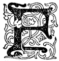

Der Schauplatz dieses 45. Bandes unserer Verne-Ausgabe ist die kleine schmale Landzunge von Florida – der Jugend durch die spannenden Erzählungen aus dem Untergange der Seminolen hinreichend bekannt – die Zeit jener furchtbaren Epoche des nordamerikanischen Bürgerkriegs, in welcher das gewaltige Ländergebiet durch den Streit um die Freiheit der Neger in zwei einander ebenbürtige Hälften zerrissen worden war. Die hauptsächlichen Ereignisse dieses blutigen Krieges ziehen in großer Deutlichkeit und klarer Entwicklung vor den Augen des Lesers vorüber, und in diese weltgeschichtlichen Begebenheiten hinein ist die Leidensgeschichte einer Pflanzerfamilie verwoben, deren Oberhaupt der Abstammung und Gesinnung nach der Nordpartei angehört und inmitten einer der Südpartei zuneigenden, von der Kriegeswut hingerissenen Bevölkerung eine gefährdete Stellung einnimmt.
Der engere Schauplatz der Erzählung – die Lage der Pflanzung und der Stadt, in der die Gegenpartei ihr Lager hat, ist von Verne wieder mit großem Geschick gewählt worden. Für die Abwickelung der Handlung ist bei Verne stets weniger die Charaktergestaltung der Figuren als die Bodengestaltung des Schauplatzes von Wichtigkeit, und in der eigentlichen Topographie liegt in vielen seiner Erzählungen der Schwerpunkt und der Hebel des Dramas.
Hier trifft dies in vollem Maße zu und könnte durch eine Situationskarte sofort veranschaulicht werden. Der einzige bedeutende Fluß der Halbinsel, der St. John mit seinen beiden, teils dicht bewaldeten, teils versumpften Ufern und seinen zahlreichen Windungen und Buchten ist der charakteristische Schauplatz für die spannenden Ereignisse, die in der Pflanzung Camdleß-Bai am rechten und in der Stadt Jacksonville am linken Ufer die Aufmerksamkeit des Lesers bis zur letzten Seite fesseln.
Der erste Band bricht an einem Höhepunkt des Konfliktes ab, und mit dem gesteigertsten Interesse wird der Leser zum zweiten Bande greifen, um die weitere Gestaltung des Dramas zu verfolgen.
 Florida war im Jahre 1819 den Vereinigten Staaten von Amerika angegliedert worden und wurde ein paar Jahre später ein eigener Staat. Durch diese Angliederung wuchs das Territorium der Republik um 67 000 Quadratmeilen. Aber das Gestirn Florida strahlt nur als Stern zweiter Klasse in der Reihe der 37 Sterne auf der Flagge der Vereinigten Staaten von Amerika.
Es ist nur eine schmale, flache Landzunge, dieses Florida. Infolge seiner geringen Breite können die Flüsse, die es bewässern, mit Ausnahme des St. John, keine bedeutende Ausdehnung annehmen. Auf einem so eben verlaufenden Gelände haben die Wasserläufe ein zu geringes Gefälle, um reißend zu strömen. Kaum finden sich hier ein paar jener »Bluffs« oder Hügel, wie sie in den Mittel- und Nordgebieten der Union so zahlreich sind. Die Gestalt dieser Halbinsel könnte man mit einem Biberschwanz vergleichen, der zwischen dem Atlantischen Ozean im Osten und dem Golf von Mexiko im Westen im Meere hängt.
Florida hat daher keine Grenznachbarn, wenn man von Georgia absieht, das gegen Norden daran stößt. Diese Grenze bildet den Isthmus, durch den die Halbinsel mit dem Kontinent zusammenhängt.
Im Grunde erscheint Florida als ein Land für sich, als ein sogar recht eigentümliches Gebiet, mit seinen halb spanischen, halb amerikanischen Einwohnern und seinen Indianern vom Stamme der Seminolen, die von ihren Stammesbrüdern des Wilden Westens sehr verschieden sind. Obwohl trocken, sandig und fast ganz von Dünen eingefaßt, die der Atlantische Ozean am Südufer nach und nach angeschwemmt hat, erfreut es sich doch in seinen nördlichen Ebenen einer wundervollen Fruchtbarkeit. Es trägt seinen Namen mit Recht. Die Flora ist herrlich, gewaltig, von überreicher Mannigfaltigkeit. Das rührt ohne Frage daher, weil dieser Teil des Gebietes vom Saint-John bewässert wird. Dieser Fluß strömt von Süden nach Norden in einem Lauf von 250 Meilen breit dahin, von denen 107 Englische Meilen (250 = ca. 400 km, 107 = ca. 170 km. bis zum George-See bequem schiffbar sind. Die Länge, die den quer das Land durchströmenden Flüssen fehlt, mangelt ihm Dank seiner Stromrichtung nicht. Zahlreiche Rios ergießen sich bei den zahlreichen Ausbuchtungen seiner beiden Ufer in ihn. Der Saint-John ist der Hauptfluß des Landes. Er belebt es mit seinem Wasser – jenem Blute, das in den Adern der Erde rollt.
Am 7. Februar 1862 fuhr der Dampfer »Shannon« den Saint-John stromab. Um vier Uhr nachmittags sollte er an dem kleinen Flecken Picolata anlegen, nachdem er an den obern Stationen des Flusses und den verschiedenen Forts der Counties Saint-Jean und Putnam Halt gemacht hatte. Ein paar Meilen weiter sollte er dann in das County Duval einlaufen, das bis zum County Nassau reicht, welches wiederum von dem Flusse gleiches Namens begrenzt wird.
Picolata selber ist nicht sehr bedeutend, aber die Umgebung ist reich an Indigo und Reispflanzungen, an Baumwoll- und Zuckerrohrfeldern und an riesigen Zypressenwäldern. Hier wohnt in ziemlich weitem Umkreis auch eine zahlreiche Bevölkerung. Ferner herrscht infolge der Lage ein ziemlich reger Personen- und Waren-Verkehr. Es ist der Einschiffungspunkt nach St. Augustine, einer der Hauptstädte des östlichen Florida, die, etwa zwölf Meilen von Picolata entfernt, an jenem Teil der Meeresküste liegt, der von der langen Insel Anastasia geschützt wird. Ein schnurgerader Weg führt von dem Flecken nach der Stadt.
An diesem Tage hätte man an den Anlegestegen von Picolata eine größere Anzahl von Reisenden zählen können als sonst. Ein paar schnell verkehrende Postkutschen, sogenannte »Stages«, eine Art Wagen mit acht Plätzen und mit vier bis sechs Mauleseln bespannt, die wie wahnsinnig auf dieser Strecke über das Sumpfland hingaloppieren, hatten sie nach St. Augustine gebracht. Die Anlegezeit des Dampfers durfte nicht verpaßt werden, wenn man nicht eine Verspätung von wenigstens 48 Stunden erleiden wollte, ehe man mit den stromabwärts gelegenen Städten, Flecken, Forts und Dörfern wieder Verbindung hätte erhalten können.
Der »Shannon« fuhr nämlich nur einmal am Tage von beiden Ufern des St. John ab und versah zur Zeit ganz allein den Beförderungsdienst. Man mußte daher pünktlich zu der Zeit, wo er in Picolata anlegte, dort sein. Vor einer Stunde hatten die »Stages« ihre Fahrgäste ausgesetzt.
In diesem Augenblicke standen ihrer etwa fünfzig auf der Landungsbrücke von Picolata. In lebhaftem Geplauder begriffen, warteten sie. Es war zu bemerken, daß sie sich in zwei Gruppen schieden, die anscheinend wenig Neigung hatten, miteinander in Berührung zu treten. Hatte ein wichtiges Geschäftsinteresse oder eine politische Angelegenheit diese Leute nach St. Augustine geführt? Jedenfalls stand fest, daß eine Einigung zwischen den beiden Gruppen sich nicht vollzogen hatte. Wenn sie als Feinde gekommen waren, so kehrten sie nun auch als Feinde zurück. Das war nur zu deutlich an den erbosten Blicken zu merken, die sie austauschten, an der auffälligen Sonderung in zwei Abteilungen, an ein paar mißtönenden Worten, deren herausfordernde Bedeutung alle herauszuhören schienen.
Inzwischen erschallten flußaufwärts langgezogene Pfiffe. Bald erschien um ein Knie zur Rechten herum, eine halbe Meile oberhalb von Picolata, der »Shannon«. Dicke Dampferwolken, aus seinen beiden Essen entströmend, zogen über die hohen Bäume hin, die am andern Ufer im Meereswinde rauschten. Das stattliche Schiff wuchs im Näherkommen. Die Flut war im Fallen begriffen. Ihre Strömung hatte in den letzten drei Stunden die Fahrt behindert und verlangsamt, förderte sie nun aber, indem sie das Wasser des St. John nach seiner Mündung zurückströmen ließ.
Endlich ertönte die Glocke. Die Räder, die den Wasserspiegel schlugen, brachten den »Shannon« zum Halten, der nun dicht an die Landungsbrücke anlegte, von den Schiffstauen gehalten.
Sofort begaben sich die Leute in Eile auf Deck. Eine der zwei Gruppen ging zuerst an Bord, ohne daß die andere ihr zuvorzukommen versucht hätte. Das kam ohne Frage daher, weil letztere noch ein paar verspätete Reisende erwartete, welche in Gefahr waren, das Boot zu verpassen; denn ein paar Männer lösten sich aus dieser Gruppe und eilten nach dem Quai von Picolata bis zu der Stelle hin, wo die Straße von St. Augustine mündet. Von dort aus spähten sie nach Osten, in sichtlicher Unruhe.
Nicht ohne Grund, denn der auf der Kommandobrücke stehende Kapitän des »Shannon« rief:
»Einsteigen! Einsteigen!«
»Noch ein paar Minuten,« sagte einer der Leute, der auf der Brücke geblieben war.
»Ich kann nicht warten, meine Herren!«
»Ein paar Minuten bloß!«
»Nein! Nicht eine Minute!«
»Nur einen Augenblick!«
»Unmöglich! Die Flut fällt, und ich laufe Gefahr, am Strande von Jacksonville nicht genug Wasser zu finden.«
»Uebrigens,« sagte einer der Reisenden, »liegt kein Grund vor, weshalb wir uns nach den Launen von Nachzüglern richten sollten.«
Der diese Worte gesprochen hatte, gehörte zu der ersten Gruppe, die sich schon nach hinten begeben hatte.
»So denke ich auch, Herr Burbank,« versetzte der Kapitän. »Der Dienst geht vor! Schnell, meine Herren, einsteigen! ich gebe jetzt den Befehl, die Taue zu lösen.«
Schon schickten die Matrosen sich an, das Dampfboot von dem Stege abzustoßen, während aus der Dampfpfeife tiefes Brausen klang. Ein Schrei gebot jedoch Einhalt.
»Da ist Texar! – da ist Texar!«
Ein Wagen kam im schärfsten Galopp auf den Quai von Picolata gefahren. Die vier Maulesel, die das Gespann bildeten, machten vor der Brücke Halt. Ein Mann stieg aus. Diejenigen seiner Gefährten, die bis an die Straße gegangen waren, eilten auf ihn zu. Dann gingen sie allesamt an Deck.
»Einen Augenblick später, Texar, und du wärst nicht mitgekommen! Das wäre doch unangenehm gewesen!« sagte einer von ihnen.
»Ja, dann hättest du erst in zwei Tagen zurück sein können in – wo denn? Das werden wir hören, wenn dir's zu sagen beliebt!« setzte ein anderer hinzu.
»Und wenn der Kapitän auf diesen unverschämten James Burbank gehört hätte,« sagte ein dritter, »dann wäre der »Shannon« jetzt schon eine gute Viertelmeile von Picolata weg.«
Texar hatte sich auf das Vorderdeck begeben, seine Freunde folgten ihm. Er warf James Burbank, von dem er nur durch die Kommandobrücke getrennt war, einen flüchtigen Blick zu. Wenn er auch kein Wort sprach, so gab doch dieser Blick zur Genüge zu verstehen, daß zwischen den beiden Männern ein unversöhnlicher Haß bestand.
James Burbank sah Texar voll ins Gesicht, drehte ihm dann den Rücken zu und setzte sich auf das Hinterdeck zu den Seinen, die dort schon alle Platz genommen hatten.
»Fuchsteufelswild, der Burbank!« sagte einer der Gefährten Texars. »Das läßt sich denken. Das hat er nun von seinen Schwindeleien und der Gerichtsherr hat seine falschen Aussagen zurückgewiesen, wie sie es verdienten –«
»Aber ihn selber aufs höflichste behandelt,« antwortete Texar, »und auf diese Gerechtigkeit pfeife ich.«
Inzwischen hatte der »Shannon« die Taue gelöst. Mit langen Stangen abgestoßen, kam das Boot in die Strömung. Dann trieben es die mächtigen Ruder hinweg, denen die zurückweichende Flut noch zu Hilfe kam, und es glitt geschwind zwischen den Ufern des St. John dahin.
Die Bauart der zum Dienst auf den amerikanischen Flüssen bestimmten Dampfer ist bekannt. Es sind wahre Häuser von mehreren Stockwerken mit breiten Terrassen. Die Dampfessen ragen hoch empor, und die Flaggenmasten tragen das Tauwerk der Zeltüberdachung. Die auf dem Hudson und dem Mississippi verkehrenden Dampfboote, wahre Seepaläste, können die Bevölkerung einer ganzen Ortschaft in sich aufnehmen. So groß waren die Ansprüche hier auf dem St. John und für die Städte Floridas natürlich nicht. Der »Shannon« war nur ein schwimmendes Hotel, doch glich er im Innern wie im Aeußern völlig jenen größern Fahrzeugen.
Das Wetter war herrlich. Der tiefblaue Himmel war von ein paar kleinen Dampfwölkchen befleckt, die am Horizont verstreut waren. Hier unter dem 30. Breitengrade ist in der neuen Welt der Februar ebenso heiß, wie in der alten an der Grenze der Wüste Sahara.
Immerhin milderte eine frische Seebrise das Unerträgliche der Temperatur. Daher waren die Fahrgäste des »Shannon« zum größten Teile auf Deck geblieben, um den starken Duft einzuatmen, den der Wind aus den Wäldern zu beiden Ufern herüber trug. Unter dem Zeltdach, das bei der Schnelligkeit des Dampfers wie indische Punkas hin und her schwankte, waren sie vor den schrägen Strahlen der Sonne geschützt.
Texar und die fünf bis sechs Gefährten, die mit ihm eingestiegen waren, hatten es für gut erachtet, in eine der Abteilungen des Speisesaals hinunterzugehen. Als Trinker, deren Gaumen an die starken Liköre der amerikanischen Bars gewöhnt war, leerten sie hier ganze Gläser von Gin, Bitter und Bourbon-Whisky. Es waren größtenteils hagebuchene Kerle; in ihrem Wesen keine Spur von »comme il faut« – in ihren Reden grobkörnig – mehr in Leder als in Tuch gekleidet – mehr gewöhnt, in den dichten Wäldern zu leben, als in den Städten Floridas.
Texar schien zwischen ihnen eine Machtvollkommenheit zu haben, die zweifelsohne weniger auf einer bedeutenderen Stellung oder einem größern Vermögen als vielmehr auf der Energie seines Charakters beruhte. Da Texar nicht redete, verhielten sich daher auch seine Gefährten schweigsam und benutzten die Zeit, die sie nicht zum Sprechen brauchten, zum Trinken.
Nachdem Texar eins der Blätter durchflogen hatte, die auf den Tischen des Speisesaals herum lagen, legte er es beiseite und sagte:
»Das ist schon alt!«
»Glaub's wohl!« antwortete einer seiner Gefährten. »Die Nummer ist schon drei Tage alt!«
»Und in drei Tagen passiert vieles, seit jetzt an unsern Toren der Krieg tobt!« setzte ein anderer hinzu.
»Wie steht's mit dem Krieg?« fragte Texar.
»Soweit es uns im besonderen angeht, Texar, steht es so: Die Bundesregierung befaßt sich, wie es heißt, mit den Vorbereitungen zu einem Zuge gegen Florida. Man muß daher in Kürze auf einen Einfall der Nördlichen gefaßt sein.«
»Ist das gewiß?«
»Das weiß ich nicht; aber ich habe es in Savannah gehört, und in St. Augustine ist das Gerücht bestätigt worden.«
»Eh! so mögen sie kommen, wenn sie sich's zutrauen, uns zu unterwerfen!« rief Texar, seine Drohung mit einem Faustschlag, unter dem Gläser und Flaschen auf dem Tische tanzten, nachdrücklich verstärkend. »Ja! Sie sollen nur kommen! Wir werden ja sehen, ob die Sklavenbesitzer von Florida sich von diesen Räubern von Abolitionisten ausplündern lassen.«
Diese Antwort Texars hätte jeden, der über die damals in Amerika vorgehenden Ereignisse nicht auf dem Laufenden war, über zweierlei unterrichtet: erstens, daß der Sezessionskrieg, der durch den am 11. April 1861 gegen das Fort Sumter abgefeuerten Kanonenschuß erklärt worden war, damals bereits in seine schärfste Phase getreten war, denn er erstreckte sich schon bis an die äußersten Grenzen der Südstaaten; ferner daß Texar als Parteigänger der Sklavenhalterei gemeinsame Sache mit der großen Mehrheit der Sklavenstaaten machte.
An Bord des »Shannon« befanden sich eben jetzt mehrere Repräsentanten beider Parteien: einerseits – um die verschiedenen Bezeichnungen zu gebrauchen, die ihnen während dieses langen Kampfes gegeben wurden – Nördliche, Antisklaverei-Leute, Abolitionisten oder Föderierte; andererseits: Südliche, Sklavenhalter, Sezessionisten oder Konföderierte.
Eine Stunde später erhoben sich Texar und die Seinen, mehr als hinreichend gestärkt, um sich wieder auf Deck des »Shannon« zu begeben. Am rechten Ufer war man schon an der Trentbucht und der Sechsmeilenkrampe vorbei; die eine zieht sich bis an einen dichten Zypressenwald hin, die andere bis zu den weiten Zwölfmeilen-Sümpfen, deren Name ihre Ausdehnung bezeichnet.
Das Dampfboot fuhr jetzt zwischen zwei Säumen prachtvoller Bäume dahin: hier standen Tulpenbäume, Magnolien, Fichten, Zypressen, immergrüne Eichen, Yukkas und viele andere von stolzem Wuchse, deren Stämme unter dem unentwirrbaren Gestrüpp der Azaleen und Schlingpflanzen verschwanden. Bisweilen, wenn man an den Krampen vorbeikam, die den sumpfigen Ebenen der Counties St. Jean und Duval Wasser zuführen, war die Luft von starkem Moschusduft durchtränkt.
Dieser Geruch kam nicht von jenen Gewächsen, deren Ausdünstungen unter diesem Klima so penetrant sind, sondern vielmehr von den Alligatoren, die sich vor dem Geräusch, das der »Shannon« im Vorbeifahren machte, in das hohe Kraut flüchteten.
Da waren ferner Vögel aller Arten: Spechte, Reiher, Goldvögel, Rohrdommeln, Weißkopf-Tauben, Orpheen, Spottdrosseln und hundert andere von mannigfachster Gestalt und verschiedenstem Gefieder, während der Katzenvogel mit seiner Bauchrednerstimme jedes Geräusch der Außenwelt wiedergab – sogar jenen Schrei des Krausenhahnes, der hell wie ein Trompetenstoß klingt und dessen Ton man vier bis fünf Meilen weit hören kann.
In dem Augenblick, als Texar den Fuß auf die letzte Treppenstufe setzte, ehe er wieder auf Deck trat, wollte eben eine Frau in den Speisesaal hinuntersteigen. Als sie sich diesem Manne gegenüber sah, wich sie zurück. Es war eine Mestizin, die bei der Familie Burbank in Dienst stand. Ihre erste Regung war unüberwindlicher Abscheu, als sie so unvermutet diesem erklärten Feinde ihres Herrn begegnete. Ohne vor dem bösen Blick, den Texar ihr zuwarf, stehen zu bleiben, trat sie rasch zur Seite. Er aber zuckte die Achseln und wandte sich an seine Gefährten.
»Ja, das ist Zermah,« rief er, »eine Sklavin jenes James Burbank, der sich das Air gibt, kein Parteigänger der Sklavenhalter zu sein!«
Zermah antwortete nichts. Als die Treppe frei war, ging sie in den großen Salon des »Shannon« hinunter, ohne, wie es schien, sich irgendwie um diese Worte zu kümmern.
Texar schritt nach dem Vorderteil des Dampfbootes. Dort zündete er sich eine Zigarre an, befaßte sich nicht weiter mit seinen Kameraden, die ihm gefolgt waren, und schien mit großer Aufmerksamkeit das linke Ufer des St. John zu betrachten, das hier die Grenze des County Putnam bildete.
Währenddes wurde auf dem Hinterdeck des »Shannon« ebenfalls der Stand des Krieges erörtert. Nachdem Zermah gegangen war, befand sich James Burbank mit den zwei Freunden, die ihn nach St. Augustine begleitet hatten, allein. Der eine war sein Schwager, Mr. Edward Carrol, der andere ein Floridier, der in Jacksonville wohnte, namens Walter Stannard.
Auch sie sprachen mit Erregung über den blutigen Kampf, dessen Ausgang für die Vereinigten Staaten eine Frage auf Leben und Tod war. Aber James Burbank betrachtete, wie man sehen wird, die Dinge von anderem Gesichtspunkte aus als Texar.
»Ich habe Eile,« sagte er, »nach Camdleß-Bai zurückzukommen. Wir sind zwei Tage weg. Vielleicht sind Kriegsnachrichten eingetroffen. Vielleicht sind Dupont und Sherman bereits Herren von Port-Royal und den Inseln von Süd-Karolina.«
»Jedenfalls kann das nicht mehr lange dauern,« antwortete Edward Carrol, »und es sollte mich wundern, wenn Präsident Lincoln nicht daran dächte, den Krieg bis nach Florida auszudehnen.«
»Das könnte nicht früh genug geschehen!« entgegnete James Burbank. »Ja! Es ist hohe Zeit, die Bestimmungen der Union all diesen Südlichen in Georgia und Florida aufzulegen, die denken, sie sind weit genug vom Schusse und können nicht belangt werden. Man sieht ja, wie weit solche herrenlose Kerle wie dieser Texar die Unverschämtheit treiben! Er fühlt sich unterstützt von den Sklavenhaltern dieses Landes, er hetzt sie gegen uns Leute vom Norden, und unsere Lage wird immer schwieriger, und alle Rückschläge des Krieges fallen auf uns!«
»Du hast recht, James,« erwiderte Edward Carrol. »Es ist nötig, daß Florida sobald wie möglich wieder unter die Autorität der Regierungen von Washington kommt. Ja! Auch ich wünsche sehnsüchtig, daß das Bundesheer hier wieder die gesetzlichen Zustände herstellt, sonst werden wir schließlich unsere Pflanzungen verlassen müssen.«
»Das kann nur noch eine Frage von Tagen sein, mein lieber Burbank,« sagte Walter Stannard. »Als ich vorgestern Jacksonville verließ, waren die Gemüter schon lebhaft beunruhigt, weil man davon sprach, daß der Kommodore Dupont die Einfahrt in den St. John erzwingen wollte. Und das hat einen Vorwand gegeben, diejenigen zu bedrohen, die nicht wie die Anhänger der Sklaverei denken. Ich fürchte, daß in Kürze ein Straßentumult die städtische Behörde stürzen wird und daß Kerle von der schlimmsten Sorte ans Ruder kommen werden.«
»Das wundert mich nicht,« antwortete James Burbank. »Wir können uns auch, wenn erst das Bundesheer anrückt, auf böse Tage gefaßt machen. Aber es ist unmöglich, dem vorzubeugen.«
»Was sollten wir auch tun?« entgegnete Walter Stannard. »Wenn auch in Jacksonville und an andern Orten Floridas sich einige wackere Kolonisten befinden, die über die Sklavenfrage ebenso denken wie wir, so sind sie doch nicht zahlreich genug, um den Uebergriffen der Sezessionisten Widerstand bieten zu können. Wir können nicht eher uns in Sicherheit glauben, als bis die Armee der Föderierten eingetroffen ist, und obendrein wäre, wenn ihr Einmarsch wirklich schon beschlossen sein sollte, zu wünschen, daß er unverzüglich bewerkstelligt würde.«
»Ja! Möchten sie nur kommen,« rief James Burbank, »und uns von diesen Bösewichten befreien!«
Es wird sich bald zeigen, ob die Nördlichen, die infolge von Familien- oder Vermögens-Interessen gezwungen waren, sich den Gebräuchen des Landes, wo sie inmitten einer Bevölkerung von Sklavenhaltern lebten, anzupassen – berechtigt waren, solche Sprache zu führen, und nicht vielmehr Ursache hatten, auf alles gefaßt zu sein.
Was James Burbank und seine Freunde vom Kriege dachten, traf zu. Die Bundesregierung bereitete eine Expedition vor, die den Zweck hatte, Florida zu unterwerfen. Es handelte sich weniger darum, sich des Staates zu bemächtigen, oder ihn militärisch zu besetzen, als vielmehr darum, jeder Konterbande den Zugang abzuschließen. Deswegen getraute sich auch der »Shannon« nicht mehr, die Südküste von Georgia zu befahren, die schon in der Gewalt der Generale der Nördlichen war. Aus Vorsicht blieb er an der Grenze und fuhr nur ein Stückchen über die Mündung des St. John hinaus gegen den Norden der Amelia-Insel bis zu dem Hafen Fernandina, von wo die Eisenbahnlinie von Cedar-Keys ausgeht, die die floridische Halbinsel schräg durchschneidet und am Golf von Mexiko endet. Jenseits der Amelia-Insel und des Rio St. Mary hätte der »Shannon« Gefahr gelaufen, von den Schiffen der Föderierten gekapert zu werden, die unausgesetzt diesen Teil der Küste überwachten.
Hieraus folgt, daß die Fahrgäste des Dampfers alles solche Floridier waren, die nicht aus Rücksicht auf ihre Verhältnisse gezwungen waren, sich über die Grenzen Floridas hinauszubegeben. Alles wohnte in den Städten, Flecken oder Weilern, die an den Ufern des St. John oder seiner Zuflüsse liegen, und größtenteils in St. Augustine oder in Jacksonville. An diesen verschiedenen Oertlichkeiten konnten sie an den Landungsbrücken aussteigen oder an den sogenannten »Piers«, hölzernen Anlegestegen, die, nach englischer Mode erbaut, besondere Ausladeboote überflüssig machten.
Einer der Fahrgäste mußte jedoch das Dampfboot auf dem freien Flusse verlassen. Er beabsichtigte auszusteigen, ohne abzuwarten, bis der »Shannon« an einer Haltestelle angelegt hatte – und zwar an einem Punkt des Ufers, wo weder ein Dorf noch ein einzelnes Haus, ja nicht einmal eine Jäger- oder Fischerhütte zu sehen war.
Dieser Fahrgast war Texar.
Gegen sechs Uhr abends stieß der »Shannon« drei scharfe Dampfpfiffe aus. Seine Räder stoppten gleichzeitig, und er ließ sich von der Strömung treiben, die hier sehr schwach ist. Er befand sich jetzt vor der Schwarzen Krampe.
Diese Bucht ist ein tiefer Einschnitt des linken Ufers, an dessen Ende ein kleiner namenloser Rio mündet, welcher am Fuße des Fort Heilman vorbeifließt, fast genau auf der Grenze zwischen den Counties Putnam und Duval. Ihre enge Oeffnung verschwindet fast unter einer Wölbung dichter Zweige, deren Blätterwerk wie ein dichtes Gewebe in einander greift. Diese düstre Lagune ist fast unbekannt. Noch nie hat jemand versucht, hier hineinzudringen, und niemand wußte, daß sie diesem Texar zur Wohnung diente. Das Ufer des St. John scheint nämlich an der Mündung der Schwarzen Krampe für das Auge an keinem Punkte durch irgend welchen Einschnitt unterbrochen zu sein. Bei der rasch hereinbrechenden Nacht hätte man daher jetzt diese in tiefen Schatten versunkene Krampe sehr genau kennen müssen, wenn man mit einem Kahn die Einfahrt hätte finden wollen.
Auf die ersten Pfiffe des »Shannon« hatte sogleich ein Schrei dreimal Antwort gegeben. Ein Feuerschein, der zwischen dem hohen Gras des Ufers leuchtete, hatte sich in Bewegung gesetzt. Das war das Zeichen, daß ein Kanoe herankam, um an dem Dampfer anzulegen.
Es war ein bloßes Skiff, ein Rindenboot, das mit einer Pagaie gelenkt und getrieben wurde. Bald war dieses Skiff nur noch eine halbe Kabellänge vom »Shannon« entfernt.
Texar ging jetzt an die Bordöffnung des Vorderdecks und legte die Hände an den Mund.
»Aoh!« rief er.
»Aoh!« tönte es zurück.
»Bist du's, Squambo?«
»Ja, Herr!«
»Leg an!«
Das Skiff legte an. Beim Schein der in der Spitze befestigten Fackel konnte man den Mann sehen, der es steuerte. Es war ein Indianer mit schwarzem Haar, nackt bis zum Gürtel – nach dem im Lichte erkennbaren Oberkörper zu schließen, ein kräftiger Bursche.
In diesem Augenblick wandte Texar sich an seine Gefährten, drückte ihnen die Hand und rief ihnen ein vielsagendes Lebewohl zu. Nachdem er einen drohenden Blick nach Herrn Burbank hin geworfen hatte, stieg er die Treppe hinunter, die am Radmantel der Backbordschaufel angebracht war, und stieg zu dem Indianer Squambo ins Boot. i
Mit wenigen Raddrehungen hatte sich der Dampfer von dem Skiff entfernt, und niemand an Bord konnte auf den Gedanken kommen, daß das leichte Fahrzeug sich unter dem finstern Laubwerk des Flußarmes verlieren würde.
»Ein Schuft weniger an Bord!« sagte Edward Carrol, der sich nicht daran kehrte, ob die Gefährten Texars ihn hören konnten.
»Ja,« antwortete James Burbank, »und das ist obendrein ein gefährlicher Verbrecher. Ich meinesteils hege in diesem Punkte keinerlei Zweifel, obgleich dieser Elende sich durch seine wirklich unerklärlichen Alibi-Beweise immer aus der Schlinge zu ziehen wußte.«
»Wenn jedenfalls,« sagte Herr Stannard, »in dieser Nacht in der Gegend von Jacksonville ein Verbrechen begangen worden ist, so kann man ihn dessen nicht verdächtigen, da er ja den »Shannon« verlassen hat.«
»Ich bin mir nicht klar,« entgegnete James Burbank. »Wenn man mir sagte, man hätte ihn in eben dem Augenblick, wo wir miteinander sprechen, fünfzig Meilen weiter im Norden von Florida stehlen und morden sehen, so würde mich das gar nicht wundern! Wenn es ihm dann allerdings gelänge, zu beweisen, daß er nicht das Verbrechen begangen habe, so würde das mich ebenso wenig wundern, nach dem, was ich erlebt habe. Aber es ist schon an sich eine Schmach, sich mit diesem Menschen überhaupt zu befassen. Gehen Sie wieder nach Jacksonville, Stannard?«
»Heute abend noch.«
»Erwartet Sie Ihre Tochter?«
»Ja, und es eilt mir, zu ihr zu kommen.«
»Das begreife ich,« antwortete James Burbank, »und wann dürfen wir auf Ihren Besuch in Camdleß-Bai bestimmt rechnen?«
»In ein paar Tagen.«
»Kommen Sie nur, sobald Sie irgend können, mein lieber Stannard. Sie wissen, wir stehen am Vorabend ernster Ereignisse, die bei der Annäherung der Bundesarmee sich nur noch ernster gestalten werden. Es ist daher die Frage, ob Sie mit Ihrer Tochter Alice bei uns in Castle-House nicht besser in Sicherheit sind, als mitten in dieser Stadt, wo die Südlichen zu allen möglichen Exzessen fähig sind.«
»Nun, bin ich nicht selber ein Mann des Südens, lieber Burbank?«
»Gewiß, Stannard, aber Sie denken und handeln wie einer vom Norden.«
Eine Stunde später fuhr der »Shannon«, hinweggeführt von der allmählich reißender gewordenen Ebbe, an dem kleinen Ort Mandarin vorbei, der auf einem grünen Hügel liegt.
Hier war ein Quai angelegt, an dem die Schiffe anlegen konnten, um Ladung aufzunehmen. Ein Stück stromauf lag ein elegantes »Pier«, ein leichter Holzsteg, der von zwei eisernen Ketten gehalten wurde. Das war die Anlegestelle von Camdleß-Bai.
Am Ende des »Pier« warteten zwei Schwarze, die Fackeln trugen; denn es war schon finstre Nacht.
James Burbank verabschiedete sich von Herrn Stannard und betrat mit Edward Carrol den Landungssteg.
Hinter ihm schritt die Mestizin Zermah, die schon von weitem einer Kinderstimme antwortete:
»Da bin ich, Dy! – Da bin ich!«
»Und Vater?«
»Vater auch!«
Die Fackeln entfernten sich, und der »Shannon« setzte seine Fahrt fort, schräg nach dem linken Ufer hinüber steuernd. Drei Meilen über Camdleß-Bai hinaus machte er an der andern Seite des Flusses an der Landungsbrücke von Jacksonville Halt, um den größten Teil seiner Fahrgäste abzusetzen.
Hier stieg Walter Stannard aus und mit ihm drei bis vier der Leute, von denen sich Texar vor anderthalb Stunden verabschiedet hatte, als der Indianer ihn mit dem Skiff abgeholt hatte.
Nun waren nur noch etwa ein halbes Dutzend Fahrgäste an Bord, die einen nach Pablo bestimmt, einem kleinen Flecken in der Nähe des Leuchtturms, der an den Mündungen des St. John erbaut worden ist; die andern nach der Talbot-Insel bestimmt, die an der See vor der Mündung des gleichnamigen Wasserlaufes liegt, die letzten endlich nach dem Hafen Fernandina bestimmt.
Der »Shannon« setzte seine Fahrt auf dem Flusse fort, und eine Stunde später war er um die Biegung der Trout-Krampe verschwunden, wo der St. John seine schon hohl gehenden Wogen mit der Brandung des Ozeans vermischt.
Camdleß-Bai war der Name der James Burbank gehörigen Pflanzung. Hier wohnte der reiche Kolonist mit seiner ganzen Familie. Dieser Name »Camdleß« kam von einer der Krampen des St. John, die ein Stück stromaufwärts von Jacksonville am entgegengesetzten Ufer sich auftut. Dank der geringen Entfernung ist ein rascher Verkehr mit der floridischen Stadt möglich. Wenn man in einem guten Kahn bei Nord- oder Südwind fuhr und bei der Hinfahrt die Ebbe, bei der Rückfahrt die Flut benutzte, brauchte man nur eine Stunde, um die drei Meilen zurückzulegen, die Camdleß-Bai von der Hauptstadt des County Duval trennen.
James Burbank besaß eines der schönsten Güter des Landes. Reich an sich und durch seine Familie, hatte er sein Vermögen noch durch bedeutenden Landbesitz im Staat Neu-Jersey, der an den Staat Neu-York grenzt, vermehrt.
Dieser Fleck Erde am rechten Ufer des St. John war zur Anlage einer sehr wertvollen Niederlassung glücklich gewählt worden. Die von der Natur schon besorgten sehr vorteilhaften Vorbereitungen brauchten von der Hand des Menschen nicht verbessert zu werden. Dieses Gelände gab sich ganz von selbst einer ausgedehnten Kulturverwertung preis. Die Pflanzung Camdleß-Bai, geleitet von einem emsigen, klugen, im kräftigsten Alter stehenden Manne, dem ein tüchtiges Personal an die Hand ging und dem es an Kapital nicht fehlte, stand daher in schönster Blüte.
Bei einem Durchmesser von zwölf Meilen hatte die Pflanzung einen Flächeninhalt von 4000 Ackern oder etwa 3000 Hektar. Wenn auch in den Südstaaten der Union noch größere Besitzungen vorhanden waren, so doch keine, die vorzüglicher verwaltet gewesen wäre.
Das Wohnhaus, die Gesindestuben, die Ställe, die Wohnungen für die Sklaven, die Betriebsanlagen, die Speicher zur Aufbewahrung der Bodenerzeugnisse, Lagerräume und Stapelplätze, Werkstätten und Maschinenhäuser, Schienenstränge von mehreren Punkten der Domäne nach dem kleinen Hafen, gute Wege für die Wagen – das alles war in bewundernswert praktischer Weise angelegt worden.
Daß ein Amerikaner vom Norden all das entworfen, angeordnet und ausgeführt hatte, sah man auf den ersten Blick. Nur die Niederlassungen ersten Ranges in Virginien oder den beiden Karolinas hätten mit der Domäne Camdleß-Bai sich messen können.
Bekanntlich ist die Baumwolle von Georgia und Florida wegen der Länge und Feinheit ihrer Fasern auf den europäischen und amerikanischen Märkten die am meisten gefragte Sorte. Die Baumwollfelder mit ihren in regelmäßigen Linien angepflanzten Stämmen bildeten daher eine der bedeutendsten Einkunftsquellen der Pflanzung. Zur Zeit der Ernte sind diese 40 bis 60 Ar messenden Felder von Hütten bedeckt, wo dann die mit dem Abpflücken beauftragten Sklaven mit Weib und Kind gleich draußen wohnen. Diese Baumwolle wird an der Sonne getrocknet, in einem Mühlwerk mit Zahnrädern gereinigt, in der hydraulischen Presse zusammengepreßt und, in Ballen mit Eisenschnüren verpackt, zur Ausfuhr aufgespeichert. Im Hafen von Camdleß-Bai selber konnten dann die Segel– oder Dampfschiffe diese Ballen verladen.
Neben den Baumwollfeldern hatte James Burbank auch große Kaffeeplantagen und Zuckerrohrfelder. Die erstern bestanden aus Anlagen von etwa 1200 Bäumen, die etwa 15 bis 20 Fuß hoch waren und in den Blüten dem spanischen Jasmin ähnelten. Ihre etwa kirschgroßen Früchte enthalten die beiden Bohnen, die bloß herausgenommen und getrocknet zu werden brauchen. Die andern waren weite Prärien, man hätte sagen können Sümpfe, auf denen das lange Rohr mächtig wucherte und neun bis achtzehn Fuß hoch wogte. Die Zuckerrohrernte war eine der wichtigsten Arbeiten in Camdleß– Bai. Zwar stand sie der Baumwollernte nach, war aber doch in hohem Maße ergiebig. Ein paar Einfriedigungen von Kakaobäumen, Mais-, Yams- und Batatefelder, Anpflanzungen von türkischem Weizen und Tabak, ein paar Strecken Reis steuerten einen beträchtlichen Teil zu den Erträgnissen der Pflanzung James Burbanks bei.
Aber ein anderes Feld der Ausbeutung brachte ebenso hohen Gewinn wie die Baumwoll-Kultur – nämlich die Urbarmachung der unerschöpflichen Wälder, von denen die Pflanzung bestanden war. Ganz zu schweigen von dem Ertrag der Zimmet-, Pfeffer-, Orangen-, Zitronen-, Oliven-, Feigen-, Mango- und Brotbäume, oder den Ernten all der auch in Europa heimischen Obstbäume, die in Florida herrlich akklimatisiert sind, werden diese Waldungen regelmäßig durchforstet und abgeschlagen. James Burbank hatte an verschiedenen Punkten der Besitzung große Sägewerke anlegen müssen. Wehre waren an einigen der in den St. John sich ergießenden Rios angebracht worden. Durch dieses Verfahren konnten die friedlichen Gewässer in Sturzbäche verwandelt werden, deren Fall die mechanische Kraft hergab, um die Stämme, Balken und Planken zu bearbeiten, von denen alljährlich hundert Schiffe ganze Ladungen abholten.
Außerdem sind noch weite, fette Prärien zu nennen, von denen sich Pferde, Maulesel und ein bedeutender Viehstand nährte.
Es läßt sich schwer eine Vorstellung geben, in wie zahlloser Menge Geflügel aller Arten in und um Camdleß-Bai herum – wie übrigens in ganz Florida – in den Wäldern hauste oder sich auf den Feldern und Wiesen herumtrieb. Ueber den Wäldern kreisten Weißkopf-Adler mit mächtiger Flügelweite, deren scharfer Schrei wie eine Trompetenfanfare klang, Geier von furchtbarer Wildheit, Riesenreiher mit Schnäbeln wie Bajonette. Am Flußufer zwischen dem hohen Schilf und dem riesigen Bambus lebten rosen- oder scharlachrote Flamingos, weiße Ibisse, kolossale Pelikane, Myriaden von Seeschwalben, Enten, Tauchern, Sturmvögeln, Kreuzschnäbeln, Seeraben, Möwen und vielen andern. Mitunter führte ein Windstoß sogar einen Schwarm fliegender Fische her, die für die Feinschmecker ein guter Fang sind. Auf den Wiesen wimmelte es von Schnepfen, Hühnern und Tauben. An eßbaren Vierfüßlern gab es weißschwänzige Hasen und Damwild; an sonstigem Getier Waschbären, Schildkröten, Ichneumons und unglücklicherweise nur zuviel Giftschlangen.
Dies waren die Vertreter des Tierreichs auf der prachtvollen Domäne Camdleß-Bai – ohne die männlichen und weiblichen Schwarzen zu rechnen, die die Arbeiten in der Pflanzung zu verrichten hatten. Und was macht die abscheuliche Sklaverei anderes aus diesen angekauften oder verkauften Menschenkindern als bloße Tiere?
Aber hatte nicht James Burbank als Anhänger der von den Gegnern der Sklaverei aufgestellten Lehren, als Nördlicher, der nur auf den Sieg des Nordens wartete, nicht schon die Sklaven seiner Pflanzung für frei erklärt? Zögerte er damit, bis die Umstände es ihm erlauben würden? Gewiß nicht! Es war nur noch eine Frage von Wochen, vielleicht von Tagen; denn das Heer der Föderierten hatte schon mehrere nahe Punkte des angrenzenden Staates besetzt und rüstete sich zu einem Einfall in Florida.
Uebrigens hatte James Burbank in Camdleß-Bai alles mögliche getan, das Los der Sklaven zu bessern. Es waren auf seiner Pflanzung etwa 700 Neger beiderlei Geschlechts, sie wohnten in ordentlichen Baracken, für ihren Unterhalt war vollauf gesorgt, und sie wurden nicht über ihre Kräfte hinaus zur Arbeit angetrieben. Der Oberverwalter und die Unterverwalter der Pflanzung waren gehalten, sie gerecht und mild zu behandeln. Die verschiedenen Dienstleistungen wurden denn auch aufs trefflichste versehen, obwohl in Camdleß-Bai körperliche Züchtigungen längst nicht mehr in Gebrauch waren – ein System, das zu dem auf den meisten andern Pflanzungen üblichen in schroffem Gegensatz stand und auf das die Nachbarn James Burbanks mit unverhohlener Mißbilligung blickten. Daher hatte dieser eine ziemlich schwierige Stellung im Lande – zumal zu dieser Zeit, da die Frage der Sklavenhalterei mit den Waffen in der Hand entschieden werden sollte.
Das Herrenhaus von Camdleß-Bai war von hohen Palisaden umschlossen, deren senkrecht, dicht gegeneinander gerammte Planken halb unter dem Grün der üppigen floridischen Vegetation verschwanden. Hier wohnte die Familie Burbank. Halb Haus, halb Schloß, führte diese Wohnstätte mit Recht den Namen Castle-House.
Seit vielen Jahren gehörte Camdleß-Bai den Ahnen James Burbanks. Zu einer Zeit, da noch die räuberischen Ueberfälle der Indianer zu fürchten waren, hatten die Eigentümer die Hauptwohnstätte befestigen müssen. Die Zeit, als der General Jessup noch Florida gegen die Seminolen verteidigt hatte, war noch nicht lange verflossen. Viele Jahre hindurch hatten die Kolonisten unter diesen Nomaden furchtbar zu leiden gehabt. Nicht nur wurden sie ausgeplündert, sondern auch hingemordet und ihre Häuser in Asche gelegt. Selbst die Städte waren oft von Plünderung bedroht. An manchen Stellen zeigten Ruinen, wo diese blutdürstigen Indianer vorübergezogen waren. Jetzt ist aber der Vernichtungskampf zwischen dem Bleichgesicht und der Rothaut beendet. Die Seminolen haben sich nach ihrer endgültigen Niederlage weit nach dem Westen des Mississippi zurückziehen müssen. Mau hört nichts mehr von ihnen, nur ein paar Horden durchstreifen noch die Sumpfgegend des südlichen Florida. Das Land hat von diesen wilden Eingeborenen nichts mehr zu fürchten.
Begreiflicherweise sind daher die Häuser der Kolonisten so angelegt worden, daß sie einem plötzlichen Ueberfall der Indianer Widerstand leisten konnten. Dies war auch bei Castle-House der Fall.
Castle-House stand auf einer kleinen Bodenerhöhung in einem abgeschlossenen, etwa drei Acres großen Parke, der nach hinten zu an das Ufer des St. John grenzte. Ein breiter Graben umgab diesen Park und war durch eine hohe Plankeneinfassung noch verstärkt worden. Eine Zugbrücke führte über diesen kreisrunden Rio hinweg und war der einzige Zugang. Das Schloß, das ziemlich unregelmäßig aufgeführt war, machte in der Gesamtheit einen verworrenen und in den Einzelheiten einen phantastischen Eindruck. Aber für den Fall, daß Angreifer die Plankenumzäunung des Parkes erstürmt hätten, so wäre es – was eben äußerst wichtig war – imstande gewesen, sich kraft seines bloßen Baues zu verteidigen und eine Belagerung von mehreren Stunden auszuhalten. Seine Fenster zu ebener Erde waren mit Eisenstäben versichert. Das Haupttor an der Vorderseite war fest wie ein Sturmgatter. Es hatte nur soviel Oeffnungen, als unbedingt nötig waren; der Mittelturm, auf dem das Sternenbanner der Vereinigten Staaten wehte, beherrschte den ganzen Bau, auf den Zinnen waren verschiedene Schießscharten angebracht, die Mauern waren am Fuße schief angesetzt. Mit seinen hochragenden Dächern, seinen zahlreichen Zinnen, der Dicke seiner Wände, in die hier und dort Brustwehren gebrochen waren, glich dieses Haus mehr einer Festung als einem Landhause.
Wie gesagt, man hatte es so anlegen müssen, um seinerzeit vor den Indianern von Florida sicher zu sein. Es bestand sogar ein unterirdischer Tunnel, der unter der Palisade und dem kreisrunden Rio hin Castle-House mit einer kleinen Bucht des St. John, der sogenannten Marino-Krampe, in Verbindung setzte. Dieser Tunnel sollte im Falle dringendster Gefahr eine geheime Flucht ermöglichen.
Die Notwendigkeit, Castle-House von außen zu befestigen, hatte indessen die Behaglichkeit des Innern nicht beeinträchtigt. Die Säle waren geräumig, die Zimmer prächtig ausgestattet. Die Familie Burbank hatte hier in wunderbarer Lage alle Behaglichkeit und alle Befriedigung, die Vermögen verschaffen kann, wenn es mit wahrhaft künstlerischem Sinne gepaart ist.
Hinter dem Schlosse zogen sich prachtvolle Gartenanlagen bis an die Palisade hin. Am Saume der Umzäunung erhoben sich unter dem Schatten von Zypressen und Baobabs die Stallungen, die Schuppen, die Hundeställe, die Bauten für das Milch- und Federvieh. Das Gezweig dieser schönen Bäume, das selbst für die Sonne dieser Breite undurchdringlich ist, schützte das Hausgetier vor der Hitze des Sommers. Das Wasser, das von den nahen Rios her hindurch geleitet wurde, verbreitete hier eine angenehme und gesunde Frische.
Dieser Privatbezirk, der den Besitzern von Camdleß-Bai zu eigen war, lag wie eine wunderbar eingerichtete Enklave inmitten der riesigen Niederlassung James Burbanks. Weder das Klappern der Baumwollmühlen, noch das Knirschen der Sägewerke, noch die Axtschläge der Holzfäller – kurz, kein Laut von dem mannigfachen Lärm, den ein so ausgedehnter Betrieb verursacht, drang über die Planken der Umzäunung hinüber.
Nur die tausend Vögel der floridischen Ornithologie konnten, von Zweig zu Zweig hüpfend, dorthin gelangen. Aber diese beflügelten Sänger, deren Gefieder an Farbenpracht mit den Blumen dieser Zone wetteifert, wurden ebenso freudig empfangen wie die Wohlgerüche, die die Luft von den Wiesen und Wäldern der Umgegend herübertrug.
So sah es aus in Camdleß-Bai, der Pflanzung James Burbanks – einer der reichsten Ansiedlungen des östlichen Florida.
Ein paar Worte über den Sezessionskrieg, mit dem diese Erzählung eng verknüpft ist, sind hier am Platze.
Zuvörderst sei von vornherein festgestellt: Dieser Krieg hatte, wie der Graf von Paris, ehemaliger Adjutant des Generals Mc. Clellan, in seiner hervorragenden »Geschichte des Bürgerkriegs in Amerika« betont hat, weder eine Tariffrage noch einen eigentlichen Stammesunterschied zwischen dem Norden und dem Süden zur Ursache. Die angelsächsische Rasse hatte im ganzen Gebiet der Vereinigten Staaten gleichmäßig die Oberhand. Auch die Handelsfrage hat in diesem furchtbaren Kampfe zwischen Brüdern niemals mitgespielt. Die Sklaverei, die in der einen Hälfte der Republik im Schwange, in der andern abgeschafft worden war, hatte zwei feindselige Gemeinden geschaffen. Sie war nicht der Vorwand oder die Gelegenheit, sondern die alleinige Ursache zu der Gegnerschaft, deren unvermeidliche Folge der Bürgerkrieg war.
In den Sklavenstaaten gab es drei Klassen. Die niedrigste bestand aus vier Millionen bediensteter Neger, die etwa ein Drittel der Bevölkerung ausmachten. Die oberste war die Kaste der Eigentümer, die, verhältnismäßig wenig gebildet, reich und hochnäsig, die Leitung der öffentlichen Angelegenheiten für sich allein in Anspruch nahm. Zwischen beiden stand die zu Tumulten leicht bereite, faule und armselige Klasse der armen Weißen. Gegen alle Erwartung stimmten diese mit Feuer und Flamme für Aufrechterhaltung der Sklaverei, weil sie fürchteten, daß die Neger nach ihrer Freisprechung sich auf die gleiche Stufe wie sie stellen würden.
Der Norden hatte daher nicht nur die reichen Besitzer, sondern auch diese kleinen weißen Leute gegen sich, die, besonders draußen aus dem Lande, mitten unter der schwarzen Sklavenbevölkerung wohnten. Der Kampf war daher furchtbar. Er rief selbst in Familien derartigen Zwist hervor, daß man Brüder gegeneinander kämpfen sah, die einen unter der Fahne der Konföderierten, die andern unter der Fahne der Föderierten.
Aber ein großes Volk durfte nicht zaudern, die Sklaverei bis zur Wurzel zu vernichten. Im vergangenen Jahrhundert hatte der großartige Franklin die Abschaffung gefordert. Im Jahre 1807 hatte Jefferson im Kongreß dringend empfohlen, »einen Handel zu verbieten, den fallen zu lassen die Sittlichkeit, die Ehre und die teuersten Interessen des Landes seit langem erheischten.« Der Norden hatte daher ein Recht, gegen den Süden vorzugehen und ihn zu zwingen.
Eigentlich in Florida wurde zuerst die Sklavenfrage angeschnitten. Zu Beginn dieses Jahrhunderts hatte ein indianischer Mestizen-Häuptling namens Oszeola, gelebt, der eine Sklavin zur Frau hatte, die aus dem »Everglades« genannten floridischen Sumpfgebiet stammte. Eines Tages wurde diese Frau als Sklavin wieder eingefangen und mit Gewalt zu ihrem Herrn zurückgeführt. Oszeola rief die Indianer auf, begann den Antisklaverei – Feldzug, wurde nach langwierigem Kriege durch List gefangen genommen und starb in der Festung, in die man ihn gebracht hatte. Aber der Krieg wurde fortgesetzt.
Dies war das Vorspiel zu jenem Sezessionskriege. Am 16. Oktober 1859 besetzte der heldenmütige Kapitän John Brown an der Spitze einer kleinen Schar flüchtiger Sklaven Harpers-Ferry in Virginien. Die Befreiung der Farbigen war sein Ziel. Das verkündete er laut. Von den Kompagnien der Bürgermiliz besiegt, wurde er gefangen genommen, zum Tode verurteilt und im Charlestown am 2. Dezember 1859 mit sechs seiner Gefährten gehängt.
Am 20. Dezember trat in Süd-Karolina eine Vereinigung zusammen und nahm mit Begeisterung den Sezessionsbeschluß an. Im folgenden Jahr wurde am 4. März 1861 Abraham Lincoln zum Präsidenten der Republik erklärt. Die Südstaaten betrachteten seine Wahl wie eine Drohung gegen die Einrichtung der Sklaverei. Am 11. April 1861 fiel Fort Sumter, eines der Forts auf der Reede von Charlestown den Südlichen unter General Beauregard in die Hände. Nordkarolina, Virginien, Arkansas und Tennessee traten sofort dem Sezessionsbunde bei.
Von der Bundesregierung wurden 75 000 Freiwillige aufgeboten. Zunächst war man darauf bedacht, Washington, die Hauptstadt der Vereinigten Staaten von Amerika, gegen einen Handstreich der Konföderierten zu sichern. Die Arsenale des Nordens wurden neu verproviantiert, während die des Südens unter der Präsidentschaft Buchanans reichlich mit allem versorgt wurden. Das Kriegsmaterial wurde mit den größten Anstrengungen vervollständigt. Dann erklärte Abraham Lincoln die Südhäfen in Blockadezustand.
In Virginia spielten sich die ersten Zusammentreffen ab. Mc. Clellan trieb die Rebellen nach Westen. Aber am 21. Juli wurden bei Bull-Run die Föderierten unter Mc. Dowel zurückgeschlagen und zogen sich, völlig zerrüttet, bis nach Washington zurück. Wenn die Südlichen nun nicht mehr um ihre Hauptstadt Richmond besorgt waren, so fürchteten dafür nun die Nördlichen für die Metropole der amerikanischen Republik. Wenige Monate später wurden die Föderierten abermals bei Balls-Bluff geschlagen. Diese unglücklichen Wendungen wurden aber bald durch verschiedene Handstreiche, durch die die Bundesstaatler das Fort Hatteras und Port Royal-Harbour in ihre Gewalt bekamen und den Sezessionisten gegenüber dauernd behaupteten, wieder wett gemacht. Ende 1861 wurde der Oberbefehl über die Truppen der Union dem General Mc. Clellan übergeben.
Inzwischen hatten in diesem Jahre die Sklavenräuber die Meere beider Welten durchkreuzt. Sie hatten in den Häfen von Frankreich, England, Spanien und Portugal Aufnahme gefunden – ein schwerer Fehler, der den Sezessionisten die Rechte einer kriegführenden Partei einräumte, sie infolgedessen ermutigte und den Bürgerkrieg nur in die Länge zog.
Dann kamen die Vorgänge zur See, die weit und breit so großes Aufsehen machten. Da tat sich der »Sumter« und sein berühmter Kapitän Semmers hervor. Dann trat das Widderschiff »Manassas« auf. Am 12. Oktober fand die Seeschlacht vor den Mündungen des Mississippi statt. Am 8. November wurde der »Trent« gekapert – ein englisches Schiff, auf dem Kapitän Wilkes die Kommission der Konföderierten gefangen nahm. Das hätte leicht zum Ausbruch des Krieges zwischen England und den Vereinigten Staaten führen können.
Inzwischen lieferten die Abolitionisten und die Sklavenhalter sich blutige Schlachten mit wechselndem Erfolg, und der Krieg dehnte sich bis in den Staat Missouri aus. Von den Oberbefehlshabern des Bundesheeres fällt einer, Lyon, sein Tod führt zu dem Rückzug der Bundestruppen Bei Rolla und dem Vormarsch der Konföderierten nach Norden unter Price. Eine Schlacht findet am 21. Oktober bei Frederictown statt, am 25. bei Springfield, und am 27. besetzt Fremont an der Spitze der Konföderierten diese Stadt. Am 19. Dezember bleibt die Schlacht bei Belmont zwischen Grant und Polk unentschieden. Endlich setzt der in diesen Gegenden des nördlichen Amerikas äußerst strenge Winter den Operationen beider Heere ein Ende.
Die ersten Monate des Jahres 1862 werden von beiden Teilen zu wahrhaft bewundernswerten Vorbereitungen benutzt.
Im Norden bringt der Kongreß einen Gesetzentwurf heraus, durch den 500 000 Freiwillige aufgeboten werden – am Ende des Krieges ist es eine Million – und bewilligt eine Anleihe von 500 Millionen Dollar. Die großen Heere werden gebildet – besonders die Potomac-Armee. Ihre Generäle sind Banks, Butler, Grant, Sherman, Mc. Clellan, Meade, Thomas, Kearney, Halleck – um nur die Berühmtesten zu nennen. Alle Truppengattungen kommen zur Verwendung. Infanterie, Kavallerie, Artillerie, Genietruppen werden in Divisionen geteilt, Telegraphie- und Luftschiffahrts-Abteilungen werden gebildet. Neue Schiffstypen werden gebaut: Die »Rams« des Kolonel Ellet und die »Gun-Boats« oder Kanonenboote des Kommodore Foote, welche Typs zum erstenmal in einem Seekriege auftreten.
Im Süden wird nicht geringerer Eifer entwickelt. Auch hier werden riesige Neuanschaffungen an Schiffsmaterial bewirkt, zu denen sogar die Mithilfe Europas in Anspruch genommen wird. Das Heer wird organisiert. Generäle sind hier Johnston, Lee, Beauregard, Jackson, Critenden, Floyd, Pillow. Zu den rund 400 000 Freiwilligen, die auf höchstens drei Jahre und aus mindestens ein Jahr kapitulieren mußten, fügt man irreguläre Truppen, Milizen und Guerilla-Abteilungen. Diese Streitkräfte hat der sezessionistische Kongreß am 8. August seinem Präsidenten Jefferson bewilligt.
Trotz dieser Vorbereitungen setzen die Feindseligkeiten mit der zweiten Hälfte des ersten Winters sofort von neuem ein. Vom ganzen Gebiet der Sklavenstaaten hat die Regierung der Union nur noch Maryland, West-Virginia, Kentucky zu einigen Teilen, Missouri zum größten Teil und eine Anzahl Küstenplätze in Besitz.
Die neuen Feindseligkeiten beginnen zuerst im Osten von Kentucky. Am 7. Januar schlägt Garfield die Konföderierten bei Middle-Creek, und am 20. werden sie von neuem bei Logan-Croß oder Mill-Springs geschlagen. Am 2. Februar geht Grant mit zwei Divisionen auf mehreren großen Dampfern von Tennessee zur Unterstützung der Panzerflottille Footes in See. Am 6. fällt Fort Henry in seine Gewalt. Dadurch sind Cumberland und die Hauptstadt von Tennessee direkt bedroht. Johnston versucht daher all seine Streitkräfte bei Fort Donelson zusammenzuziehen, um einen sicherern Stützpunkt für seine Verteidigung zu haben.
Zu dieser Zeit nimmt vom 7. zum 8. Februar Burnside die Insel Raanoke und erbeutet zwanzig Kanonen und über 200 Gefangene. Am folgenden Tage ist Elisabeth-City und die ganze Küste von Albemarle-Sound, das heißt also der Norden dieses Binnenmeers, in der Gewalt der Bundesstaatler.
Um die Schilderung der Lage bis zum 6. Februar zu beenden, ist noch von jenem General der Sezessionsarmee zu reden, dem ehemaligen Professor der Chemie, Jackson, dem puritanischen Soldaten, der Virginia verteidigte. Nachdem Lee nach Richmond zurückberufen worden, übernimmt er den Oberbefehl. Er verläßt am 1. Januar mit seinen 10 000 Mann Winchester und überschreitet die Alleghanies, um Bath an der Ohio-Bahn zu nehmen. Von dem Klima niedergeworfen, vernichtet von den Schneestürmen, ist er gezwungen, nach Winchester zurückzukehren, ohne seinen Zweck erreicht zu haben.
Im besondern an der Südküste, zwischen Karolina und Florida, hatte sich Folgendes zugetragen:
In der zweiten Hälfte des Jahres 1861 besaß der Norden genug schnelle Schiffe, um diese Meere völlig zu beherrschen, wenngleich man den berühmten »Sumter« der im Januar 1862 Gibraltar anlief, nicht hatte fangen können. Der »Jefferson-Davis«, der den Föderierten entrinnen wollte, flüchtete nach St. Augustine in Florida und ging dort unter. Fast zur selben Zeit kaperte ein vor Florida kreuzendes Schiff »Anderson« den »Beauregard«. Aber in England wurden neue Schiffe ausgerüstet.
Zu jener Zeit dehnte Lincoln die Blockade auch auf die Küste von Virginia und Nord-Karolina aus. Allerdings hatte man, um diese Küsten zu bewachen, nur zwei Geschwader, von denen das eine den Atlantischen Ozean, das andere den Golf von Mexiko zu blockieren hatte.
Indessen mußte ein Punkt gewonnen werden, der für die Kreuzer im Atlantischen Ozean als Operationsbasis dienen konnte. Die Bundesregierung beschloß daher, das Fort Hatteras einzunehmen, das die Durchfahrt gleiches Namens beherrscht – eine von den Blockadebrechern vielbefahrene Straße. Nach langem Widerstande hißte Fort Hatteras die weiße Flagge, und Kommodore Stringham und General Butler hatten den Nordstaatlern für die ganze Dauer des Krieges die Operationsbasis errungen.
Im November fiel die Insel Santa Rosa, im Osten von Pensacola am Golf von Mexiko, trotz der Anstrengung der Konföderierten in die Gewalt der Union.
Immerhin schien die Einnahme von Fort Hatteras nicht ausreichend, um die Operationen erfolgreich durchzuführen. Dazu mußten noch andere Küstenplätze in Südkarolina, Georgia und Florida besetzt werden. Zwei Dampffregatten, der »Wasbah« und der »Susquehannah«, drei Segelfregatten, fünf Korvetten, sechs Kanonenboote, mehrere Avisos, 25 mit Proviant beladene Kohlenschiffe und 32 Dampfer, welche 15 600 Mann unter Shermans Befehl transportierten, wurden dem Kommodore Dupont unterstellt. Die Flottille war am 25. Oktober vor Fort Monroe segelklar.
Nachdem sie vor Kap Hatteras einen furchtbaren Sturm überstanden hatte, erschien sie vor Hilton Head zwischen Charlestown und Savannah. Hier ist die Bai von Port-Royal, einem der wichtigsten Küstenplätze der Konföderation, wo General Ripley die Streitkräfte der Sezessionisten befehligte. Die beiden Forts Walker und Beauregard, 40 Kilometer voneinander entfernt, bestreichen die Einfahrt. Acht Dampfer verteidigten die Bucht, die für eine angreifende Flotte fast unnahbar erschien.
Am 5. November war das Fahrwasser durch Bojen bezeichnet worden, und nach einigen Kanonenschüssen drang Dupont in die Bucht ein, ohne jedoch zunächst die Truppen Shermans landen zu können. Am 7. vormittags griff er Fort Walker an, dann Fort Beauregard. Durch einen Hagel seiner schwersten Geschosse zerstörte er sie. Die Forts wurden geräumt. Die Bundesstaatler besetzten sie ohne Kampf, und Sherman hatte für die Folge diesen für militärische Operationen so überaus wichtigen Punkt inne. Die umliegenden Inseln fielen eine nach der andern den Nordstaatlern in die Hände.
Am Ende des Jahres war Dupont Herr der fünf großen Buchten von North-Edisto, Sankt Helena, Port-Royal, Tybee und Warsaw, und ferner von der ganzen Inselkette, die an der Küste Karolinas und Georgias sich hinzieht. Am 1. Januar 1862 gelang es ihm, die an den Ufern des Coosaw errichteten Werke der Konföderierten zu erobern.
So stand der Krieg zu Beginn des Februars 1862. So viele Vorteile hatte die Bundesregierung gegen den Süden errungen, und nun bedrohten die Schiffe des Kommodore Dupont und die Truppen des Generals Sherman Florida selber.
Ein paar Minuten nach sieben Uhr stiegen James Burbank und Edward Carrol die Stufen hinauf, die vom St. John her zum Haupteingang von Castle-House führten. Zermah, das Töchterchen an der Hand, folgte ihnen. Sie traten in die Halle, eine Art großen Vorsaals, von dem aus die Haupttreppe nach den oberen Stockwerken führte.
Dort war Frau Burbank mit Perry, dem obersten Verwalter der Pflanzung.
»Nichts Neues in Jacksonville?«
»Nichts, lieber Mann.«
»Und keine Nachrichten von Gilbert?«
»Doch – ein Brief.«
»Gott sei Lob und Dank!«
Dies waren die ersten Fragen und Antworten, die zwischen Frau Burbank und ihrem Manne ausgetauscht wurden.
Nachdem James Burbank seine Frau und die kleine Dy umarmt hatte, öffnete er den Brief, der ihm übergeben worden war.
»Ohne Zweifel ist dieser Brief nicht durch die Post gekommen?« fragte James Burbank.
»O nein, Herr James!« antwortete Perry. »Das wäre zu unklug von Herrn Gilbert gewesen!«
»Und wer hat es auf sich genommen, ihn zu bestellen?«
»Ein Mann aus Georgia, auf dessen Anhänglichkeit unser junger Herr sich hat verlassen können.«
»Wann ist dieser Brief angekommen?«
»Gestern.«
»Und der Mann?«
»Hat am selben Abend noch den Rückweg angetreten.«
»Gut bezahlt worden für seinen Dienst?«
»Ja, lieber Mann, gut bezahlt,« antwortete Frau Burbank, »aber von Gilbert, und er wollte von uns nichts annehmen.«
Die Halle war von zwei auf einem Marmortisch stehenden Lampen erhellt. James Burbank setzte sich aus den bei diesem Tisch stehenden Diwan. Neben ihm nahmen Frau und Tochter Platz.
James Burbank hatte den Brief geöffnet und las wie folgt:
»An Bord des »Wabash«, im Hafen von Edisto.«
3. Februar 1862.
Lieber Vater!
Zunächst umarme ich meine liebe Mutter, meine kleine Schwester und dich. Ich vergesse auch meinen Onkel Carrol nicht, und um nichts auszulassen, sende ich der guten Zermah die zärtlichsten Grüße ihres Mannes, meines wackern und treuen Mars. Es geht uns allen beiden recht gut, und wir haben große Sehnsucht, bald wieder bei Euch zu sein.
Dieser Brief wird dir durch einen Mann überbracht werden, auf den ich mich verlassen kann; in diesem Punkte brauchst du dir keine Sorge zu machen. Du wirst erfahren haben, daß das Geschwader des Kommodore Dupont die Bai von Port-Royal und die umliegenden Inseln besetzt hat. Der Norden gewinnt also nach und nach die Oberhand über den Süden. Es ist auch sehr wahrscheinlich, daß die Bundesregierung den Versuch machen wird, die wichtigsten Häfen von Florida zu besetzen. Man spricht von einer Expedition, die gegen Ende des Monats Dupont und Sherman machen werden. Wir werden dann sehr wahrscheinlich die Bucht von St. Andrews besetzen. Von dort aus sind wir rasch im Bereich des floridischen Staates.
Wie sehr verlangt es mich danach, dort zu sein, lieber Vater, vor allem mit unserer siegreichen Flotte. Denn die Lage der Meinen inmitten der Anhänger unserer Feinde beunruhigt mich ständig.
Und nun will ich schließen. Habe ich niemand zu grüßen vergessen? Doch! Herrn Stannard und meine liebreizende Alice, die ich so gern bald wiedersähe. All meine Freundschaft Ihrem Vater – ihr selber mehr als meine Freundschaft!
In aller Ehrerbietung und Herzlichkeit
Gilbert Burbank.«
»Ein braver Bursche!« sagte Edward Carrol.
»Und der wackre Mars!« setzte Frau Burbank hinzu, mit einem Blick auf Zermah, die das kleine Mädchen in die Arme schloß. »Wir müssen es Alice mitteilen, daß ein Brief von Gilbert gekommen ist.«
»Ja, ich werde es ihr schreiben,« antwortete James Burbank. »Uebrigens muß ich in ein paar Tagen nach Jacksonville, und da gehe ich zu Stannards. Wenn sie nur bald kämen, unsere Freunde vom Norden, und Florida wieder unter dem Banner der Union stände! Hier wird unsere Situation sonst über kurz oder lang unhaltbar!«
In der Tat hatte bis zu dieser Zeit die Sklaverei in dieser alten spanischen Kolonie nicht völlig um sich gegriffen, und man hatte an der Bewegung nicht so leidenschaftlichen Anteil genommen wie in Virginia oder auf den Karolinen. Bald aber hatten sich Führer an die Spitze der für die Sklaverei eingenommenen Partei gestellt. Jetzt beherrschten diese zum Aufruhr bereiten Leute, die in diesen Wirren nichts zu verlieren hatten, die Behörden in St. Augustine und vor allem in Jacksonville und hatten ihren Rückhalt in dem eigentlichen Abschaum der Bevölkerung. Aus diesem Grunde befand sich James Burbank, dessen Herkunft und Gesinnung wir kennen, in einer ziemlich heikeln Lage.
Vor zwanzig Jahren nun hatte James Burbank Neu-Jersey verlassen, wo er noch Grundbesitz hatte, und sich mit seiner Frau und seinem damals vier Jahre alten Sohn in Camdleß-Bai niedergelassen. An diese große Niederlassung, die ihm von seinen Ahnen überkommen war, fesselte ihn eine starke Anhänglichkeit. Hier war sein zweites Kind, die kleine Dy, fünfzehn Jahre nach seinem Einzuge zur Welt gekommen.
James Burbank war jetzt 46 Jahre alt. Er war ein Mann von kraftvoller Natur, der an Arbeit gewöhnt war und sich nicht schonte. Groß, kaum merklich ergraut, hatte er ein etwas strenges, aber offenes, ansprechendes Gesicht. Er trug den Bart nach nordamerikanischem Schnitt, ohne Schnurr- und Backenbart, und war der echte Typus des Yankees von Neu-Britannien.
Auf der ganzen Pflanzung verehrte und liebte man ihn; denn er war gut – man gehorchte ihm; denn er war gerecht. Seine Schwarzen waren ihm treu ergeben, und er wartete nur auf den Zeitpunkt, wo er es wagen durfte, sie für frei zu erklären.
Sein Schwager war von dem gleichen Alter und führte die Regierungsgeschäfte in Camdleß-Bai. Er verstand sich in allen Dingen sehr gut mit James Burbank und teilte seine Ansicht über die Sklavenfrage.
Inmitten der kleinen Welt in Camdleß-Bai war der Verwalter Perry der einzige, der in diesem Punkte anders dachte. Deshalb darf aber nicht gemeint werden, daß dieser wackre Mann die Sklaven schlecht behandelt hätte. Im Gegenteil wollte er ihr Los noch glücklicher gestalten, als die Umstände es erlaubten.
Im übrigen war er ein ausgezeichneter und auch sehr mutiger Mensch; und als James Burbank und Edward Carrol zu jener Miliz-Abteilung beitraten, die den Namen » Minute men« oder Minuten-Männer führte, »weil sie jeden Augenblick zum Ausrücken bereit sein mußten,« hatte er tapfer sich ihnen angeschlossen, um gegen die letzten Banden der Seminolen zu ziehen.
Der Frau Burbank merkte man ihre 39 Jahre nicht an. Sie war noch schön. Ihre Tochter mußte ihr einmal ähnlich werden. James Burbank hatte in ihr eine liebende und zärtliche Gefährtin gefunden, der er einen großen Teil seines Glückes verdankte. Die edelsinnige Frau lebte nur für ihren Mann und ihre Kinder, die sie anbetete und für die sie aufs innigste sorgte, zumal zu einer Zeit, wo der Bürgerkrieg sich bis nach Florida zu ziehen drohte. Und wenn auch Diana oder Dy, wie sie zu Hause gerufen wurde, ein lustiges, liebes Mädchen von sechs Jahren, bei ihrer Mutter in Castle-House war, so weilte doch Gilbert fern. Um ihn schwebte Frau Burbank in ständiger Angst, die sie nicht immer zu verhehlen vermochte.
Gilbert war ein junger Mann von 24 Jahren, in welchem man die moralischen Qualitäten seines Vaters in noch offenbarerer Weise und die physischen Qualitäten in noch sanfterem und anmutigerem Grade wiederfand. Er war ein kühner, wagehalsiger Kamerad, der in allen Leibesübungen Meister und im Reiten wie im Schwimmen gleich geschickt war. Gilbert war von Natur für das Leben als Soldat geschaffen, und griff daher sogleich zu den Waffen, als die ersten Schüsse des Sezessionskrieges gefallen waren. Und obgleich das der Mutter tiefes Herzeleid bereitete und obgleich die Gefahr eines solchen Entschlusses ihm klar war, dachte James Burbank nicht einen Augenblick daran, dem Wunsche seines Sohnes zu widersprechen. Er dachte wie jener, daß hier die Pflicht rufe, und daß Kriegspflicht über alles gehe.
Gilbert reiste daher nach dem Norden, aber seine Abreise wurde so geheim wie möglich gehalten. Wenn man in Jacksonville erfahren hätte, daß Burbanks Sohn sich für die Nordarmee gestellt habe, so hätte das zu tätlichen Angriffen gegen Camdleß-Bai führen können. Da der junge Mann stets für die See geschwärmt hatte, war es ihm ein Leichtes gewesen, in der Bundesarmee unterzukommen. Damals avancierte man schnell, und da Gilbert keiner von denen war, die zurückbleiben, war die Regierung bald aufmerksam geworden auf den jungen Mann, der trotz der Lage, in der seine Familie sich befand, nicht davor zurückgeschreckt war, sich zum Dienst zu melden.
Gilbert zeichnete sich bei dem Angriff auf Fort Cumter aus und war auf dem »Richmond«, als dieses Schiff vom »Manassas« an der Mississippi-Mündung geentert wurde. Er tat sich bei dem Kampfe und der Befreiung des Schiffes rühmlich hervor. Nach diesem Gefecht wurde er Fähnrich und trat nun in das Geschwader des Kommodore Dupont, um an den Kämpfen um Fort Hatteras und der Einnahme der Seas-Islands teilzunehmen. Seit einigen Wochen war er Leutnant an Bord eines der Kanonenboote des Kommodore Dupont, die die Einfahrt in den St. John erzwingen sollten.
Ja, auch diesem jungen Mann lag viel daran, daß dieser blutige Krieg zu Ende käme. Er liebte und wurde wieder geliebt. Nach beendetem Dienst wollte er nach Camdleß-Bai zurückkehren und die Tochter eines der besten Freunde seines Vaters zum Altar führen.
Herr Stannard gehörte nicht zu der Klasse der floridischen Pflanzer. Er war Witwer mit einigem Vermögen und hatte sich ganz der Erziehung seiner Tochter gewidmet. Seit fünfzehn Jahren verging keine Woche, ohne daß er nicht die Familie Burbank besucht hätte. Alice Stannard und Gilbert Burbank waren daher sozusagen miteinander aufgewachsen und erzogen worden. Eine seit langem ins Auge gefaßte eheliche Verbindung war nun fest beschlossen worden.
Obwohl Walter Stannard von Abstammung Südländer war, war er doch gegen die Sklaverei, wie noch mehrere, allerdings stark in der Minderheit begriffene Mitbürger in Florida. Diese ehrbaren Leute waren natürlich den Parteiführern im County und den niedern Klassen der weißen Bevölkerung, die allzeit bereit waren, sich an jedem angestifteten Exzeß Zu beteiligen, ein Dorn im Auge.
Walter Stannard stammte aus New-Orleans. Frau Stannard, von Herkunft Französin, war früh gestorben und hatte ihrer Tochter die edlen Eigenschaften vererbt, die dem französischen Blute zu eigen sind. Obwohl Fräulein Alice sich von Gilbert geliebt wußte, wie sie ihn selber liebte, hatte sie bei seiner Abreise seiner Mutter immer wieder tröstend vorgehalten, daß es seine Pflicht sei, an dem Kampfe für diese Sache teilzunehmen.
Fräulein Alice war jetzt 19 Jahre alt. Sie war eine Blondine mit fast schwarzen Augen, frischer Farbe, vornehmem Wuchs und seinem Gesicht.
Bei einer Schilderung der Familie Burbank dürfen die beiden getreuen Bediensteten Mars und Zermah nicht übergangen werden.
Wie aus Gilberts Briefe hervorgegangen ist, war er nicht allein gereist. Mars, der Mann Zermahs, war ihm gefolgt. Der junge Mann hätte keinen treuern und aufopferungsvollern Gefährten finden können, als diesen Sklaven von Camdleß-Bai, der mit dem ersten Schritt auf dem Gebiete der Antisklaverei frei geworden war. Aber für Mars war Gilbert noch immer der junge Gebieter, und er hatte ihn nicht verlassen wollen, obgleich die Bundesregierung schon Neger-Bataillone gebildet hatte, wo er hätte eingereiht werden können.
Mars und Zermah waren keine Neger von Geburt. Sie waren beide Mestizen. Zermahs Bruder war jener heldenmutige Sklave Robert Small, der vier Monate später in der Bai von Charlestown den Konföderierten einen kleinen Dampfer mit zwei Kanonen wegnahm und der Bundesarmee übergab.
Zermah und Mars lebten in glücklicher Ehe, die während der ersten Jahre mehr als einmal durch den gemeinen Sklavenhandel bedroht gewesen war. Auf die Pflanzung von Camdleß-Bai waren sie gerade zu einer Zeit gekommen, wo sie durch einen Verkaufsabschluss auseinander gerissen werden sollten.
Zermah war 31 Jahre alt, Mars 35. Vor sieben Jahren hatten sie sich verheiratet und gehörten damals einem Ansiedler namens Tickborn, dessen Gut etwa 20 Meilen stromaufwärts von Camdleß-Bai lag. Dieser Pflanzer stand seit mehreren Jahren in Beziehungen zu Texar und mußte eines Tages bedrängter Verhältnisse wegen eine Anzahl seiner Sklaven verkaufen.
Zu dieser Zeit hatte Zermah, die wie das ganze Personal der Pflanzung Tickborn sehr schlecht behandelt wurde, einem armen kleinen Wesen das Leben gegeben, von dem sie gleich nach der Geburt getrennt wurde. Während sie im Gefängnis für ein Vergehen büßte, an dem sie keine Schuld hatte, starb ihr Kind in ihren Armen.
Was vermochten aber Zermah und Mars in all ihrem Schmerz und Zorn gegen einen Gebieter, dem ihr Leib, ob lebend, ob tot, gehörte, da er ihn gekauft hatte?
Zu diesem Kummer kam ein anderer, der nicht minder furchtbar war. Am Tage, nachdem ihr Kind gestorben war, sollten Mars und Zermah getrennt werden. Es war ein Mann gekommen, der Zermah kaufen wollte – aber Zermah allein, obwohl er gar keine Pflanzung besaß. Dieser Mann war Texar. Tickborn wollte schon mit seinem Freunde den Kaufvertrag abschließen, als im letzten Moment ein neuer Käufer ein höheres Gebot machte.
James Burbank war zu diesem öffentlichen Verkauf der Sklaven Tickborns gegangen, und das Los dieser unglücklichen Mestizin, die vergebens flehte, von ihrem Manne nicht getrennt zu werden, hatte ihn tief ergriffen.
James Burbank brauchte gerade eine Amme für sein Kind, und da er gehört hatte, daß unter Tickborns Sklavinnen eine in den gewünschten Umständen sich befände, hatte er nun die Amme kaufen wollen, machte nun aber, durch Zermahs Bitten gerührt, auch für ihren Mann ein höheres Gebot als irgendwer vor ihm.
Texar kannte James Burbank, der ihn schon oft als verdächtigen Menschen von seiner Besitzung verwiesen hatte. Daher rührte der Haß, den Texar der ganzen Familie von Camdleß-Bai geschworen hatte.
Texar wollte gegen seinen reichen Konkurrenten in Wettstreit treten, was natürlich vergeblich war. Wenn auch zu hohem Preise, ging doch schließlich das Mestizenpaar in James Burbanks Besitz über.
Sechs Jahre später stand Zermah noch in der Blüte ihrer Mestizen-Schönheit. Als eine energische Natur und von ganzem Herzen ihrer Herrschaft ergeben, hatte sie schon oft Gelegenheit gehabt – und sollte sie in Zukunft noch mehr erhalten – ihre Aufopferung zu beweisen.
Mars war der Frau würdig, die ihm durch James Burbanks barmherzige Tat für immer erhalten worden war. Er war ein bemerkenswerter Vertreter jenes afrikanischen Typus, der stark mit Kreolenblut vermischt ist. Groß, kräftig und von einem Mut, der vor keiner Probe zurückschreckte, war er seinem Herrn ein unersetzlicher, unbezahlbarer Diener.
Zermah empfand für das kleine Mädchen, dessen Bedienung ihr im besondern zugewiesen war, die Liebe einer Mutter, jene Liebe, die sie nicht mehr dem kleinen Wesen widmen konnte, das sie verloren hatte. Dy dankte der treuen Dienerin ihre Sorge und Zärtlichkeit, und auch Frau Burbank hegte für Zermah Zuneigung und Erkenntlichkeit.
Zwischen Gilbert und Mars stand es ebenso. Selber gewandt und kraftvoll, hatte der Mestize viel Verdienst daran, daß sein junger Herr in allen Leibesübungen Meister war. James Burbank konnte sich nur selber Beifall zollen, daß er seinem Sohne einen solchen Diener beigegeben hatte.
Zermah und Mars hatten mithin sich noch zu keiner Zeit ihres Lebens so glücklich gefühlt; und daß sie der Gefahr, aus den Händen eines Tickborn in die eines Texar zu fallen, enthoben worden waren, war eine Wohltat, die sie nie vergessen konnten.
Am folgenden Tage schritt beim ersten Frühstück ein Mann am Ufer einer jener im Hintergrunde der Schwarzen Krampe versteckten Inseln hin und her. Das war Texar. Wenige Schritte von ihm saß ein Indianer in demselben Skiff, das am vergangenen Tage an den »Shannon« herangekommen war. Das war Squambo.
Nach ein paar Schritten blieb Texar vor einem Magnolienbaume stehen, zog einen der niederen Zweige zu sich herab und riß ein Blatt mit Stengel ab. Dann zog er aus der Brieftasche ein Blatt Papier, das nur drei oder vier mit Tinte geschriebene Worte enthielt. Dieses Papier rollte er zusammen und führte es so geschickt in den untern Nerv des Blattes ein, daß dasselbe in seinem Aussehen nicht im geringsten verändert wurde.
»Squambo!« rief Texar dann. »Mach dich auf den Weg!«
Squambo nahm das Magnolienblatt und legte es vorn in das Boot. Dann setzte er sich, und das Ruder führend, bog er um die äußerste Spitze der Insel herum und fuhr in eine gewundene, unter dem dichten Gewölbe der Bäume versteckte Durchfahrt hinein.
Der Indianer kannte seinen Weg genau, und wo ein Eingang zu erblicken war, dorthin lenkte er kühn sein Skiff. Die niedrigen Zweige, durch die er brach, schlugen hinter ihm zu, und niemand hätte erkennen können, daß jemand mit einem Boote durch diese eng verschlungenen Kanäle gefahren sei. Wenn das Wasser zu eng zum Rudern war, dann bewegte er sich weiter, indem er sein Ruder wie eine Stange handhabte.
Obwohl es schon heller Tag war und der dicke Dunstschleier der Nacht vor den Strahlen der Sonne zu zerreißen begann, konnte man doch den Eingeborenen unterm Schutze dieser undurchdringlichen Laubdecke nicht gewahr werden. Selbst beim höchsten Stande der Sonne drang kein Licht hier hinein. Dieser sumpfige Grund konnte auch nur ein solches Zwielicht gebrauchen, sowohl die Lebewesen, von denen es in dem schwärzlichen Naß wimmelte, als auch die tausend Wasserpflanzen, die an der Oberfläche wucherten, bedurften keines andern.
Eine halbe Stunde lang fuhr Squambo so von einem Inselchen zum andern. Erst als er einen der entlegensten Winkel der Krampe erreicht hatte, machte er Halt.
Hier war dieser sumpfige Teil der Lagune zu Ende, und die weniger eng zusammenstehenden, weniger dichtbelaubten Bäume ließen endlich das Tageslicht durchdringen. Jenseits erstreckte sich eine weite, von Wäldern umsäumte Prärie, die nur um weniges über dem Niveau des St. John lag.
Nachdem Squambo sein Skiff an einem Baumstumpf festgemacht hatte, stieg er an Land. Unter den fünf bis sechs Bäumen, deren Silhouette sich am Ufer undeutlich abzeichnete, stand ein Magnolienbaum, auf den der Indianer jetzt zuging. In wenigen Minuten war er da. Er zog einen Zweig herab und befestigte an seinem Ende das Blatt, das Texar ihm gegeben hatte. Dann ließ er den Zweig los, und das Blatt war unter den vielen andern nicht mehr zu erkennen.
Nun kehrte Squambo zu seinem Skiff zurück und fuhr wieder dorthin, wo sein Gebieter ihn erwartete.
Diese schwarze Krampe, die ihren Namen der dunkeln Färbung ihres Wassers verdankte, mochte eine Ausdehnung von etwa 500 bis 600 Acres haben. Sie hatte ihr Wasser vom St. John und war für jeden, der ihre endlosen Windungen nicht kannte, völlig unbefahrbar. Hundert kleine Inselchen lagen in ihr, die weder durch Brücken noch durch irgend welche Uebergänge miteinander verbunden waren.
Eine dieser Inseln, dem Umfang nach die größte, lag etwa in der Mitte des kleinen Archipels. In lange schon verflossenen Zeiten hatte auf dieser Insel ein kleines Fort, eine Art Blockhaus, gestanden, das jetzt, wenigstens in militärischer Hinsicht, verlassen war. Die halb herabgefaulten Pallisaden standen noch unter den hohen dichten Bäumen, Magnolien, Zypressen und andern, zwischen denen endlose Lianen in langen Guirlanden sich unentwirrbar schlangen.
Im Innern der Umzäunung entdeckte das Auge unter dem dichten Grün die geometrischen Linien des kleinen Vorwerks oder besser dieses Beobachtungspostens, der stets nur für eine Abteilung von etwa zwanzig Mann berechnet gewesen war. Um in das Fort selber zu kommen, mußte man die Umzäunung durch ein enges Ausfalltor durchschreiten, dann über einen mit ein paar Bäumen bestandenen Hof gehen, endlich etwa zehn Erdstufen hinaufsteigen, die durch Planken gestützt waren. Dann kam man an die einzige in das Innere führende Tür, die eigentlich weiter nichts war als eine alte, zum Eingang erweiterte Schießscharte.
Dies war der Schlupfwinkel Texars – eine Zufluchtsstätte, die niemand kannte. Für aller Augen verborgen, lebte er hier mit diesem Squambo, der seinem Herrn treu ergeben war, der aber ebenso wenig wert war wie jener, und mit einem halben Dutzend Sklaven, die ebenso wert waren wie der Indianer.
Von diesem Inselchen in der schwarzen Krampe bis zu der reichen Niederlassung an beiden Ufern des Flusses war, wie man sieht, ein weiter Schritt. Ein paar Haustiere, ein halbes Dutzend Acres an Grund und Boden, wo Bataten, Ignamen und Gurken gebaut wurden, etwa zwanzig Obstbäume in halb wildem Zustand, das war alles, worüber Texar verfügte, sofern man die Jagd in den nahen Wäldern und den Fischfang in den Lagunen, die zu jeder Zeit ergiebig waren, nicht rechnen will. Aber ohne Zweifel hatten die Bewohner der schwarzen Krampe noch andere Hilfsquellen, deren Geheimnis aber nur Texar und Squambo kannten.
Die Sicherheit des Blockhauses beruhte vor allem in seiner Lage selbst mitten in dieser unzugänglichen Wildnis. Jede verdächtige Annäherung wäre sofort von den Hunden der Insel gewittert worden, zweien jener wilden, von den Karaiben mitgebrachten Spürhunden, die ehemals die Spanier zur Jagd auf Neger verwendet hatten.
Texar war jetzt 35 Jahre alt. Er war von mittlerm Wuchs und kraftvoller Konstitution, die in dem Leben in freier Luft und unter beständigen Abenteuern, wie er es bisher geführt hatte, gestählt worden war. Spanier von Geburt, verleugnete er seine Herkunft nicht. Sein Haar war schwarz und grob, seine Brauen dicht, seine Augen grünlich, sein Mund breit mit schmalen, gekniffenen Lippen, seine Nase kurz mit den Nüstern eines wilden Tieres. Man sah ihm Hinterlist und Gewalttätigkeit sofort an.
Vor etwa zwölf Jahren hatte sich dieser Abenteurer in Florida niedergelassen, und zwar in dem verlassenen Blockhaus. Es fiel niemand ein, ihm diesen Besitz streitig zu machen. Wo er hergekommen war, wußte niemand, und er selber sprach nicht darüber. Was für ein Leben er früher geführt hatte, wußte auch niemand. Man vermutete – und traf damit die Wahrheit – daß er Sklavenjäger gewesen sei und ganze Schiffsladungen von Negern nach Georgia und den Karolinas verkauft habe. Anscheinend war er bei diesem erbärmlichen Handel nicht zu Reichtum gelangt. Im übrigen genoß er keinerlei Achtung dortzulande, wo es übrigens an Leuten seines Schlags keineswegs mangelte.
Obwohl nun Texar nicht sehr vorteilhaft bekannt war, spielte er doch im County und besonders in Jacksonville eine ziemlich einflußreiche Rolle, allerdings bei den unansehnlichsten Elementen der Bevölkerung. Sein Einfluß erstreckte sich auch auf verschiedene Ansiedler des St. John, die er öfter besuchte. Seit einigen Jahren war nun dieser Einfluß noch gestiegen dank den Meinungen, zu deren eifrigstem Verteidiger sich Texar hatte aufwerfen wollen. Kaum hatte die Sklavenfrage die Scheidung zwischen den beiden Hälften der Vereinigten Staaten veranlaßt, als der Spanier sich zum hartnäckigsten, entschlossensten Parteigänger der Sklavenhalter erklärte. Ihn selber konnte kein Interesse dabei leiten, da er kaum ein halbes Dutzend Schwarze besaß. Er verteidigte, wie er sagte, nur das Prinzip. Dabei appellierte er an die verwerflichsten Leidenschaften, regte die Habgier der Bevölkerung auf, trieb sie zur Plünderung, zum Brand, ja zum Morde an gegen die Einwohner oder Kolonisten, die die Gesinnung der Nordstaatler teilten. Und jetzt verfolgte der waghalsige gefährliche Abenteurer sogar die Absicht, die Zivilbehörde in Jacksonville zu stürzen und an die Stelle der Beamten, die gemäßigter Gesinnung waren und ihres Charakters wegen in hoher Achtung standen, die verbissensten seiner Parteigänger zu setzen.
Selbstverständlich hatten James Burbank und mehrere andere Pflanzer nicht unterlassen, die Manipulationen eines schon durch seine schlechten Charaktereigenschaften gefährlichen Mannes zu überwachen. Daher rührte jener Haß auf der einen, jene Verachtung auf der andern Seite, welche durch die bevorstehenden Ereignisse noch gesteigert werden sollten.
Zu dem wenigen, was man von Texars Vergangenheit, seitdem er den Sklavenhandel aufgegeben hatte, zu wissen glaubte, kamen obendrein noch sehr verdächtige Geschichten. Bei dem letzten Einfall der Seminolen schien er – wofür mancher Verdachtsgrund sprach – in geheimem Einverständnis mit ihnen gestanden zu haben. Hatte er ihnen Ratschläge gegeben und die Pflanzungen bezeichnet, die sie angreifen sollten? War er ihnen bei ihren hinterlistigen Ueberfällen behilflich gewesen? Dies schien in mehreren Fällen außer allem Zweifel, und infolge eines letzten Ueberfalles dieser Indianer hatten die Behörden den Spanier verfolgen, verhaften lassen und vor Gericht gestellt. Aber Texar lieferte einen Alibi-Beweis, – eine Verteidigungsmethode, die ihm später abermals glücken sollte – und stellte fest, daß er an dem Ueberfall einer im County Duval gelegenen Farm nicht beteiligt gewesen sein konnte, weil er sich zur selben Zeit in Savannah im Staate Georgia, vierzig Meilen weiter im Norden und jenseits der floridischen Grenze, befunden habe.
In den folgenden Jahren wurden mehrere schwere Diebstähle begangen teils in Pflanzungen, teils an Reisenden, die auf den floridischen Straßen überfallen worden waren. Auch diesmal fiel der Verdacht der Täterschaft auf Texar, aber wegen mangelnder Beweise konnte er nicht in Anklagezustand versetzt werden.
Endlich bot sich eine Gelegenheit, wo man den bisher unfaßbaren Verbrecher auf frischer Tat ertappt zu haben meinte. Dies war die Angelegenheit, wegen welcher er am verflossenen Tage vor den Richter von St. Augustine gerufen worden war.
Vor acht Tagen waren James Burbank, Edward Carrol und Walter Stannard auf dem Heimweg vom Besuch einer an Camdleß-Bai anstoßenden Pflanzung. Als gegen 7 Uhr abends die Nacht hereinbrach, hatten sie plötzlich lautes Geschrei vernommen. Sie eilten nach der Stelle, von wo die Angstrufe kamen, und gelangten zu einer verlassenen Farm.
Die Baulichkeiten standen in Flammen. Die Farm war zuvor von etwa einem halben Dutzend Männern geplündert worden, die sich zerstreut hatten. Die Urheber des Verbrechens konnten nicht weit sein. Man konnte noch ein paar dieser Bösewichte in die Wälder flüchten sehen.
James Burbank und seine Gefährten machten sich mutig an die Verfolgung, doch hatten sie damit kein Glück. Einen der Verbrecher aber hatten Burbank, Carrol und Stannard mit Bestimmtheit erkannt, nämlich Texar, den Spanier.
Außerdem – was ein neuer Beweis war – hatte dieser Mensch, als er um eine Ecke an der Grenze von Camdleß-Bai herumgelaufen und verschwunden war – beinahe Zermah über den Haufen gerannt, und auch sie hatte in dem flüchtenden Menschen Texar erkannt.
James Burbank hatte ohne Zaudern Anzeige erstattet, und auf seine Aussage hin beschlossen die Behörden, die Untersuchung gegen Texar einzuleiten.
Der Spanier wurde nach St. Augustine vor den Richter geführt, um den Zeugen gegenübergestellt zu werden. James Burbank, Edward Carrol, Walter Stannard und Zermah erklärten einstimmig, daß sie in dem Manne, der von der in Brand gesteckten Farm geflüchtet war, Texar erkannt hätten.
Der Spanier seinerseits hatte mehrere Zeugen aus St. Augustine gestellt, welche bestimmt erklärten, daß an diesem Abend Texar mit ihnen zusammen in Jacksonville in der »Tienda« des Torillo, einer schlecht berüchtigten, aber allgemein bekannten Gastwirtschaft, gewesen sei. Gegenüber diesen Aussagen, die von mehreren dem Spanier fremden Personen bestätigt wurden, konnte das Gericht nicht anders als die eingeleitete Untersuchung einstellen. Der Alibi-Beweis war auch diesmal von diesem seltsamen Menschen erbracht worden.
Nach dieser Verhandlung und auf der Rückkehr von St. Augustine war es gewesen, wo wir Texar, den Spanier, am Abend des 7. Februar kennen gelernt haben und wo er von dem Indianer Squambo im Boote nach dem verlassenen Fort zurückgebracht worden war.
Dieser Squambo war ein intelligenter, verschlagener Seminole und im Anschluß an den letzten Ueberfall der Indianer in den Dienst des Spaniers getreten.
Bei der Gesinnung, die Texar gegen James Burbank hegte, konnte er nur den einen Gedanken haben: sich auf alle mögliche Weise Rache zu verschaffen. Wenn nun infolge der Umwälzungen, die der Krieg täglich mit sich bringen konnte, es Texar gelang, die Behörde in Jacksonville zu stürzen, so konnte er für Camdleß-Bai gefährlich werden. James Burbank zwar vermochte bei seinem energischen und entschlossenen Charakter nicht vor einem solchen Manne sich zu fürchten, aber seine Frau hatte nur zuviel Ursache, in beständiger Angst um ihren Mann und all ihre Lieben zu schweben.
Ganz gewiß wäre diese ehrenwerte Familie aus der Besorgnis nicht herausgekommen, wenn sie hätte ahnen können, Texar vermutete im stillen, daß Gilbert Burbank in das Heer der Nordstaatler getreten sei. Woher hatte er es erfahren, da doch die Abreise des jungen Mannes geheim gehalten worden war? Ohne Zweifel durch Spione; denn solche Zwischenträger hatten ihm oft schon ihre Dienste angeboten.
Wenn es nun dem Spanier gelang, James Burbanks Sohn, der in den Reihen der Bundesstaatler unter Kommodore Dupont diente, auf floridisches Gebiet zu locken, ihn gefangen zu nehmen und anzuzeigen, so konnte keinen Augenblick Unklarheit darüber herrschen, welches Schicksal in den Händen der durch die Siege der Nordarmee in Raserei versetzten Südstaatler Gilberts harrte.
So standen die Dinge zu Beginn unserer Erzählung. In dieser Lage befanden sich die Bundesstaatler, die fast bis an die Seegrenze Floridas gekommen waren, befand sich die Familie Burbank mitten in dem der Südpartei anhängenden County Duval, befand sich Texar, für den es, wenn er sein Ziel erreicht und die Behörde in Jacksonville durch seine Parteigänger ersetzt hatte, ein leichtes war, eine fanatisch erregte Menge gegen Camdleß-Bai zu hetzen.
Squambo war etwa eine halbe Stunde weggewesen, als er nach der kleinen Mittelinsel zu Texar zurückkehrte. Er zog das Skiff ans Ufer, durchschritt die Umzäunung und kam die Stufen zum Blockhaus herauf.
»Ist's besorgt?« fragte ihn Texar.
»Besorgt, Gebieter!«
»Und – nichts?«
»Nichts.«
»Ja, Zermah, ja, Ihr seid geboren und in die Welt gesetzt worden,« sagte der Verwalter, sein Lieblingsthema erörternd, »um Sklavin zu sein. Jawohl, Sklavin und keinesfalls ein freies Menschenkind.«
»Der Meinung bin ich nicht,« entgegnete Zermah in ruhigem, nicht im geringsten aufgeregtem Tone; denn sie war an diese Erörterungen mit dem Verwalter von Camdleß-Bai schon gewöhnt.
»Schon möglich, Zermah! aber Ihr werdet Euch doch bequemen müssen zuzugeben, daß eine Gleichheit zwischen Weißen und Schwarzen vernünftigerweise nie eintreten kann.«
»Sie besteht schon, Herr Perry, und hat durch die Natur selbst stets bestanden.«
»Ihr irrt Euch, Zermah, und der Beweis liegt schon darin, daß es zwanzig, was sage ich? hundert mal mehr Weiße auf der Erde gibt.«
»Und deshalb haben sie die Schwarzen zu Sklaven gemacht,« antwortete Zermah. »Die Weißen hatten die Macht und haben sie mißbraucht.«
Dieses Gespräch wurde von Zermah und dem Verwalter, die beide sehr gut miteinander auskamen, in bester Gemütsruhe geführt. Sie konnten in diesem Augenblick nichts Besseres tun, als miteinander zu plaudern. Beide saßen in einem der Boote von Camdleß-Bai, das von vier Rudern gefahren wurde. Sie fuhren schräg über den Fluß, die zurückweichende Flut ausnutzend. Sie wollten nach Jacksonville, wo der Verwalter einige Geschäftsangelegenheiten für James Burbank zu erledigen hatte, während Zermah verschiedene Toilettengegenstände für die kleine Dy kaufen wollte.
Es war der 10. Februar. Drei Tage waren vergangen, seit nach der Verhandlung in St. Augustine James Burbank nach Castle-House und Texar nach der schwarzen Krampe zurückgekehrt waren.
Am Tage darauf schon hatten Herr Stannard und seine Tochter kurze Nachricht von Camdleß-Bai über Gilberts letzten Brief erhalten.
Der Kahn, in dem ein Treibersegel aufgespannt worden war, hatte flotte Fahrt. Vor einer Viertelstunde mußte er im Hafen von Jacksonville sein. Der Verwalter hatte daher nicht viel Zeit, seine Lieblingsthese darzulegen.
»Nein, Zermah,« entgegnete er, »wenn auch die Schwarzen in der Ueberzahl wären, so würde das doch am Stande der Dinge gar nichts ändern. Und wie dieser Krieg auch enden mag, man wird doch immer wieder zur Sklaverei zurückkehren, denn ohne Sklaven kann eine Pflanzung nicht sein!«
»Dieser Meinung ist Herr Burbank nicht, das wissen Sie sehr wohl,« antwortete Zermah.
»Das weiß ich, und ich wage zu behaupten, daß Herr Burbank im Irrtum ist, so hohen Respekt ich auch vor ihm hege. Er möge nur seine Sklaven für frei erklären, so wird er sehen, was aus Camdleß-Bai wird!«
»Das hätte er schon getan,« antwortete Zermah, »wenn die Umstände es ihm gestatteten. Und wollen Sie wissen, was geschehen wäre, Herr Perry, wenn die Freiheitserklärung der Sklaven in Camdleß-Bai erfolgt wäre? Nicht ein Schwarzer hätte die Pflanzung verlassen, und nichts hätte sich geändert, bloß daß nicht mehr das Recht bestanden hätte, die Neger wie Lasttiere zu behandeln. Und da selbst Sie von diesem Recht niemals Gebrauch gemacht haben, so wäre nach der Emanzipation in Camdleß-Bai alles beim Alten geblieben.«
»Glaubt Ihr vielleicht, Ihr hättet mich zu Euern Ansichten bekehrt, Zermah?« fragte der Verwalter.
»Keineswegs, Herr. Das wäre übrigens unnütz und zwar aus einem sehr einfachen Grunde.«
»Weshalb denn?«
»Weil Sie im Grunde darüber ebenso denken wie Herr Burbank, Herr Carrol, Herr Stannard und alle, die ein edles Herz und einen gerechten Sinn haben.«
»Niemals, Zermah, niemals! Und ich behaupte sogar, wenn ich so denke, geschieht das im eigensten Interesse der Schwarzen. Wenn sie völlig frei nach ihrem eigenen Willen sollen leben können, so werden sie verkommen, und die schwarze Rasse wird bald dahin sein.«
»Daran glaube ich nicht, Herr Perry, was Sie auch sagen mögen. Jedenfalls ist es dann auch besser, die schwarze Rasse geht unter, als daß sie beständig die Schande der Sklaverei dulden soll.«
Der Verwalter wollte antworten, und er war mit seiner Widerlegung nicht etwa schon am Ende, aber jetzt wurde das Segel eingezogen, und das Boot legte an die Holztreppe an, wo es bis zur Rückkehr Zermahs und des Verwalters bleiben sollte. Beide stiegen sogleich aus und gingen ihren Geschäften nach.
Jacksonville liegt am linken User des St. John an der Grenze einer weiten niedrigen Ebene, von prächtigen Wäldern umgeben. Mais- und Zuckerrohrfelder und Reisplantagen nehmen besonders an der Flußgrenze einen Teil dieses Gebietes ein.
Vor zehn Jahren etwa war Jacksonville noch bloß ein großes Dorf mit einem Vorwerk, wo die schwarze Bevölkerung in Hütten wohnte. Zur Zeit, in der unsere Erzählung spielt, fing das Dorf sich schon zur Stadt zu entwickeln an, hatte größere, schönere Häuser, besser angelegte und unterhaltene Straßen und noch einmal soviel Einwohner.
Der Verwalter und Zermah gewahrten sogleich, daß in der Stadt große Aufregung herrschte. Einige hundert Einwohner, die einen Südliche von amerikanischer Abstammung, die andern Mulatten und Mestizen spanischen Geblüts, warteten auf die Ankunft eines Dampfers, dessen Rauch schon stromabwärts zu sehen war. Einige hatten, um schneller mit diesem Dampfer in Verbindung zu kommen, Kähne bestiegen, während andere sogar auf die großen Jollen geeilt waren, die ständig das Wasser von Jacksonville befahren.
Seit dem vergangenen Tage waren ernste Nachrichten vom Kriegsschauplatz eingelaufen. Die Operationspläne, von denen in Gilbert Burbanks Briefe die Rede war, waren zum Teil bekannt. Man wußte, daß die Flottille des Kommodore Dupont in nächster Zeit in See gehen werde und General Sherman mit Landtruppen sie zu begleiten beabsichtige. Man wußte aber noch nicht bestimmt, wohin diese Expedition sich richten werde, obwohl alles darauf deutete, daß das Ziel der St. John und die floridische Küste sei. Nach Georgia war also Florida unmittelbar durch einen Einfall der Bundesarmee bedroht.
Als das von Fernandina kommende Dampfboot an die Landungsbrücke von Jacksonville angelegt hatte, konnten die Fahrgäste diese Nachrichten nur bestätigen. Sie setzten sogar hinzu, daß Kommodore Dupont höchst wahrscheinlich in der Bucht von St. Andrews vor Anker gehen und einen günstigen Augenblick abwarten werde, um die Durchfahrt nach der Insel Amelia und dem St. John zu erzwingen.
Sofort durchzogen mehrere Gruppen die Stadt und scheuchten lärmend eine große Schar jener Urubus auf, die hier allein für die Sauberkeit der Straßen zu sorgen haben. Alles schrie durcheinander und geriet außer Rand und Band.
»Nicht nachgeben gegen die Nordstaatler! Nieder mit den Nordstaatlern!«
Solche aufreizende Rufe warfen die Führer, die dem Spanier Texar treu ergeben waren, an die schon sehr erregte Menge. Auf dem großen Platze vor dem Gerichtsgebäude fanden Demonstrationen statt; die Obrigkeit hatte Mühe, den Aufruhr zu dämpfen.
In den Schänken, den Tiendas, brüllten die von Schnaps gestärkten Kehlen am lautesten. Die Bierbank-Maulhelden legten hier ihre Pläne dar, wie sie dem Einfall unüberwindlichen Widerstand entgegensetzen wollten.
»Die Miliz muß gegen Fernandina rücken!« sagte einer.
»Schiffe müssen in der Einfahrt des St. John versenkt werden!« meinte der andere.
»Befestigungen müssen um die Stadt herum aufgeworfen und mit Kanonen besetzt werden!«
»Auf der Bahnlinie Fernandina-Keys muß Unterstützung herbeigeschafft werden.«
»Das Feuer im Leuchtturm von Pablo muß ausgelöscht werden, damit die Flottille nicht während der Nacht in die Mündung einfahren kann.«
»Der Fluß muß mit Torpedos besetzt werden!«
Von diesen in dem Sezessionskriege neuen Maschinen hatte man wohl sprechen hören, aber man wußte nicht, wie sie funktionierte.
»Vor allem,« sagte einer der eifrigsten Redner in der Tienda des Torillo, »müssen alle Parteigänger der Nordstaatler in der Stadt gefangen genommen werden und auch alle Südlichen, die ihre Ansichten teilen.«
Zum Glück für die anständigen Leute von Jacksonville war aber die Obrigkeit nicht so schnell bereit, diesem Wunsche des Volkes nachzukommen.
Während Zermah durch die Straßen lief, hatte sie auf alles, was um sie her vorging, acht gegeben, um ihren Herrn, der von dieser Bewegung unmittelbar bedroht war, davon zu benachrichtigen. Wenn die Menge zu Gewalttätigkeiten überging, so würden sich diese nicht auf die Stadt beschränken, sondern sich auf die Pflanzungen des County erstrecken. Sicher würde Camdleß-Bai in erster Reihe heimgesucht werden. Um sich nun genauer zu erkundigen, begab sich die Mestizin nach dem Hause, das Herr Stannard außerhalb der Vorstadt bewohnte.
Es war ein reizendes, behagliches Wohnhaus, das anmutig in einer Art grüner Oasis lag und sich dank der Sorgfalt der jungen Haushälterin, Fräulein Alice, im Aeußern wie im Innern sehr vorteilhaft präsentierte.
Zermah wurde von dem jungen Mädchen sehr freundlich empfangen. Fräulein Alice kam sogleich auf den Brief Gilberts zu sprechen, und Zermah mußte ihr, soweit sie sich erinnerte, den genauen Wortlaut sagen.
»Ja, nun ist er nicht mehr fern!« sagte Alice. »Aber unter welchen Verhältnissen kehrt er nach Florida zurück, und welche Gefahren können ihn noch bis zum Ende der Expedition bedrohen!«
»Gefahren, Alice!« versetzte Stannard. »Sei ruhig, Kind. Gilbert hat während der Kreuzerfahrten vor der Küste Georgias und vor allen Dingen im Kampfe um Port Royal die schwersten Gefahren schon bestanden. Ich glaube, die Floridier werden nicht lange Widerstand leisten und sich auch nicht sonderlich energisch zur Wehr setzen. Eine Verteidigung des St. John, auf dem die Kanonenboote bis ins Herz der Countys dringen können, scheint mir schwierig, wenn nicht unmöglich.«
»Möchtest du recht haben, Vater,« sagte Alice, »und gebe der Himmel, daß dieser blutige Krieg endlich ein Ende nähme!«
»Er kann nur enden mit der Vernichtung des Südens,« versetzte Herr Stannard. »Das wird ohne Frage noch lange dauern, und ich fürchte, Jefferson Davis und seine Generäle Lee, Johnston und Beauregard werden in den Mittelstaaten noch ein gutes Weilchen Widerstand leisten. Nein! die Truppen der Nordstaaten werden nicht allzu leicht mit den Konföderierten fertig werden. Florida zu besetzen, wird ihnen allerdings nicht schwer fallen. Aber das sichert ihnen leider den endgiltigen Sieg nicht zu.«
»Wenn nur Gilbert keine Unklugheit begeht,« sagte Fräulein Alice, die Hände faltend. »Wenn er nur nicht seinem Verlangen nachgibt, die Seinen auf ein paar Stunden wiederzusehen, da er einmal so nahe bei ihnen ist –«
»Und bei Ihnen, Fräulein Alice,« antwortete Zermah, »denn zählen Sie nicht schon mit zur Familie Burbank?«
»Ja, Zermah, wenn das Herz in Frage kommt.«
»Nein, Alice, fürchte nichts,« sagte Herr Stannard. »Gilbert ist zu verständig, sich in solche Gefahr zu begeben, besonders da Kommodore Dupont ja in ein paar Tagen ganz Florida in seiner Gewalt haben kann. Es wäre eine unverzeihliche Tollkühnheit, sich in dieses Land zu wagen, so lange die Bundesstaatler nicht Herren von Florida sind –«
»Besonders jetzt, da die Gemüter in heftigerer Erregung sind als je zuvor!« antwortete Zermah.
»Allerdings ist heute morgen die ganze Stadt in wildem Aufruhr,« versetzte Herr Stannard. »Ich habe diese Parteigänger gesehen, ich habe sie gehört. Texar ist seit acht Tagen beständig an ihrer Spitze. Er treibt die Kerle an, hetzt sie auf, und dieses Gesindel wird schließlich die niedre Bevölkerung nicht nur gegen die Obrigkeit, sondern auch gegen diejenigen unter den Einwohnern, die nicht auf ihrem Standpunkt stehen, zu Felde führen.«
»Denken Sie nicht, Herr Stannard,« sagte jetzt Zermah, »daß Sie gut daran täten, Jacksonville zu verlassen, wenigstens eine Zeitlang? Es wäre vielleicht ratsam, erst nach dem Eintreffen der Bundestruppen wieder nach Florida zu kommen. Herr Burbank hat mir ausgetragen, Ihnen nochmals zu sagen, daß es ihn sehr freuen würde, Sie und Fräulein Alice in Castle-House aufnehmen zu können.«
»Ja, ich weiß,« antwortete Herr Stannard. »Ich habe das Anerbieten des Herrn Burbank nicht vergessen. Aber sind wir denn in Castle-House wirklich sicherer als in Jacksonville? Wenn diese Abenteurer, diese in blinder Wut befangenen Tollköpfe hier die Herren werden, werden sie dann nicht auch das Land sich unterjochen wollen, und werden dann die Pflanzungen vor ihren Uebergriffen geschützt sein?«
»Herr Stannard,« bemerkte Zermah, »im Falle einer Gefahr scheint es mir aber vorteilhafter, wenn man beisammen ist.«
»Zermah hat recht, Vater. Es wäre besser, wenn wir alle zusammen in Camdleß-Bai wären.«
»Ganz gewiß, Alice,« antwortete Herr Stannard. »Ich lehne den Vorschlag des Herrn Burbank nicht ab. Aber ich glaube nicht, daß die Gefahr so dringend sei. Zermah wird unsern Freunden mitteilen, daß ich noch ein paar Tage benötige, um meine Privatsachen zu arrangieren, und dann werden wir die Gastfreundschaft von Castle-House in Anspruch nehmen.«
»Und wenn dann Herr Gilbert ankommt,« sagte Zermah, »so findet er wenigstens alle, die er lieb hat, beieinander!«
Zermah nahm Abschied von Herrn Stannard und seiner Tochter. Durch die erregte Menge, die in ständigem Wachsen begriffen schien, schritt sie dann zurück nach dem Hafenviertel und den Kais, wo der Verwalter schon auf sie wartete. Sie stiegen beide wieder in das Boot und fuhren über den Fluß zurück, wobei Herr Perry sein Lieblingsthema von neuem zu erörtern begann.
Wenn Herr Stannard gesagt hatte, es drohe noch keine unmittelbare Gefahr, so hatte er sich vielleicht getäuscht? Die Ereignisse sollten sich nun schnell vollziehen und der Rückschlag sofort auf Jacksonville fallen.
Die Bundesregierung handelte unausgesetzt mit großer Umsicht in Verfolgung ihres Zieles, nahm aber dabei doch möglichst Rücksicht auf die Interessen des Südens. Sie wollte nur schrittweise vorgehen. Volle zwei Jahre nach dem Beginn der Feindseligkeiten hatte der kluge Abraham Lincoln noch immer nicht die Aufhebung der Sklaverei auf dem Gebiete der Vereinigten Staaten proklamiert. Noch sollten mehrere Monate vergehen, ehe ein Erlaß des Präsidenten vorschlagen sollte, die Frage durch den Rückkauf und die allmähliche Emanzipation der Schwarzen zu lösen, ehe die Abschaffung der Sklaverei amtlich verkündet, ehe endlich ein Kredit von 5 Millionen Francs aufgenommen werden sollte mit der Berechtigung, zum Zweck der Schadloshaltung für jeden freigesprochenen Sklaven 500 Francs zu bewilligen.
Inzwischen ging der Krieg seinen Gang, und zwar blieben die Konföderierten im Nachteil. Am 12. Februar hatte General Price Arkansas mit den missourischen Milizen räumen müssen. Daß Fort Henry von der Bundesarmee genommen und besetzt worden war, wissen wir schon. Jetzt griff diese Fort Donelson an, das von starker Artillerie verteidigt wurde und von vier Kilometer im Umkreis messenden Außenwerken umgeben war. Doppelt bedroht, von der Landseite von den 15000 Mann des General Grant, von der Flußseite von den Kanonenbooten des Kommodore Foot, fiel dieses Fort am 14. Februar mit einer ganzen Division der Sezessionisten und voller Ausrüstung in die Gewalt der Bundesstaatler.
Das war eine schwere Schlappe für die Konföderierten. Die Wirkung dieser Niederlage war ungeheuer. Die unmittelbare Folge war der Rückzug des Generals Johnston, der die wichtige Stadt Nashville am Cumberland aufgeben mußte. Die von Panik ergriffnen Bewohner verließen sie nach ihm, und wenige Tage später wiederholte sich dasselbe in Kolumbus. Der ganze Staat Kentucky war nun wieder unter der Herrschaft der Union.
Man kann sich leicht vorstellen, mit welchen Empfindungen des Zornes, mit welchen Gedanken an Rache diese Ereignisse in Florida aufgenommen wurden. Die Obrigkeit wäre nicht imstande gewesen, die Bewegung zu besänftigen, die sich bis in die fernsten Dörfer des County fortpflanzte. Die Gefahr wuchs mit jeder Stunde für jeden, der die Meinung der Südlichen nicht teilte und an den Plänen der Gegenwehr gegen das Heer der Bundesstaatler sich nicht beteiligte. In Tallahassee, in St. Augustine war der Tumult nicht leicht zu unterdrücken, und in Jacksonville drohte der Aufruhr der Bevölkerung in unberechenbare Wut auszuarten.
Unter diesen Umständen mußte die Situation in Camdleß-Bai mehr und mehr beunruhigend werden. Indessen hätte James Burbank, da er auf sein ihm treu ergebenes Personal zählen konnte, Aussicht gehabt, wenigstens den ersten Angriffen gegen seine Pflanzung Widerstand leisten zu können, wenngleich es gerade zu jener Zeit sehr schwierig war, sich mit Munition und Waffen in ausreichender Menge zu versehen. Aber in Jacksonville hätte Herr Stannard in unmittelbarer Gefahr geschwebt, sein Haus, seine Tochter, er selbst und seine Bediensteten.
James Burbank kannte die Gefahren dieser Lage und schrieb ihm Briefe über Briefe. Er sandte ihm mehrere Boten und ließ ihn bitten, unverzüglich zu ihm nach Castle-House zu kommen.
Walter Stannard gab so dringlicher Aufforderung nach und entschloß sich, wenigstens zeitweilig Jacksonville zu verlassen und in Camdleß-Bai Zuflucht zu suchen. Am Morgen des 23. Februar verließ er so heimlich als möglich die Stadt, ohne daß er irgendwen etwas von seinem Vorhaben hätte merken lassen. Ein Boot wartete in der Tiefe einer kleinen etwa eine Meile weit stromauf gelegenen Krampe des St. John auf ihn. Er und Fräulein Alice stiegen ein, fuhren rasch über den Fluß und langten in dem kleinen Hafen an, wo sie die Familie Burbank antrafen.
Es war auch wirklich hohe Zeit, Jacksonville zu verlassen. Am folgenden Tage schon wurde Herrn Stannards Haus von einer Bande angegriffen, die ihre Untaten unter dem Deckmantel des Lokalpatriotismus verüben wollte. Die Obrigkeit hatte große Mühe, sie an der Plünderung zu hindern, sowie einige andere ehrbaren Bürgern gehörigen Häuser zu schützen. Die Stunde stand nahe bevor, daß diese Obrigkeit gestürzt und von Anführern des Aufruhrs ersetzt werden sollte.
Wie Herr Stannard zu Zermah gesagt hatte, war Texar vor einigen Tagen schon zu dem Entschluß gekommen, seinen unbekannten Schlupfwinkel zu verlassen und nach Jacksonville zu gehen. Dort hatte er seine Gefährten wieder gefunden und seinen Anhang, der sich aus dem verächtlichsten Gesindel der floridischen Bevölkerung zusammensetzte, um sich geschart. Dieser hirnverbrannte Pöbel wollte nun in Stadt und Land die Gesetze schreiben. Und in Jacksonville wie in St. Augustine, wo schon alle Obdachlosen, alle Abenteurer, alle Waldläufer, deren es in diesem Lande so viele giebt, in hellen Haufen zusammenströmten, mußten sie bald die Herren sein und Militär- und Zivilmacht an sich reißen können. Die Milizen und irregulären Truppen würden ohne Zögern gemeinsame Sache mit diesen Banditen machen, – was ja unglücklicherweise in Zeiten des Aufruhrs, wo das Faustrecht auf der Tagesordnung steht, stets der Fall zu sein pflegt.
James Burbank wußte, was draußen vorging. Mehrere seiner Getreuen, auf die er sich verlassen konnte, hielten ihn auf dem Laufenden über die Bewegung in Jacksonville. Er wußte, daß Texar wieder aufgetaucht war, daß sein verächtlicher Einfluß auf die niedere Bevölkerung sich geltend machte, die wie er selber größtenteils spanischer Abkunft war.
Wenn ein solcher Mann an der Spitze der Stadt stand, so war Camdleß-Bai schwer bedroht. James Burbank bereitete sich daher auf alles vor, auf einen energischen Widerstand, wenn dies möglich war, auf einen Rückzug, wenn dies nötig war. Vor allem war es seine vornehmliche und beständige Sorge, seine Familie und seine Freunde vor der Gefahr zu sichern. Mehrere unter den klügsten und besten Sklaven ausgesuchte standen Tag und Nacht am Flusse auf Posten, und ein geplanter Ueberfall wäre sofort signalisiert worden und hätte die Familie Burbank zur Gegenwehr gerüstet in Castle-House getroffen.
Aber nicht durch einen unmittelbaren Angriff mit den Waffen in der Hand war James Burbank zunächst bedroht. Solange die Obrigkeit noch nicht in Texars Händen war, konnte das nicht so ohne weiteres vor sich gehen. Es mußten dabei immerhin gewisse Formalitäten gewahrt werden, und so sah sich denn unter dem Druck der öffentlichen Meinung die Behörde zu einer Maßregel gezwungen, die den Parteigängern der Sezessionisten, die gegen die Bundesstaatler tobten, eine Art Genugtuung geben sollte.
James Burbank war der bedeutendste der floridischen Pflanzer, zugleich der reichste von denen, deren sklavenfreundliche Gesinnung bekannt war. Auf ihn also lenkte sich das Augenmerk, und er wurde aufgefordert, sich über seine persönliche Ansicht über die Sklavenfrage öffentlich in einem völlig für die Sklaverei eingenommenen Staate zu äußern.
Am 26. abends traf ein Gerichtsdiener aus Jacksonville in Camdleß-Bai ein und brachte James Burbank eine Zustellung, die folgendermaßen lautete:
»An James Burbank.
Sie werden hierdurch aufgefordert, am 27. Februar elf Uhr vormittags in Jacksonville an Gerichtsstelle vor dem Magistrat persönlich zu erscheinen.«
Weitere Angaben enthielt die Zustellung nicht.
Wenn dies auch noch nicht der Donnerschlag war, so war es doch der Blitzstrahl, der ihm vorher geht.
James Burbank geriet darüber keineswegs in Verzweiflung – aber in wie großer Sorge schwebte die ganze Familie.
Warum war der Besitzer von Camdleß-Bai nach Jacksonville vorgeladen worden? Das war eine Vorladung, keine Einladung! Er hatte den Befehl, vor der Obrigkeit zu erscheinen. Was wollte man von ihm? War diese Maßregel der erste Schritt zu einer geplanten Intrigue, die gegen ihn ins Werk gesetzt werden sollte? War seine Freiheit, vielleicht gar sein Leben bedroht? Wenn er gehorchte, wenn er Castle-House verließ, würde man ihn dorthin zurückkehren lassen? Wenn er nicht gutwillig kam, würde man ihn mit Gewalt holen lassen? Und welchen Gefahren, welchen Gewalttätigkeiten waren in diesem Falle die Seinen ausgesetzt?
»Du wirst nicht gehen, James!« sagte Frau Burbank.
»Nein, Herr Burbank, Sie können nicht daran denken, uns zu verlassen!« setzte Fräulein Alice hinzu.
»Und dich solchen Leuten auf Gnade und Barmherzigkeit zur Verfügung zu stellen,« sagte Edward Carrol.
James Burbank hatte nicht geantwortet. Diese in so herrischem Ton abgefaßte Vorladung hatte ihn in Empörung versetzt, die er nur mit Mühe zu beherrschen vermochte.
Aber was gab es Neues, daß diese Obrigkeit sich so kühn zeigte?
Die Gefährten und Parteigänger Texars hatten vielleicht schon die Oberhand? Aber der Verwalter Perry, der am Nachmittag aus Jacksonville gekommen war, hatte noch nichts Derartiges berichtet.
»Dürfte nicht ein neues Kriegsereignis, das den Südlichen einigen Vorteil verschafft hat,« sagte Herr Stannard, »der Grund sein, weshalb die Floridier einen Druck auf uns ausüben wollen?«
»Ich fürchte, dies ist der Fall!« antwortete Edward Carrol. »Wenn der Norden eine Schlappe erlitten hat, werden diese Bösewichte glauben, es drohe ihnen keine Gefahr mehr durch Kommodore Dupont, und sind imstande, alle ihre Wut nun an uns auszulassen.«
»In Texas,« sagte Herr Stannard, »sollen die Bundestruppen sich vor den Milizen Sibleys über den Rio Grande zurückgezogen haben, nachdem ihnen bei Valverde eine empfindliche Niederlage beigebracht worden sei. Das hat mir wenigstens ein Mann aus Jacksonville gesagt, den ich vor kaum einer Stunde getroffen habe.«
»Da liegt offenbar der Grund,« sagte Edward Carrol, »daß diese Leute jetzt das große Maul haben.«
»Also werden Shermans Truppen und Duponts Flotte nicht kommen!« rief Frau Burbank.
»Wir haben jetzt erst den 26. Februar,« sagte Fräulein Alice, »und nach Gilberts Brief werden die Schiffe der Nordstaatler erst am 28. in See gehen.«
»Und dann brauchen sie auch Zeit, um bis zu den Mündungen des St. John hinunterzukommen,« setzte Herr Stannard hinzu, »Zeit, um die Einfahrt zu erzwingen und bis Jacksonville zu dringen. Zehn Tage können da noch vergehen.«
»Zehn Tage?« murmelte Alice.
»Zehn Tage!« setzte Frau Burbank hinzu. »Und was für Unglück kann bis dahin uns widerfahren.«
James Burbank hatte sich nicht in dieses Gespräch gemischt. Er überlegte, welchen Entschluß er fassen, welche Stellung er zu dieser Vorladung einnehmen sollte. Wenn er den Gehorsam weigerte, lief er da nicht Gefahr, die ganze Bevölkerung von Jacksonville mit dem offenen oder stillschweigenden Einverständnis der Obrigkeit gegen Camdleß-Bai Sturm laufen zu sehen? In welcher Gefahr war dann sein Haus? Nein! Lieber wollte er seine eigene Person aufs Spiel setzen! Wenn sein Leben oder seine Freiheit in Gefahr war, dann konnte er doch hoffen, daß diese Gefahr nur ihm allein drohte.
Frau Burbank betrachtete ihren Mann mit größter Unruhe. Sie fühlte, daß in seinem Innern ein Kampf sich abspielte. Doch zögerte sie, ihn zu fragen. Weder Fräulein Alice, noch Herr Stannard oder Edward Carrol wagten, ihn zu fragen, welche Antwort er auf diese Vorladung von Jacksonville zu geben gesonnen sei.
Die kleine Dy machte sich unbewußt zur Wortführerin der ganzen Familie. Sie war zu ihrem Vater gegangen, der sie auf die Knie genommen hatte.
»Vater,« sagte sie.
»Was willst du, Herzchen?«
»Wirst du zu den bösen Leuten hingehen, die uns soviel Leid zufügen wollen?«
»Ja – ich gehe hin.«
»James!« rief Frau Burbank.
»Es muß sein – es ist meine Pflicht – ich gehe hin.«
James Burbank hatte in so entschlossenem Tone gesprochen, daß es nutzlos gewesen wäre, gegen seinen Vorsatz anzukämpfen, dessen Folgen er sämtlich gründlich erwogen zu haben schien.
»Meine Lieben,« sagte James Burbank, »es ist möglich, daß wir überhaupt die Tragweite dieser Vorladung übertreiben. Was kann man denn gegen mich haben? Eigentlich gar nichts, das wissen wir alle. Will man gegen meine Ansichten vorgehen? Was ich für Ansichten habe, ist meine Sache. Ich habe sie meinen Feinden nie verhohlen, und was ich mein Lebenlang gedacht habe, das werde ich auch ihnen, ohne Säumen, wenn es sein muß, ins Gesicht sagen.«
»Wir gehen mit dir, James,« sagte Edward Carrol.
»Jawohl,« setzte Herr Stannard hinzu. »Wir werden Sie nicht allein nach Jacksonville gehen lassen.«
»Nein, liebe Freunde,« antwortete James Burbank. »Ich allein bin vor das Gericht geladen, und somit gehe ich auch allein hin. Es ist übrigens möglich, daß sie mich ein paar Tage da behalten. Infolgedessen müssen Sie beide hier in Camdleß-Bai bleiben. Ihnen muß ich unsere ganze Familie während meiner Abwesenheit anvertrauen.«
Nach diesen Worten ging die Familie auseinander, nachdem James Burbank noch die Sicherheitsmaßregeln angeordnet hatte, die durch die Umstände geboten schienen.
Die Nacht verfloß ohne Zwischenfall. Am Morgen begab sich James Burbank bei Tagesgrauen nach dem kleinen Hafen. Dort erteilte er Befehl, daß um acht Uhr ein Boot bereit sein solle, ihn über den Fluß zu setzen.
Als er nach Castle-House zurückkehrte, begegnete ihm Zermah.
»Gebieter,« sagte sie, »Ihr Entschluß steht fest? Sie wollen nach Jacksonville?«
»Gewiß, Zermah, und ich muß es in unser aller Interesse tun. Das siehst du ein, nicht wahr?«
»Jawohl, Herr, eine abschlägige Antwort von Ihnen könnte den Banden Texars eine Handhabe geben, über Camdleß-Bai herzufallen.«
»Und dieser Gefahr, die die ernsteste ist, muß um jeden Preis vorgebeugt werden!« antwortete Herr Burbank.
»Soll ich Sie begleiten?«
»Ich wünsche im Gegenteil, daß du auf der Pflanzung bleibst, Zermah. Du mußt bei meiner Frau und meiner Tochter sein, falls ihnen vor meiner Rückkehr Unheil drohen sollte.«
»Ich werde sie nicht verlassen, Gebieter.«
»Hast du etwas Neues erfahren?«
»Nein. Es steht fest, daß verdächtiges Gesindel die Pflanzung umstreift. Es scheint, als beobachteten sie uns. In dieser Nacht sind noch drei Barken über den Fluß gefahren. Vielleicht vermutet man gar, daß Herr Gilbert weg sei und sich ins Bundesheer habe stellen lassen, daß er bei dem Geschwader Duponts sei und nun heimlich nach Camdleß-Bai kommen wolle?«
»Mein wackrer Junge!« sagte Herr Burbank. »Nein, er wird vernünftig sein und eine solche Unklugheit hübsch bleiben lassen.«
»Ich fürchte, Texar hegt Verdacht nach dieser Richtung,« fuhr Zermah fort. »Sein Einfluß soll mit jedem Tage zunehmen. Wenn Sie in Jacksonville sind, Herr, nehmen Sie sich vor Texar in acht.«
»Ja, Zermah, wie vor einer giftigen Schlange! Aber wenn er während meiner Abwesenheit einen Handstreich gegen Castle-House –«
»Fürchten Sie nicht, Herr, daß uns etwas geschehen werde, fürchten Sie nur für sich allein! Ihre Sklaven können die Pflanzung verteidigen, und wenn es sein muß, werden sie Mann für Mann für Sie in den Tod gehen. Alle sind Ihnen treu ergeben. Alle lieben Sie. Ich weiß, was sie denken, was sie sprechen, und was sie tun werden. Sie können auf jeden einzelnen zählen.«
»Ich weiß, Zermah, und rechne auch darauf.«
James Burbank kehrte nach dem Wohnhause zurück. Als der Augenblick des Aufbruchs gekommen war, verabschiedete er sich von seiner Frau, seiner Tochter und Fräulein Alice. Er versprach ihnen, vor dem Gericht seine Ruhe zu bewahren und seinerseits nicht den Zorn seiner Feinde herauszufordern. Jedesfalls würde er noch am selben Tage zurück sein.
Walter Stannard und Edward Carrol begleiteten ihn bis zu dem kleinen Hafen. Dort gab der Pflanzer noch einmal Verhaltungsmaßregeln, dann entfernte sich die kleine Barke unter einer frischen Südostbrise rasch von der Anlegestelle.
Eine Stunde später, gegen 10 Uhr, stieg James Burbank auf dem Quai von Jacksonville aus.
Der Hafen war noch fast leer. Ein paar fremde Matrosen waren mit Ausladen beschäftigt. James Burbank wurde daher bei der Ankunft nicht erkannt und konnte, ohne daß sein Erscheinen im Voraus stadtbekannt geworden wäre, zu einem seiner Geschäftskunden, Herrn Harvey, gehen, der am andern Ende des Hafens wohnte.
Herr Harvey war erstaunt und geradezu bestürzt, ihn zu sehen. Er hatte nicht geglaubt, daß Herr Burbank der Vorladung entsprechen werde. Auch in der Stadt habe niemand das für möglich gehalten. Was zu dieser lakonischen Aufforderung geführt habe, könne Herr Harvey nicht sagen. Wahrscheinlich wolle man, um der öffentlichen Meinung Genugtuung zu geben, von James Burbank eine Erklärung über sein Verhalten seit dem Beginn des Krieges und über seine ja wohl bekannte Ansicht zur Sklavenfrage fordern. Vielleicht beabsichtige man gar, den reichsten, der Nordpartei angehörigen Pflanzer von Florida als Geisel gefangen zu nehmen? Hätte Herr Burbank nicht besser getan, in Camdleß-Bai zu bleiben? Könnte er nicht jetzt noch dorthin zurückkehren, da von seinem Erscheinen in Jacksonville noch niemand etwas wußte?
James Burbank aber war nicht gekommen, um sich wieder hinwegzustehlen. Er wollte wissen, woran er sei. Er stellte nun noch einige Fragen, auf die ihm Auskunft von Wichtigkeit war, an seinen Geschäftsfreund.
Ob die Obrigkeit in Jacksonville schon von den Aufrührern gestürzt worden sei?
Noch nicht, aber ihre Lage sei schon fast unhaltbar.
Ob nicht der Spanier Texar bei der Volksbewegung, die da im Entstehen begriffen sei, die Hand im Spiele habe?
Jawohl! Er gelte als das Haupt der sezessionistischen Partei in Florida. Ohne Zweifel würden er und seine Gefährten Bald die Herren der Stadt sein.
Ob die letzten Kriegsnachrichten, die in ganz Florida sich verbreitet hätten, bestätigt worden seien?
Das sei der Fall. Die Organisation der Südstaaten sei nunmehr vollzogen. Am 22. Februar sei die Regierung endgültig eingesetzt und Jefferson-Davis zum Präsidenten, Stephens zum Vizepräsidenten auf sechs Jahre gewählt worden. Auf dem aus zwei Kammern bestehenden Kongreß zu Richmond habe Jefferson-Davis drei Tage darauf die allgemeine Wehrpflicht beantragt.
Seitdem hätten die Konföderierten einige, wenn auch unbedeutende Erfolge errungen. Am 24. sei übrigens, wie das Gerücht gehe, ein bedeutender Teil der Armee Mc. Clellans über den obern Potomac vorgerückt, und es stände eine große Schlacht am Mississippi bevor, wo die Konföderierten-Armee mit den Truppen des Generals Grant zusammenstoßen würde.
Und würde Kommodore Dupont mit seinem Geschwader vor die Mündungen des St. John steuern?
Es ginge das Gerücht, daß sein Eintreffen binnen zehn Tagen erwartet würde. Wenn also Texar und seine Partei einen Handstreich planten, durch den sie die Gewalt über die Stadt an sich reißen und ihre persönlichen Rachegelüste befriedigen wollten, dann dürften sie nicht lange säumen.
Als die Stunde gekommen war, zu der James Burbank vorgeladen war, verließ er das Haus seines Geschäftsfreundes und begab sich nach dem Platze, auf dem das Gerichtsgebäude sich erhob.
In den Straßen herrschte erregtes Leben. Die Menge strömte in hellen Scharen nach diesem Platze, auf dem es bereits von Leuten aller Art, armen Weißen, Mestizen und Negern wimmelte. Natürlich war diese ganze Menge in tumultuarischer Aufregung.
James Burbank wurde erkannt, sobald er sich sehen ließ. Lautes Geschrei brach aus. Das deutete schon auf nichts Gutes für ihn. Ein paar mutige Bürger nahmen ihn in ihre Mitte. Sie wollten nicht dulden, daß ein ehrbarer Mann, der wie der Pflanzer von Camdleß-Bai alle Hochachtung verdiente, wehrlos den Roheiten der Menge preisgegeben sein sollte.
James Burbank konnte sich daher einen Weg über den Platz hinüber bahnen. Er langte vor dem Tor des Justizgebäudes an, trat ein und stand vor den Schranken, vor die man ihn wider alles Recht geladen hatte.
Der oberste Richter der Stadt und seine Beisitzer hatten bereits ihre Plätze inne. Es waren Leute von gemäßigter Gesinnung, die wahrlich keinen leichten Posten hatten. Welchen Verwünschungen, welchen Drohungen waren sie seit dem Beginn des Krieges ausgesetzt gewesen! Wie viel Mut und Energie gehörte dazu, ihres Amtes zu walten! Und nur um der öffentlichen Meinung zu willen zu sein, hatten sie unter dem Druck der Gegenpartei beschlossen, auf die Denunziation eines Anführers dieser Partei, des Spaniers Texar, James Burbank vorzuladen.
Das einerseits beifällige, andrerseits drohende Murmeln, mit dem der Eigentümer von Camdleß-Bai im Saale empfangen wurde, verstummte bald. James Burbank blieb an den Schranken stehen, mit dem sichern Blick eines Mannes, der keine Schwachheit kannte; und mit fester Stimme begann er, ohne erst auf die üblichen Fragen des Richters zu warten:
»Sie haben James Burbank vorgeladen. James Burbank ist hier.«
Auf die ersten Formalitäten der Vernehmung gab James Burbank kurzen Bescheid. Dann fragte er:
»Wessen beschuldigt man mich?«
»Entgegenzuwirken durch Worte und wohl auch durch Taten,« antwortete der Richter, »den Gedanken sowie den Hoffnungen, die jetzt in Florida das Volk hegt.«
»Und wer beschuldigt mich?« fragte James Burbank.
»Ich!«
Das war Texar. James Burbank erkannte ihn an der Stimme. Er drehte nicht einmal den Kopf nach ihm hin. Er zuckte nur die Achseln zum Zeichen der Verachtung, die er gegen den gemeinen Denunzianten hegte.
Inzwischen munterten Texars Genossen ihren Führer durch Worte und Gebärden auf.
»Und an erster Stelle,« rief Texar, »werfe ich James Burbank ins Gesicht, daß er ein geborener Nordstaatler ist. Seine Anwesenheit in Jacksonville ist eine dauernde Schmach für einen konföderierten Staat. Da er dem Herzen und der Abstammung nach zu den Nördlichen gehört, warum ist er nicht nach dem Norden zurückgekehrt?«
»Ich bin in Florida, weil es mir dort behagt,« antwortete James Burbank. »Seit zwanzig Jahren wohne ich in dem County. Wenn ich nicht dort geboren bin, so ist es doch allbekannt, wo ich her bin. Das mögen sich die gesagt sein lassen, von deren Vergangenheit man nichts weiß, die sich scheuen, im hellen Tageslicht zu leben und in deren Privatleben das Gericht mit größerem Fug als in das meine Einblick zu nehmen hätte! – Was weiter?«
»Was weiter?« antwortete der Spanier. »Zur selben Zeit, da das Land sich erhebt, um für die Aufrechterhaltung der Sklaverei zu kämpfen, bereit, sein Blut zu vergießen, um die Truppen der Bundesstaaten zurückzutreiben, klage ich James Burbank an, daß er zu der Partei gehört, die die Sklaverei abschaffen will, und daß er in ihrem Sinne Propaganda macht!«
»James Burbank,« sagte der Magistrat, »in Anbetracht der obwaltenden Verhältnisse ist diese Beschuldigung, wie Sie sich selber sagen werden, von großer Schwere. Ich ersuche Sie, darauf Antwort zu geben.«
»Mein Herr Richter,« sagte James Burbank, »meine Entgegnung wird sehr einfach sein. Ich habe noch nie irgend welche Propaganda gemacht und habe auch nicht im geringsten die Absicht. Diese Anschuldigung ist falsch. Meine Ansicht über die Sklavenfrage darf ich hier wohl in Kürze darlegen. Ja! Ich bin Abolitianist! Ja. Ich beklage es, daß der Süden gegen den Norden Krieg führt. Ja! Ich fürchte, daß der Süden einem Unheil entgegengeht, das er hätte vermeiden können, und in seinem eigenen Interesse selber wünschte ich, er hätte einen andern Weg eingeschlagen, statt sich in einen Krieg gegen die Vernunft, gegen das Gewissen der ganzen Welt einzulassen. Ihr werdet eines Tages erkennen, daß die, die so gesprochen haben wie ich heute, recht gehabt haben. Wenn die Stunde einer Umwandlung, eines moralischen Fortschritts geschlagen hat, dann ist es Torheit, sich dem zu widersetzen. Ueberdies wäre die Trennung des Südens vom Norden ein Verbrechen an dem amerikanischen Vaterland. Weder die Vernunft, noch die Gerechtigkeit, noch die Macht sind auf Eurer Seite, und dieses Verbrechen wird nicht durchgeführt werden!«
Diese Worte wurden zuerst von einigen Beifallsrufen aufgenommen, die aber heftiges Geschrei sogleich übertönte. Als der Richter wieder Ruhe hergestellt hatte, nahm James Burbank von neuem das Wort.
»Und nun erwarte ich,« sagte er, »daß bestimmtere Anklage erhoben wird, die sich nicht bloß auf Gedanken, sondern auf Tatsachen stützt, und wenn man mir Mitteilung darüber gemacht hat, werde ich Rede und Antwort stehen.«
Diese würdevolle Haltung setzte die Richter in Verlegenheit. Texar sah ein, daß er sich kategorischer erklären müsse, wenn er sein Ziel erreichen wollte.
»Ich will nicht behaupten, daß man die Gedankenfreiheit in der Sklavenfrage einschränken könne, weil ein ganzes Land aufsteht in dieser Sache; aber wenn James Burbank auch das Recht hat, über diese Frage zu denken, wie es ihm gefällt, wenn es auch wahr ist, daß er nicht für seine Ideen Anhänger zu gewinnen sucht, so unterläßt er es doch nicht, Beziehungen mit einem Feinde aufrecht zu erhalten, der vor den Toren Floridas steht.«
»Erklären Sie sich deutlicher!«
»Das will ich!« versetzte Texar. »Vor etwa drei Wochen ist ein Sendbote von der Bundesarmee aus, oder wenigstens von der Flotte des Kommodore Dupont aus, an James Durban abgeschickt worden. Dieser Mann ist nach Camdleß-Bai gegangen, und er ist von dem Augenblicke an, wo er die Pflanzung betreten hat, bis an die Grenze Floridas verfolgt worden. – Leugnen Sie das?«
Hier handelte es sich offenbar um den Boten, der den Brief des jungen Leutnants gebracht hatte. Die Spione Texars hatten sich nicht getäuscht. Die Menge wartete gespannt auf James Burbanks Entgegnung.
Dieser zauderte nicht, die volle Wahrheit bekannt zu geben.
»Allerdings,« sagte er, »ist zu dieser Zeit ein Mann nach Camdleß-Bai gekommen. Aber dieser Mann war ein Bote, der nicht zur Bundesarmee gehörte, sondern nur einen Brief von meinem Sohne brachte –«
»Von Ihrem Sohne!« unterbrach ihn Texar, »von Ihrem Sohne, der, wenn wir recht unterrichtet sind, Dienst im Heere der Union genommen hat, von Ihrem Sohne, der vielleicht in der ersten Reihe der Angreifer steht, die jetzt gegen Florida im Anmarsch sind!«
Der Nachdruck, mit dem Texar diese Worte aussprach, verfehlte seine Wirkung auf die Menge nicht.
»Wollen Sie auf das, was gegen Ihren Sohn vorgebracht worden ist, antworten?« fragte der Richter.
»Nein,« entgegnete James Burbank mit fester Stimme, »denn ich habe nichts darauf zu antworten. Soviel ich weiß, kommt mein Sohn hier gar nicht in Betracht. Ich bin allein beschuldigt worden, mit der Bundesarmee Beziehungen zu unterhalten. Das bestreite ich, und ich fordre den Mann auf, der mich nur aus persönlichem Haß angreift, dafür einen einzigen Beweis zu erbringen.«
»Gut, ich werde es beweisen!« versetzte Texar. »In wenigen Tagen werde ich im Besitz dieses Beweises sein, den man von mir verlangt, und wenn ich ihn habe –«
»Wenn Sie ihn haben,« unterbrach ihn der Richter, »werden wir uns in dieser Angelegenheit aussprechen können. Bis dahin weiß ich nicht, gegen welche Anschuldigung sich James Burbank verantworten soll.«
Wenn der Richter so sprach, so hatte er als gerechter Mann ohne Frage recht, doch leider nicht vor einer Menge, die von so grimmiger Voreingenommenheit gegen den Pflanzer von Camdleß-Bai beseelt war. Der Spanier gewahrte sogleich seinen Vorteil, ließ die auf Gilbert Burbank bezügliche Anklage fallen und kam nochmals auf die direkt gegen den Vater erhobene Beschuldigung.
»Jawohl,« wiederholte er, »ich werde beweisen, was ich vorgebracht habe, werde beweisen, daß James Burbank mit dem Feinde, der sich zu einem Einfall gegen Florida rüstet, Beziehungen unterhält. Bis dahin bilden aber schon die Meinungen, die er öffentlich bekennt, diese für die Sache der Sklaverei so bedrohliche Meinungen, eine öffentliche Gefahr. Im Namen aller Sklavenbesitzer, die sich niemals dem Joch des Nordens beugen wollen, verlange ich, daß man sich seiner Person versichert –«
»Ja! – Ja!« schrien Texars Anhänger, während ein Teil der Menge vergebens gegen ein so ungerechtfertigtes Verlangen Verwahrung einlegte.
Der Richter stellte nur mit Mühe die Ruhe wieder her, und James Burbank konnte nochmals das Wort ergreifen.
»Ich verwahre mich mit allem Nachdruck, mit allem mir zustehenden Recht,« sagte er, »gegen die Willkür, zu der man das Gericht heranlassen will. Daß ich Abolitionist bin, jawohl, das habe ich schon bekannt. Aber es ist vorderhand noch kein Verbrechen, sich gegen die Sklaverei zu erklären, und wo keine Strafbarkeit vorliegt, hat das Gesetz auch keine Macht zu strafen.«
Beifällige Rufe erklangen lauter und zahlreicher, und Texar schien zu glauben, daß er seine Taktik abermals ändern müsse. Er warf daher James Burbank die unerwarteten Worte zu:
»Gut, so erklären Sie doch Ihre Sklaven für frei, da Sie gegen die Sklaverei sind!«
»Das werde ich tun!« antwortete James Burbank. »Das werde ich tun, wenn der Augenblick gekommen sein wird.«
»Allerdings! Wenn die Bundesarmee Herrin von Florida ist, dann werden Sie es tun!« versetzte Texar. »Die Soldaten Shermans und die Matrosen Duponts brauchen Sie dazu, um den Mut zu haben, Ihre Ideen in die Tat umzusetzen! Das ist klug, aber feige!«
»Feige?« rief James Burbank außer sich, nicht ahnend, daß sein Feind ihm eine Falle legte.
»Jawohl, feige!« antwortete Texar. »So wagen Sie es doch endlich einmal, Ihre Meinung praktisch durchzuführen. Sie machen sich's wahrlich leicht, den Leuten vom Norden zu imponieren! Jawohl! dem Anschein nach ein Gegner der Sklaverei, sind Sie im Grunde und aus Interesse doch nur für die Aufrechterhaltung der Sklaverei.«
Unter dieser Schmähung hatte James Burbank sich hoch aufgerichtet. Er maß seinen Ankläger mit einem Blicke der Verachtung. Ein solcher Vorwurf der Heuchelei war für sein offnes und freimütiges Wesen unerträglich.
»Männer von Jacksonville!« rief er so laut, daß die ganze Menge ihn hören konnte, »von diesem Tage an habe ich keinen einzigen Sklaven mehr! von diesem Tage an proklamiere ich die Aufhebung der Sklaverei auf der ganzen Pflanzung von Camdleß-Bai.«
Zuerst begleitete nur Hurrageschrei diese kühne Erklärung. Aber es lag zu klar auf der Hand, daß ein solcher Schritt die Interessen der anderen Pflanzer in Florida gefährden mußte. Unter der Menge im Gerichtssaal machte sich denn auch sogleich die Gegenwirkung Bemerkbar. Das Beifallsgeschrei wurde bald durch laute Verwünschungen nicht nur seitens derer, die im Prinzip für die Sklaverei waren, sondern auch seitens derer, die bisher in dieser Frage neutral sich verhalten hatten, gehemmt.
Texars Freunde hätten diese Empörung benutzt zu einer Gewalttat gegen James Burbank, wenn der Spanier selber nicht sie zurückgehalten hätte.
»Laßt ab!« sagte er. »James Burbank hat selber die Waffen aus der Hand gelegt. Jetzt ist er in unserer Gewalt!«
Diese Worte, deren Bedeutung bald klar werden wird, genügten, Texars Anhänger von jeder Gewalttat abzuhalten. James Burbank wurde daher nicht im geringsten mehr behelligt, als der Richter ihm gesagt hatte, daß er gehen könne. Allerdings folgte ihm eine Menschenmenge, die ihm nicht günstig gesonnen war, er wurde mit Schimpfworten und Drohungen überhäuft, aber die Beamten schützten ihn vor jedem tätlichen Angriff.
So gelangte er zum Hafen, wo sein Boot ihn erwartete. Da die Flut zurückging, brauchte er volle zwei Stunden, um nach Camdleß-Bai zurückzukommen, wo seine Familie ihn erwartete. Wie groß war die Freude, als sie ihn wiedersahen. War doch so viel begründete Besorgnis vorhanden gewesen, daß sie ihn nicht würden zurückkehren lassen!
»Nein!« sagte er zu der kleinen Dy, die ihn umarmte. »Ich habe dir versprochen, zum Essen wieder da zu sein, mein Liebling, und du weißt, was ich verspreche, halte ich immer!«
Noch am selben Abend erzählte James Burbank den Seinen, was sich auf dem Gericht zugetragen hatte. Die Haltung der Richter in dieser Angelegenheit verdiente alles Lob. Für die Beschuldigung des Einvernehmens mit den Bundesstaatlern hatten sie faktische Beweise verlangt. Da Texar diese Beweise nicht hatte erbringen können, war James Burbank auf freiem Fuß gelassen worden.
Bei diesen verworrenen Verwünschungen war jedoch auch der Name Gilbert gefallen. Es schien kein Zweifel mehr darein gesetzt zu werden, daß der junge Mann bei der Armee der Bundesstaatler sei. War die Weigerung, hierauf zu antworten, nicht ein halbes Zugeständnis von seiten James Burbanks gewesen?
Begreiflicherweise schwebten Frau Burbank, Fräulein Alice und die ganze so schwer bedrohte Familie in nur noch größerer Angst. Würde der wütende Pöbel von Jacksonville, wenn er sich nicht an den Sohn halten konnte, nicht über den Vater herfallen? Texar hatte ohne Zweifel nur geprahlt, wenn er gesagt hatte, er wolle in wenigen Tagen den Beweis für diese Tatsache erbringen. Aber unmöglich war es nicht, daß es ihm gelang, und die Situation war dann im höchsten Maße gefährlich.
»Wäre es nicht angebracht,« sagte Herr Stannard, »ihn vor allen Dingen wissen zu lassen, daß jede Unklugheit seinerseits für die Seinen und ihn die unheilvollsten Folgen haben könne?«
»Und wie sollten wir ihn benachrichtigen?« entgegnete James Burbank. »Camdleß-Bai ist beständig von Spionen umringt. Schon der Bote, den Gilbert uns gesandt hat, ist auf seinem Rückwege verfolgt worden. Jeder Brief, den wir schreiben würden, könnte Texar in die Hände fallen, und jeder Bote, den wir absenden würden, liefe Gefahr, angehalten zu werden. Nein, wir wollen nichts versuchen, was unsere Lage noch mehr gefährden könnte. Gebe der Himmel, daß die Bundesarmee bald in Florida einrückt!«
James Burbank hatte recht. Infolge der unausgesetzten Ueberwachung der Pflanzung wäre es sehr unklug gewesen, an Gilbert Nachricht abzusenden. Im übrigen stand die Zeit nahe bevor, daß James Burbank und die Nördlichen in Florida unter dem sichern Schutze der Bundesarmee jeder Gefahr enthoben sein sollten; denn schon am folgenden Tage mußte Kommodore Dupont in Edisto in See gehen.
James Burbank erzählte dann den ersten Vorfall, der sich aus dem Gericht von Jacksonville ereignet hatte. Er berichtete, zu welcher Antwort er durch die von Texar ausgesprochenen Schmähungen bezüglich der Sklaven von Camdleß-Bai getrieben worden war. Was noch kein Staat des Südens zu proklamieren gewagt hatte, ohne durch das Schicksal des Krieges dazu gezwungen zu sein, er hatte es aus freien Stücken getan.
Eine ebenso kühne wie edelsinnige Erklärung! Die Folgen waren nicht abzusehen. Aber die Familie Burbank, von dem hohen Mut der Tat ergriffen, billigte rückhaltlos, was ihr Oberhaupt getan hatte. Carrol und Stannard hatten James Burbank warm die Hand gedrückt. Das besagte ihrerseits, daß sie ihm für diese kühne und gerechte Handlungsweise vollen Beifall zollten.
So dachte denn in Camdleß-Bai niemand daran, James Burbank zu tadeln, bis auf den Verwalter Perry, der aber zur Zeit auf seinem dienstlichen Rundgang durch die Pflanzung begriffen war und erst in der Nacht zurückkehren konnte.
Es war schon spät. Die Familie ging auseinander, nachdem James Burbank erklärt hatte, daß er schon am folgenden Tage die Sklaven von der Freisprechung benachrichtigen werde.
»Wir wollen dabei sein, James,« sagte Frau Burbank, »wenn du ihnen sagst, daß sie frei sind.«
»Ja, wir alle!« setzte Edward Carrol hinzu.
»Und ich auch, Vater?« fragte die kleine Dy.
»Ja, Herzchen, du auch.«
»Gute Zermah,« setzte das Mädchen hinzu, »wirst du dann von uns gehen?«
»Nein, mein Kind,« antwortete Zermah. »Nein! Ich werde dich nie verlassen.«
Der erste, den am folgenden Morgen James Burbank in dem umzäunten Park traf, war Herr Perry. Da noch nichts verraten worden war, wußte der Verwalter von der ganzen Sache noch nichts. Er hörte nun alles aus James Burbanks Munde, der übrigens auf eine große Verblüffung seitens seines Angestellten gefaßt gewesen war.
»O, Herr James! – O, Herr James!«
Der wackre Mann war völlig niedergeschmettert und konnte nichts anderes antworten.
»Das kann Sie doch aber nicht wunder nehmen, Perry,« sagte James Burbank. »Ich habe nun den Ereignissen vorgegriffen. Sie wissen, daß die Freisprechung der Schwarzen eine Tat ist, zu der jeder auf seine Würde bedachte Staat verpflichtet ist –«
»Auf seine Würde, Herr James! Was hat denn die Würde damit zu tun?«
»Sie verstehen das Wort Würde nicht, Perry. Sagen wir meinetwegen: auf seine Interessen bedacht.«
»Seine Interessen – seine Interessen, Herr James! Sie sagen, bedacht auf seine Interessen!«
»Unstreitig, und die Zukunft wird Ihnen den Beweis dafür liefern, mein lieber Perry!«
»Aber wo kriegt man denn nachher das Personal für die Pflanzungen her, Herr Burbank?«
»Immer noch unter den Negern.«
»Aber wenn es den Negern frei steht, nicht mehr zu arbeiten, dann arbeiten sie einfach nicht mehr.«
»Sie werden weiter arbeiten und zwar mit noch großem Eifer!«
»Aber die Ihren, Herr James? Ihre Sklaven werden doch zu allererst weglaufen!«
»Es sollte mich sehr wundern, mein lieber Perry, wenn auch nur ein einziger auf diesen Gedanken käme.«
»Aber dann bin ich ja nicht mehr der Verwalter der Sklaven von Camdleß-Bai?«
»Nein, aber Sie sind noch immer Verwalter von Camdleß-Bai, und ich glaube, Ihre Stellung wird nicht im mindesten darunter leiden, daß Sie jetzt über freie Menschen gebieten statt über Sklaven.«
»Aber –«
»Mein lieber Perry, ich habe auf all Ihre »Aber« eine Antwort bereit. Befreunden Sie sich also mit einer Handlung, die sowieso in Kürze eingetreten wäre und die meine ganze Familie, wissen Sie wohl, auf das herzlichste willkommen geheißen hat!«
»Und unsere Schwarzen wissen noch nichts davon?«
»Noch nichts,« antwortete Burbank. »Ich bitte Sie, Perry, nicht darüber zu ihnen zu sprechen. Die Leute erfahren es heute noch. Sie rufen mir alle auf 3 Uhr nachmittags nach dem Park von Castle-House zusammen und sagen bloß, ich hätte den Leuten eine Mitteilung zu machen.«
Darauf zog der Verwalter sich zurück, indem er unter Gebärden des Erstaunens wiederholte:
»Schwarze, die keine Sklaven mehr sind! Schwarze, die auf ihre Rechnung arbeiten sollen! Schwarze, die für sich selber sorgen sollen! Das heißt ja die soziale Ordnung über den Haufen werfen! Das heißt die menschlichen Gesetze umstürzen! Das ist gegen die Natur! Jawohl, ganz einfach gegen die Natur!«
Derjenige von allen Schwarzen auf der Pflanzung, der sich am meisten freuen würde, war offenbar ein zwanzig Jahre alter Bursche namens Pygmalion – gewöhnlich Pyg genannt. Da er als Hausdiener in Castle-House tätig war, wohnte er auch dort. Er arbeitete weder aus den Feldern noch in den Werkstätten oder auf den Zimmerplätzen. Er war ein alberner, eitler, fauler Bengel, dem die Herrschaft viel zu gute halten mußte. Seit die Sklavenfrage auf der Tagesordnung stand, führte er stets hochtrabende Reden über die menschliche Freiheit. Bei jeder Gelegenheit richtete er großspurige Ansprachen an seine Stammesbrüder, die ihn ungeniert auslachten. Er saß auf dem großen Pferde, wie man sagt, wenn schon ein Esel ihn hätte absetzen können. Da er aber im Grunde nicht von boshafter Natur war, ließ man ihn schwatzen. Es war vorauszusehen, daß dieser Neger die Freiheitserklärung, die ihm seine Menschenwürde wiedergeben sollte, mit hellem Jubel aufnehmen würde.
An diesem Tage wurde den Schwarzen mitgeteilt, daß sie sich im Park von Castle-House versammeln sollten. Dort sollte ihnen von dem Eigentümer von Camdleß-Bai eine wichtige Mitteilung gemacht werden.
Kurz vor drei Uhr – der für die Versammlung festgesetzten Stunde – hatte das ganze Personal die Baracken verlassen und begann sich vor Camdleß-Bai einzufinden. Die wackeren Leute waren nach dem Mittagsmahl nicht in die Felder oder auf die Arbeitsplätze zurückgekehrt. Sie hatten ein wenig »Toilette« machen wollen, die Arbeitskleider ablegen und saubere anziehen wollen, wie es ihre Gewohnheit war, wenn ihnen das Tor der Umzäunung aufgeschlossen wurde.
Ein reges Leben und Treiben herrschte infolgedessen, während Verwalter Perry von einer Baracke zur andern ging und vor sich hinbrummte:
»Wenn ich bedenke, daß man in diesem Augenblick noch diese Schwarzen zu Gelde machen könnte, weil sie noch Verkaufsware sind! Und ehe noch eine Stunde um ist, darf man sie nicht mehr verkaufen noch ankaufen. Jawohl, bis zu meinem letzten Atemzuge bleibe ich dabei: Herr Burbank und nach ihm der Präsident Lincoln und nach dem Präsidenten Lincoln alle Nordstaatler und alle Abolitionisten beider Weltteile mögen sagen und tun, was sie wollen – es ist und bleibt gegen die Natur.«
In diesem Augenblick trat Pygmalion, der noch von nichts wußte, vor den Verwalter.
»Weshalb werden wir denn zusammengerufen, Herr Perry?« fragte Pyg. »Würden Sie die Güte haben, mir das zu sagen?«
»Jawohl, Schafskopf! Weil du –«
Der Verwalter hielt inne, da er das Geheimnis nicht verraten wollte. Er kam auf einen Einfall.
»Tritt näher, Pyg!« sagte er.
Pygmalion kam dicht zu ihm heran.
»Ziehe ich dir manchmal die Ohren lang, Lümmel?«
»Jawohl, Herr Perry, weil Sie gegen jede menschliche oder göttliche Gerechtigkeit die Befugnis haben.«
»Schön, und weil ich die Befugnis habe, will ich noch einmal Gebrauch davon machen.«
Und ohne sich an das Geschrei Pygs zu kehren, und ohne ihm dabei sonderlich weh zu tun, schüttelte er ihn bei den Ohren, die schon von ansehnlicher Länge waren. Wahrlich war es dem Verwalter eine Befriedigung, ein letztesmal an einem der Sklaven sein Recht ausgeübt zu haben.
Um drei Uhr erschienen James Burbank und die Seinen vor Castle-House. In der Umzäunung waren 700 Sklaven versammelt, Männer, Frauen, Kinder – sogar etwa zwanzig jener alten Neger, die als Arbeitsunfähige ihre alten Tage in Ruhe und Frieden in den Baracken von Camdleß-Bai verleben durften.
Tiefes Schweigen trat jetzt ein. Auf einen Wink James Burbanks ließen Herr Perry und die Unterverwalter das Personal näher herantreten, so daß die Eröffnung, die ihnen gemacht werden sollte, von allen zu verstehen war.
James Burbank ergriff das Wort.
»Meine Freunde,« sagte er, »Ihr wißt, daß ein langer und blutiger Bürgerkrieg in den Vereinigten Staaten tobt. Der eigentliche Beweggrund zu diesem Kriege war die Sklavenfrage. Der Süden wollte die Sklaverei aufrecht erhalten wissen, der Norden wollte sie im Namen der Menschlichkeit in Amerika abgeschafft wissen. Gott hat die Verteidiger einer gerechten Sache begünstigt, und schon öfters ist der Sieg denen zugefallen, die für die Befreiung einer ganzen Menschenrasse kämpfen. Seit langem bin ich, wie jedermann weiß, getreu meiner Abstammung, ein Anhänger der Nordstaatler gewesen. Die Umstände haben es nun gefügt, daß der Augenblick, wo ich meine Meinung in die Tat umsetzen kann, schnell und plötzlich eintritt. Hört denn, was ich Euch im Namen meiner ganzen Familie mitzuteilen habe.«
Ein dumpfes Murmeln der Spannung wurde laut, verstummte aber sogleich wieder. Und nun machte James Burbank mit lauter, weithin schallender Stimme die folgende Erklärung:
»Von diesem Tage, dem 28. Februar 1862 an, sind die Sklaven der Pflanzung von jeder Knechtschaft frei. Sie können selbständig über sich verfügen. In Camdleß-Bai gibt es nur noch freie Menschen!«
Die ersten Kundgebungen dieser neuen Freien waren laute Hurrarufe, die auf allen Seiten losbrachen. Zum Zeichen des Dankes wurden die Arme geschwenkt, und alles drängte näher an den Vorplatz heran. Männer, Frauen und Kinder wollten ihrem Befreier die Hand küssen.
Dann schritt ein alter Neger, der älteste des ganzen Personals, bis an die ersten Stufen, die zum Herrenhause hinaufführten. Dort hob er den Kopf, und mit bewegter Stimme sagte er dann:
»Im Namen der ehemaligen Sklaven von Camdleß-Bai – die nun frei sind – haben Sie Dank, Herr Burbank, daß Sie die ersten Worte der Freiheitserklärung, die im Staate von Florida gesprochen worden sind, an uns gerichtet haben.«
Während dieser Worte war der alte Neger langsam die Stufen hinaufgestiegen. Bei James Burbank angelangt, küßte er ihm die Hände, und da die kleine Dy die Arme nach ihm ausstreckte, hob er sie in die Höhe und zeigte sie seinen Kameraden.
»Hurra! Hurra für Herrn Burbank!«
Diese Rufe erklangen laut und freudig, und der Schall mußte bis ans andere Ufer nach Jacksonville die Nachricht von dem großen Akt, der hier vollzogen worden war, hinübertragen.
Nun trat Zermah vor und ergriff das Wort.
»Meine Freunde,« sagte sie, »da wir dank der Edelmütigkeit dessen, der unser Herr war und der beste Herr auf der Welt, nun alle frei sind, so sind wir selbständig und ein jeder kann die Pflanzung verlassen und von seiner Freiheit Gebrauch machen. Ich selber werde dem Zuge meines Herzens folgen, und ich bin überzeugt, daß die meisten von Euch ebenso handeln werden. Seit sechs Jahren bin ich in Camdleß-Bai. Mein Mann und ich haben hier gelebt und wünschen uns nichts weiter, als hier zu sterben. Ich bitte Herrn Burbank, uns als Freie zu behalten, wie er uns als Sklaven behalten hat. Und diejenigen, die dasselbe wünschen –«
»Alle! – Alle!«
Und diese tausendfach wiederholten Worte zeigten, wie hochverehrt der Besitzer von Camdleß-Bai war, der nun nochmals sich an seine Leute wendete. Er sagte, daß alle, die auf der Pflanzung bleiben wollten, unter den neuen Verhältnissen auch bleiben könnten. Es handelte sich nur noch darum, auf Grund gemeinsamen Uebereinkommens den Lohn für die freie Arbeit und die Rechte der neuen Freien festzusetzen.
Er setzte hinzu, daß jeder Neger für seine Familie und seine Person eine schriftliche Freiheitserklärung jetzt erhalten werde, laut welcher er berechtigt sein solle, in der Menschheit die Stelle einzunehmen, auf die er ein Anrecht habe.
Dies wurde jetzt von den Unterverwaltern besorgt.
Da James Burbank schon lange entschlossen gewesen war, seine Sklaven für frei zu erklären, waren diese Akten schon vorbereitet, und diese Papiere wurden nun verteilt.
Das Ende dieses Tages war der Freude geweiht; die Familie Burbank nahm an der Festlichkeit teil und empfing die aufrichtigsten Freundschaftsbezeugungen und die Versicherungen herzlichster Ergebenheit.
Am Abend war die Familie Burbank bei der Tafel in Castle-House in wahrhaft glückseliger Stimmung. Ein größeres Vertrauen in die Zukunft beseelte alle. In wenigen Tagen war die Sicherheit Floridas völlig hergestellt. Auch war keine schlimme Nachricht von Jacksonville eingetroffen.
Bei dieser Abendmahlzeit war der Verwalter Perry zugegen, der sich mit dem Geschehenen wohl oder übel abfinden mußte. Ja er hatte seinen Platz sogar gegenüber dem Aeltesten der Neger, der auch von James Burbank eingeladen worden war, zum wirksamen Zeichen dafür, daß die Freisprechung für den Herrn von Camdleß-Bai keine hohle Phrase wäre. Draußen tönte lautes Freudengeschrei; der Park war hell erleuchtet von den an verschiedenen Punkten der Pflanzung angebrannten Freudenfeuern.
Gegen acht Uhr war auf der ganzen Pflanzung alles zur Ruhe gegangen. Aber als sollte ein so gut begonnener Tag nicht gut zum Ende kommen, wurde die Stille plötzlich durch Stimmengewirr unterbrochen, und James Burbank erhob sich sogleich und öffnete das Tor der Halle.
Draußen standen einige Männer, die sehr laut sprachen.
»Was gibt's?« fragte James Burbank.
»Herr Burbank,« antwortete einer der Verwalter, »ein Boot hat angelegt.«
»Von wo kommt es?«
»Vom linken Ufer.«
»Wer ist an Bord?«
»Ein Bote, der von der Obrigkeit von Jacksonville an Sie gesandt worden ist.«
»Und was will er?«
»Er verlangt Ihnen eine Mitteilung zu machen. Soll er herkommen?«
»Gewiß.«
Frau Burbank war zu ihrem Mann getreten. Fräulein Alice trat rasch an ein Fenster, während Herr Stannard und Edward Carrol aus die Tür gingen. Zermah nahm die kleine Dy bei der Hand und stand auf. Alle hatten jetzt die Ahnung, daß ein ernster Zwischenfall bevorstände.
Der Verwalter war nach dem Landungssteg gegangen. Zehn Minuten später kehrte er mit dem Boten zurück, der im Kahn von Jacksonville nach Camdleß-Bai gefahren war.
Es war ein Mann in der Uniform der County-Miliz. Er wurde hereingeführt und begehrte Herrn Burbank zu sprechen.
»Der bin ich! Was wollen Sie von mir?«
»Ihnen diese Zustellung übergeben.«
Der Bote überreichte ihm ein zusammengefaltetes Aktenstück – das an einer Ecke das Siegel des Gerichts trug.
James Burbank öffnete es und las wie folgt:
»Laut Verfügung der in Jacksonville neu eingesetzten Obrigkeit wird jeder Sklave, der entgegen dem Willen der Südpartei für frei erklärt wird, ohne weiteres aus dem Territorium ausgewiesen.
Binnen achtundvierzig Stunden wird diese Maßregel vollzogen. Bei Widerstand wird mit Gewalt vorgegangen.
Gegeben zu Jacksonville, am 28. Februar 1862.
Gezeichnet: Texar.«
Die Obrigkeit, zu der man Zutrauen hatte haben können, war gestürzt worden. Von seinen Anhängern unterstützt, stand Texar seit kurzem an der Spitze der Stadt.
»Welche Antwort soll ich überbringen?« fragte der Bote.
»Keine!«
Der Bote ging und wurde nach seinem Kahn zurückgebracht, der ihn wieder an das linke Ufer des Flusses trug.
Auf Anordnung des Spaniers also sollten die ehemaligen Sklaven der Pflanzung verjagt werden. Weil sie frei geworden waren, sollten sie nicht mehr das Recht haben, auf dem floridischen Territorium zu leben! Camdleß-Bai sollte all seines Personals beraubt werden, mit dem James Burbank seine Pflanzung zu verteidigen gehofft hatte.
»Frei unter solcher Bedingung?« rief Zermah. »Nein, niemals! Ich weise die Freiheit zurück, und da ich bei Ihnen bleiben will, gnädiger Herr, will ich lieber wieder Sklavin werden!«
Und Zermah nahm ihren Freiheitsschein, zerriß ihn und fiel vor James Burbank auf die Knie.
Dies waren die ersten Folgen der edelsinnigen Regung, der James Burbank gefolgt war, als er seine Sklaven für frei erklärte, ehe noch die Bundesstaatler Herren des Territoriums waren.
Gegenwärtig beherrschte Texar mit seinem Anhange die Stadt und das County. Sie konnten nun ungehindert all die Gewalttätigkeiten ausführen, zu denen ihre brutale Natur sie treiben mußte. Wenn der Spanier durch seine haltlosen Denunziationen nicht hatte erreichen können, daß James Burbank gefangen genommen worden war, so hatte er jetzt doch seinen Zweck erreicht, indem er alles verworfene Gesindel in schlauer Ausnutzung der Verhältnisse von Jacksonville aufwiegelte und die ganze Stadt in Aufruhr versetzte.
Nachdem ihm der Sturz der schon auf sehr unsichern Füßen stehenden Obrigkeit gelungen war, hatte er an ihre Stelle die fanatischsten Vertreter seiner Partei gesetzt und ein Komitee gebildet, in welchem die Vertreter der niedern weißen Bevölkerung sich mit den Floridiern spanischer Abkunft in die Herrschaft teilten. Dann hatte er die schon seit langem bearbeitete Miliz zusammen, die mit dem Pöbel eines Sinnes war, und nun war das Schicksal der Einwohner des ganzen Countys in seinen Händen.
James Burbanks Verhalten hatte von seiten der Pflanzer, deren Besitzungen an beiden Ufern des St. John lagen, keine Billigung erfahren. Diese konnten nun fürchten, daß ihre Sklaven sie zwingen wollten, seinem Beispiel zu folgen. Die Mehrzahl der Pflanzer stand auf der Seite der Sklavereipartei und war entschlossen, gegen die Union, deren Erfolge sie mit Erbitterung erfüllten, sich heftig zur Wehr zu setzen. Sie waren bereit, unter die Flagge Jefferson-Davis zu treten und mit all ihren Kräften die Sezessionisten zu unterstützen.
Es war unter diesen Umständen nicht eben verwunderlich, daß Texar unter Ausnutzung der Meinungen und Interessen derer, die für die gleiche Sache zu kämpfen bereit waren, sein Ziel erreicht hatte, in so geringer Achtung er selber auch stand. Haß, den er gegen die Familie Burbank hegte, ließ ihn daher auch in erster Linie dafür sorgen, daß die Freiheitserklärung in Camdleß-Bai durch jene Verfügung, laut der alle freien Neger binnen 48 Stunden das Territorium zu verlassen hatten, eine vernichtende Antwort erfuhr.
Die Mehrheit der Bevölkerung und der Pflanzer hatte dieser Verfügung Texars rückhaltlos Beifall gezollt, so ungerecht sie auch war. Aber vor allen Dingen mußte Camdleß-Bai seiner Verteidiger beraubt werden, und insofern erreichte der Spanier voll seinen Zweck.
Das sah man in Castle-House recht wohl ein, und da die Lage der Familie Burbank und ihrer Gäste somit in hohem Maße gefährdet war, mußte man sich schleunigst darüber schlüssig werden, was unter den bestehenden Verhältnissen getan werden sollte.
Da kam denn noch am selben Abend das Gespräch zunächst auf die Frage, ob es am Platze sei, die Freiheitserklärung rückgängig zu machen. Das erschien ausgeschlossen, da dadurch am Stande der Dinge nichts geändert worden wäre. Texar hätte sich nicht daran gekehrt. Wenn übrigens die von der neuen Obrigkeit in Jacksonville gegen die Neger erlassene Verfügung den Schwarzen mitgeteilt würde, so würden gewiß alle einstimmig dem Beispiel Zermahs folgen. Alle Freiheitsbescheinigungen würden zerrissen werden; um nicht Camdleß-Bai verlassen zu müssen, um nicht aus dem Territorium vertrieben zu werden, würden gewiß alle in die Sklaverei zurückkehren bis zu dem Tage, an dem ein Staatsgesetz ihnen die Freiheit geben würde.
Aber was hätte das genutzt? Da sie entschlossen waren, mit ihrem ehemaligen Gebieter die Pflanzung, die ihr eigentliches Vaterland geworden war, mit ihrem Leben zu verteidigen, würden sie das nicht mit ebenso großer Hingabe tun jetzt, da sie frei waren? James Burbank brauchte seine Tat also nicht rückgängig zu machen. Darin stimmten alle überein, und sie täuschten sich nicht.
Als am folgenden Tage der neue Erlaß des Komitees von Jacksonville bekannt gegeben wurde, brachten die Schwarzen ringsum in Camdleß-Bai Kundgebungen ihrer Treue aus und erklärten unter Versicherungen ihrer unverbrüchlichen Ergebenheit, daß sie sich weigern würden, diesem Erlaß Folge zu leisten. Wenn Gewalt gebraucht werden sollte, so wüßten sie der Gewalt die Gewalt entgegenzusetzen.
Die Nacht verfloß, ohne daß die Ruhe in Castle-House gestört worden wäre, wenn auch Frau Burbank und Fräulein Alice begreiflicherweise in großer Unruhe schwebten.
Am folgenden Tage wurde scharf auf jedes Geräusch acht gegeben, das von Feindesseite hätte kommen können. Der Pflanzung drohte jedoch an diesem Tage noch keine Gefahr. Texars Verfügung hatte die Verweisung der Freien erst binnen 48 Stunden befohlen. Entschlossen, diesem Befehl nicht Folge zu leisten, hatte James Burbank Zeit, sich nach besten Kräften zur Gegenwehr zu rüsten.
Wichtig war es zunächst, die neu eingetroffenen Kriegsnachrichten zu erfahren, da durch diese der Stand der Dinge jeden Augenblick umgestaltet werden konnte.
James Burbank und sein Schwager stiegen daher zu Pferde und ritten am rechten Ufer des St. John der Mündung des Flusses zu, um zehn Meilen weit das Aestuarium abzureiten, das bei der San-Pablospitze, wo der Leuchtturm steht, endet. Wenn sie vor dem am andern Ufer gelegenen Jacksonville vorbeikämen, würden sie leicht gewahr werden, ob eine Ansammlung von Booten aus einen gegen Camdleß-Bai geplanten Angriff des Pöbels deuten würde. In einer halben Stunde waren die beiden Reiter über die Grenze der Pflanzung hinaus und ritten in nördlicher Richtung weiter.
Inzwischen gingen Frau Burbank und Alice im Park vor Castle-House hin und her und tauschten ihre Gedanken aus. Herr Stannard versuchte vergebens, sie ein wenig zu beruhigen. Sie standen unter der Vorahnung eines nahe bevorstehenden Unglücks.
Währenddessen hatte Zermah die verschiedenen Baracken durchlaufen. Obgleich der Ausweisungsbefehl bekannt war, kehrten sich die Neger nicht im mindesten daran und hatten die gewohnten Arbeiten aufgenommen. Sie waren wie ihr ehemaliger Herr fest entschlossen, Widerstand zu leisten. Mit welchem Rechte wollte man denn sie, die doch frei waren, aus dem Lande jagen? In diesem Punkte konnte Zermah ihrer Herrin den beruhigendsten Bericht erstatten. Auf das Personal von Camdleß-Bai konnte man sich verlassen.
Nun brauchte man nur auf die Rückkehr James Burbanks und Edward Carrols zu warten. An diesem Tage, dem 1. März, konnte möglicherweise die Bundesflotte in Sicht des Leuchtturms von Pablo gekommen sein und schon in Bereitschaft liegen, die Mündungen des St. John zu besetzen. Die Konföderierten würden nicht genügend Truppen haben, um ihnen entgegenzutreten, und die unmittelbar bedrohte Obrigkeit von Jacksonville würde dann nicht mehr imstande sein, die gegen die Freien von Camdleß-Bai ausgesprochene Drohung durchzuführen.
Inzwischen machte der Verwalter Perry seinen täglichen Rundgang durch die verschiedenen Werkstätten und Arbeitsplätze der Niederlassung. Auch er konnte die gute Führung und Stimmung der Schwarzen konstatieren.
Obgleich er es sich nicht eingestehen wollte, sah er doch, daß, wenn auch ihre Lage sich geändert hatte, ihr Arbeitseifer und ihre Ergebenheit für die Familie Burbank die gleichen geblieben waren. Zum Widerstande gegen alles, was von Jacksonville aus gegen sie unternommen werden könnte, waren sie fest entschlossen. Aber Herr Perry, der in seinen Ansichten über die Sklaverei sich jetzt nur noch starrköpfiger zeigte, war der Meinung, daß diese gute Gesinnung nicht von Dauer sein könne. Die Natur werde zuletzt doch ihre Rechte fordern. Nachdem die neuen Freien die Unabhängigkeit gekostet hätten, würden sie von selber in die Knechtschaft zurückkehren. Sie würden allein wieder auf den Platz zurücktreten, den die Natur ihnen auf der Stufenleiter der Lebewesen zwischen dem Menschen und dem Tiere angewiesen habe.
Auf diesem Rundgange traf er den hochnäsigen Pygmalion. Dieser alberne Bursche trug jetzt ein noch lächerlicheres Benehmen zur Schau. Wenn man ihn jetzt einher stolzieren sah, die Hände auf dem Rücken, den Kopf zurückgeworfen, sah man sogleich, daß man einen freien Menschen vor sich hatte. Fest steht, daß er nun schon gar nicht mehr arbeitete.
»Ei, guten Tag, Herr Perry,« sagte er in stolzem Tone.
»Was treibst du da, Faulpelz?«
»Ich gehe spazieren! Habe ich nicht das Recht, nichts zu tun, da ich kein gemeiner Sklave mehr bin und meinen Freilassungsschein in der Tasche habe.«
»Und wer soll dich denn nun ernähren, Pyg?«
»Das besorge ich selber, Herr Perry.«
»Wie denn?«
»Ich esse tüchtig.«
»Und wer gibt dir zu essen?«
»Mein Herr.«
»Dein Herr? Hast du denn vergessen, daß du jetzt keinen Herrn mehr hast, Schafskopf?«
»Nein! Ich habe keinen Herrn mehr und werde nie wieder einen bekommen, und Herr Burbank wird mich schon nicht wegschicken, denn, ohne zu prahlen, ein bißchen Dienst mache ich ja doch.«
»Im Gegenteil, er schickt dich ganz bestimmt weg!«
»Er schickt mich weg?«
»Ganz gewiß. Wie du ihm noch gehörtest, konnte er dich behalten, selbst wenn du nichts machtest. Aber in dem Augenblick, wo du nicht mehr sein Sklave bist, wird er dich vor die Tür setzen, wenn du weiter faulenzest, und wir werden dann ja sehen, was du armer Tölpel mit deiner Freiheit anfangen wirst.«
Augenscheinlich hatte Pyg die Frage nicht von diesem Gesichtspunkt aus betrachtet.
»Sie glauben, Herr Perry, daß Herr Burbank so grausam wäre –«
»Das ist keine Grausamkeit,« versetzte der Verwalter, »sondern einfach die logische Folge der Dinge. Uebrigens ob nun Herr James will oder nicht, ein Erlaß des Komitees von Jacksonville ordnet an, daß alle freien Neger aus dem Territorium von Florida verwiesen werden sollen.«
»Das ist also wahr?«
»Sehr wahr, und wir werden sehen, wie Ihr alle Euch in dieser Sache anstellen werdet, wo Ihr nun keinen Herrn mehr habt.«
»Ich will nicht weg von Camdleß-Bai!« rief Pygmalion, »da ich frei bin.«
»Jawohl, so steht es dir frei zu gehen – aber bleiben darfst du nicht! Pack nur also immer deine Sachen!«
»Und was soll aus mir werden?«
»Aber wenn ich doch frei bin,« sagte Pygmalion abermals immer wieder auf diesen Punkt zurückkommend.
»Das genügt nicht, wie es scheint.«
»Aber so sagen Sie mir doch, was ich anfangen soll, Herr Perry!«
»Was du anfangen sollst? Höre und folge meinem Rate, wenn du dazu imstande bist!«
»Das will ich tun.«
»Du bist frei, nicht wahr?«
»Gewiß, Herr Perry, und ich habe meinen Freilassungsschein in der Tasche.«
»Zerreiße ihn!«
»Niemals!«
»Da du das nicht willst, weiß ich nur noch ein Mittel, wie du im Lande bleiben kannst.«
»Was für eins?«
»Die Farbe wechseln, Esel! Färb dich um, Pyg, färb dich um! Wenn du weiß geworden bist, kannst du in Camdleß-Bai bleiben, sonst nicht!«
Hocherfreut, diese kleine Lektion dem eiteln Pygmalion erteilt zu haben, ließ Perry ihn stehen und ging seine Wege.
Pyg stand in Nachdenken versunken. Er sah wohl ein, um seine Stellung zu behalten, war es nicht genügend, daß er kein Sklave mehr war. Er mußte auch noch ein Weißer werden. Und was sollte er zum Teufel tun, um weiß zu werden, da die Natur ihn doch schwarz wie Ebenholz gemacht hatte?
Pygmalion kehrte in die Gesindestube von Castle-House zurück und rieb sich die Haut ab, daß sie wund wurde.
Kurz vor der Mittagsstunde waren James Burbank und Edward Carrol von ihrem Ritte zurück. Sie hatten in Jacksonville nichts Besorgniserregendes gesehen. Aber auf der andern Seite des Flusses hatten sie Truppenbewegungen beobachtet. Am linken Ufer des St. John hatten sich mehrere Konföderierten-Abteilungen gezeigt, die nach dem County Nassau nordwärts marschierten. Camdleß-Bai schien noch nicht bedroht zu sein.
An der Grenze des Aestuariums angelangt, hatten James Burbank und sein Gefährte auf das weite Meer hinausgeschaut. Kein Segel zeigte sich in der Ferne, kein Rauch eines Dampfers war am Horizont zu sehen, zum Zeichen, daß ein Geschwader heranrückte.
Vorkehrungen zur Verteidigung waren an diesem Teil der floridischen Küste keine getroffen worden. Wenn die Schiffe der Bundesstaaten entweder vor der Nassau-Bucht oder vor den St. John-Mündungen erschienen, konnten sie ohne Hindernis eindringen. Nur der Leuchtturm von Pablo war außer Gebrauch gesetzt worden. Sein Licht erhellte nicht mehr die Einfahrt. Dies konnte jedoch nur in der Nacht für die Flotte zum Vorrücken erschwerend sein.
Dies berichteten Herr Burbank und Herr Carrol, als sie zum Frühstück zurückgekehrt waren.
»Es ist aber doch beunruhigend,« sagte Herr Stannard, »daß die Schiffe des Kommodore Dupont noch nicht in Sicht sind. Das ist eine unerklärliche Verspätung.«
»Jawohl!« antwortete Edward Carrol. »Wenn die Flotte vorgestern von der Bucht von St. Andrews aus in See gegangen ist, müßte sie jetzt in Höhe von Fernandina sein.«
»Das Wetter ist schon ein paar Tage lang schlecht,« versetzte James Burbank. Möglicherweise hat bei den starken Westwinden Dupont weiter seitwärts auf hohe See gehen müssen. Heute morgen ist nun der Wind abgeflaut, und es sollte mich nicht wundern, wenn noch in dieser Nacht –«
»Möge der Himmel dich erhören, lieber James,« sagte Frau Burbank, »und möge er uns zu Hilfe kommen!«
»Herr James,« bemerkte Fräulein Alice, »wie soll die Flotte in dieser Nacht in den St. John hineinkommen, da doch der Leuchtturm von Pablo nicht brennt?«
»In den St. John hinein kann sie nicht, liebe Alice, das ist allerdings unmöglich,« antwortete James Burbank. »Aber ehe die Bundesmarine die Flußmündungen angreift, muß sie die Insel Amelia, dann Fernandina besetzen und endlich auch sich der Bahnlinie von Cedar-Keys bemächtigen. Ich glaube, vor vier Tagen werden wir die Schiffe des Kommodore Dupont nicht auf dem St. John sehen.«
»Du hast recht, James,« sagte Edward Carrol, »und ich hoffe, die Einnahme von Fernandina wird schon genügen, die Konföderierten zum Rückzuge zu zwingen. Vielleicht rücken die Milizen sogar aus Jacksonville ab, ohne erst die Ankunft der Kanonenboote abzuwarten. In diesem Falle wäre Camdleß-Bai nicht mehr von Texar und seiner Bande bedroht.«
»Das ist möglich,« versetzte James Burbank. »Mit dem ersten Schritt, den die Bundesarmee auf floridischen Boden setzt, sind wir in Sicherheit. – Nichts Neues auf der Pflanzung?«
»Nichts, Herr Burbank, nichts,« antwortete Fräulein Alice. »Zermah hat mir gesagt, die Schwarzen hätten alle ihre Arbeiten wieder aufgenommen und seien jederzeit bereit, einer wie alle ihr Leben für Camdleß-Bai in die Schanze zu schlagen.«
»Wir wollen hoffen, daß ihre Ergebenheit nicht auf diese Probe gestellt werde. Indessen wollen wir auf der Hut sein. Wollen Sie, Stannard, nach dem Frühstück mit mir und Carrol nach dem Teile der Pflanzung gehen, wo zuerst eine Gefahr zu erwarten sein dürfte? Ich möchte nicht, lieber Freund, daß Alice und Sie hier weniger sicher seien, als in Jacksonville. Falls die Dinge sich zum Schlimmen wenden sollten, könnte ich mir selber nie verzeihen, daß ich Sie bewogen habe, hierher zu kommen.«
»Mein lieber James,« versetzte Stannard, »wenn wir in unserer Wohnung in Jacksonville geblieben wären, hätten wir wahrscheinlich schon jetzt mitsamt allen, die gegen die Sklaverei sind, unter den Ausschreitungen der Obrigkeit zu leiden.«
Am Nachmittag besuchten James Burbank und seine zwei Freunde die verschiedenen Baracken. Herr Perry begleitete sie. Sie konnten konstatieren, daß alle Schwarzen sich in ausgezeichneter Stimmung befanden. James Burbank glaubte seinen Verwalter darauf aufmerksam machen zu sollen, wie eifrig die neuen Freien ihre Arbeit wieder aufgenommen hätten.
»Ja! ja!« antwortete Perry. »Es fragt sich aber doch, wie die Arbeit jetzt verrichtet wird!«
»Ach was, Perry, diese wackern Neger haben noch immer dieselben Arme wie früher.«
»Vorläufig ja,« antwortete der dickköpfige Verwalter. »Bald aber wird sich zeigen, daß sie nicht mehr dieselben Hände an den Armen haben.«
»Gehen Sie doch, Perry!« entgegnete lustig Herr Burbank. »Die Leute, werden doch aber immer fünf Finger an den Händen haben, und mehr brauchen sie nicht.«
Der Abend verfloß ruhig wie am Tage zuvor. Als auch jetzt noch keine Nachricht von Jacksonville eingetroffen war, begann man zu hoffen, Texar verzichte darauf, seine Drohungen auszuführen oder es fehle ihm an Zeit dazu.
Indessen wurden für die Nacht ernste Vorsichtsmaßregeln getroffen. Perry und die Unterverwalter ließen die Grenze der Pflanzung, besonders nach dem Fuße zu, abpatrouillieren. Die Schwarzen waren angewiesen, im Fall eines Alarms sich in der Umzäunung zu versammeln, und ein Posten war an dem Tore aufgestellt.
Mehrmals standen James Burbank und seine Freunde auf, um sich davon zu überzeugen, daß ihre Befehle pünktlich befolgt würden. Als die Sonne wieder aufging, hatte aber noch immer kein Zwischenfall die Ruhe der Bewohner von Camdleß-Bai gestört.
Am folgenden Tage, dem zweiten März, erhielt James Burbank Nachricht von einem seiner Unterverwalter, der über den Fluß hatte fahren und nach Jacksonville gehen können, ohne den geringsten Verdacht zu erregen.
Die Nachrichten waren aus zuverlässiger Quelle und von großer Wichtigkeit.
Kommodore Dupont hatte bei Tagesanbruch in der Bai von St. Andrews im Osten der Küste von Georgia Anker geworfen. Der »Wabash«, auf dem seine Flagge gehißt war, steuerte an der Spitze eines Geschwaders von 26 Schiffen.
Wie Gilbert in seinem letzten Briefe geschrieben hatte, begleitete General Sherman diese Expedition.
Kommodore Dupont hatte durch das schlechte Wetter Verspätung erlitten und hatte sich nun beeilt, unverzüglich die Durchfahrt von St. Mary zu besetzen. Diese ziemlich gefährliche Durchfahrt liegt bei der Mündung des Rios gleichen Namens gegen Norden der Insel Amelia auf der Grenze zwischen Georgia und Florida.
Fernandina, der Hauptplatz der Insel, war durch das Fort Clinch geschützt, dessen dicke Steinmauern eine Garnison von 1500 Mann in sich schlossen. Es war damit zu rechnen, daß in dieser Festung, wo eine ziemlich lange Verteidigung möglich war, die Südlichen der Bundesarmee Widerstand leisten würden.
Das war aber nicht geschehen. Nach dem Bericht des Unterverwalters ging in Jacksonville das Gerücht, die Konföderierten hätten das Fort Clinch geräumt, sobald das Geschwader vor der Bai von St. Mary erschienen sei, und nicht nur Fort Clinch, sondern auch Fernandina, die Insel Cumberland und diesen ganzen Teil der floridischen Küste.
Da die Bundesstaatler nun endlich in Florida an Land gegangen waren, konnte es nicht mehr lange dauern, bis der ganze Staat in ihrer Gewalt war. Sicher vergingen noch ein paar Tage, ehe die Kanonenboote am St. John erscheinen konnten. Aber ihre Nähe würde die neue Obrigkeit von Jacksonville in Schach halten, und Texar würde nicht wagen, etwas gegen die Pflanzung eines bei der Nordpartei so gut angeschriebenen Pflanzers wie James Burbanks zu unternehmen.
Dies wirkte beruhigend auf die Familie, die zwischen Furcht und Hoffnung schwebte. Für Frau Burbank und Fräulein Alice lag darin auch die Gewißheit, daß Gilbert nicht mehr ferne sei, daß binnen kurzem die eine ihren Sohn, die andere ihren Bräutigam wiedersehen würde.
In der Tat hätte der junge Leutnant von St. Andrews aus nur 30 Meilen zurückzulegen brauchen, um zu dem kleinen Hafen von Camdleß-Bai zu gelangen. In diesem Augenblick war er an Bord des Kanonenbootes und hatte sich durch eine Tat ausgezeichnet, wie die Annalen der Marine ihresgleichen nicht haben.
Als Kommodore Dupont erfahren hatte, daß Fort Clinch von der Garnison der Konföderierten geräumt worden sei, schickte er ein paar Schiffe mittlern Tiefganges nach dem Kanal von St. Mary. Die weiße Bevölkerung hatte sich schon hinter den Truppen der Südlichen her aus den Städten, Dörfern und Pflanzungen an der Küste ins Innere des Landes zurückgezogen. Unter diesen Umständen konnten die Schiffe des Kommodore Dupont ohne einen Kanonenschuß Fort Clinch und Fernandina besetzen. Nur das Kanonenboot »Ottawa«, auf dem Gilbert mit seinem getreuen Mars sich befand, mußte sich seiner Geschütze bedienen.
Die Stadt Fernandina ist mit dem Hafen von Cedar-Keys durch eine Bahnlinie verbunden. Diese Linie zieht sich zuerst an der Küste der Insel Amelia hin, und ehe sie dann das Festland erreicht, führt sie auf einer Brücke über die Nassau-Bucht hinweg.
Als der »Ottawa« mitten in dieser Bucht sich befand, fuhr gerade ein Zug über die Brücke. Die Garnison von Fernandina flüchtete und führte alle ihre Vorräte mit sich. Mehrere bedeutende Persönlichkeiten der Stadt waren dabei. Sofort fuhr das Kanonenboot mit Volldampf auf die Brücke zu und gab nicht nur auf die Brückenpfeiler, sondern auch auf den fahrenden Zug Feuer. Gilbert leitete die Kanonade und hatte mehrere glücklich sitzende Schüsse abgegeben. Unter andern traf eine Kugel den letzten Wagen des Zuges und zerschmetterte ihn. Aber der Zug hielt nicht einen Augenblick an – was seine Lage noch gefährlicher gemacht hätte – und ließ den Wagen im Stich, indem er mit Volldampf nach dem Südwesten der Halbinsel davonbrauste.
In diesem Augenblick traf eine Abteilung der bei Fernandina gelandeten Truppen an, stürmte die Brücke und nahm den Wagen samt seinen meistens dem Zivilstande angehörigen Insassen. Diese wurden dem obersten Offizier, dem Kolonel Gardner, vorgeführt, 48 Stunden in Gewahrsam gehalten und dann wieder frei gelassen.
Als der Zug verschwunden war, mußte der »Ottawa« sich damit begnügen, ein Schiff anzugreifen, das Material geladen hatte und das gekapert wurde.
Diese Ereignisse wirkten natürlich entmutigend auf die Truppen der Konföderierten und die Einwohner der floridischen Städte. Dies zeigte sich besonders In Jacksonville; und sicherlich sollten die Truppen der Union in Jacksonville wie in St. Augustine und allen Städten des County ebenso wenig auf Widerstand stoßen.
Dies alles war nur dazu angetan, die Familie Burbank zu beruhigen und sie neue Hoffnung schöpfen zu lassen. Als das Personal von Camdleß-Bai diese wichtigen Nachrichten erfahren hatte, machte sich die allgemeine Freude durch lautes Hurrageschrei kund. Dennoch durften die Vorsichtsmaßregeln nicht außer acht gelassen werden, um noch auf einige Zeit, bis die Kanonenboote auf dem Flusse erscheinen würden, die Pflanzung vor einem Angriff zu sichern.
Denn unglücklicherweise – was James Burbank nicht ahnen konnte – sollte noch eine volle Woche vergehen, ehe die Bundesmarine den St. John hinauffahren und Besitz von dem Flußlauf ergreifen konnte.
Kommodore Dupont hatte zwar Fernandina besetzt, mußte aber doch mit großer Umsicht vorgehen. Er beabsichtigte, das Banner der Union auf allen Punkten aufzupflanzen, die seine Schiffe erreichen konnten. Er teilte daher sein Geschwader.
Ein Kanonenboot wurde nach dem Flusse St. Mary gesandt, um die kleine Stadt gleichen Namens zu besetzen und zwanzig Meilen landeinwärts vorzurücken.
Im Norden sollten drei andere Kanonenboote unter dem Befehl des Kapitäns Godon die Inseln Jykill und St. Simon und die teilweise von der Einwohnerschaft verlassenen kleinen Städte Brunswik und Darien besetzen.
Sechs Dampfboote waren bestimmt, unter dem Befehl des Kommandanten Stevens den St. John hinaufzufahren und Jacksonville zu nehmen.
Der Rest des Geschwaders sollte unter Duponts Führung wieder in See gehen, St. Augustine besetzen und die Küste bis Mosquito-Inlet blockieren.
Aber diese Operationen ließen sich nicht in 24 Stunden ausführen, und in diesen 24 Stunden konnte das ganze Territorium von den fanatischen Südlichen verheert sein.
Gegen drei Uhr nachmittags erfuhr James Burbank die ersten Zeichen dessen, was gegen ihn geplant wurde. Der Verwalter Perry hatte einen Rekognoszierungsgang bis an die Grenze der Pflanzung gemacht, war in aller Eile nach Castle-House zurückgekehrt und hatte gemeldet:
»Herr James, es sind einzelne verdächtige Streifzügler bemerkt worden, die sich Camdleß-Bai nähern.«
»Von Norden her, Perry?«
Fast im selben Augenblick kam Zermah von dem kleinen Hafen her und teilte ihrem Herrn mit, mehrere Boote kämen vom rechten Ufer über den Fluß.
»Kommen sie von Jacksonville?«
»Sicherlich.«
»Wir wollen nach Castle-House zurückkehren, und du, Zermah, gehst mir auf keinen Fall wieder hinaus!«
Als James wieder bei den Seinen war, konnte er ihnen nicht verhehlen, daß die Situation bedrohlich zu werden begann. Indessen verlor er die Kaltblütigkeit nicht und gab Anweisungen zur Verteidigung von Castle-House.
»Sind die Neger benachrichtigt?« fragte Edward Carrol.
»Sie werden Mitteilung erhalten,« antwortete James Burbank. »Meiner Meinung nach müssen wir uns darauf beschränken, die Umzäunung zu verteidigen, die den Park und das Wohnhaus umgibt. Wir können nicht daran denken, an der Grenze von Camdleß-Bai eine ganze bewaffnete Truppe abzuwehren, denn es ist anzunehmen, daß die Angreifer in großer Anzahl erscheinen werden. Es ist daher ratsam, unsere Verteidigungstruppe innerhalb der Umzäunung zu versammeln. Wenn die Palisade genommen wird, kann immer noch Castle-House, das schon Seminolenbanden widerstanden hat, sich auch gegen die Banditen Texars halten. Meine Frau, Alice, Dy und Zermah, deren Obhut ich die drei anvertraut habe, dürfen ohne meine ausdrückliche Weisung Castle-House nicht verlassen. Im Falle wir uns hier in zu dringender Gefahr befinden sollten, so ist alles darauf vorbereitet, daß sie sich durch den unterirdischen Gang retten können, der nach der kleinen Marinokrampe am St. John führt. Dort wird ein Boot mit zwei Mann versteckt liegen, und in diesem Falle, Zermah, wirst du sie stromaufwärts nach dem Laubenhäuschen am Zedernfelsen führen.«
»Aber du, James?«
»Und du, Vater?«
Frau Burbank und Alice hatten die eine Herrn Burbank, die andere Herrn Stannard am Arm ergriffen, als sei der Augenblick schon gekommen, aus Castle-House zu flüchten.
»Wir werden alles tun, bald zu Euch zu gelangen, wenn wir uns nicht länger halten können,« antwortete James Burbank. »Aber Ihr müßt mir versprechen, daß Ihr ruhig nach dem Zedernfelsen flüchtet, wenn die Gefahr zu groß wird. Das wird unsern Mut nur erhöhen, und wir werden dann besser imstande sein, bis zur letzten Kugel im Flintenlauf diesen Schurken Widerstand zu leisten.«
James Burbank ging sogleich daran, sein Personal zusammenzuziehen. Perry und die Unterverwalter liefen in die verschiedenen Baracken, um die Leute zu sammeln. Ehe noch eine Stunde vergangen war, standen die Schwarzen alle im Verteidigungszustand innerhalb der Planken. Ihre Frauen und Kinder hatten Zuflucht in den Wäldern der Umgebung suchen müssen.
Zum Unglück waren aber die Mittel, eine ernste Verteidigung zu organisieren, sehr beschränkt. Unter den herrschenden Verhältnissen war es seit Beginn des Krieges fast unmöglich gewesen, sich Waffen und Munition in genügendem Bestande zu verschaffen. In Jacksonville hatte man vergebens Vorrat zu kaufen versucht. Man mußte sich daher mit dem Material begnügen, das von den letzten Kämpfen gegen die Seminolen her noch in der Pflanzung vorhanden war.
Der Plan James Burbanks ging in der Hauptsache dahin, Castle-House gegen Brand und Plünderung zu schützen. Die ganze Niederlassung mit allen Werkstätten, Arbeitsbauten und Baracken zu verteidigen oder zu verhindern, daß die Pflanzung verwüstet würde, das wäre unmöglich gewesen, und er dachte auch nicht daran. Er verfügte kaum über 400 kampfesfähige Neger, und auch diese waren nur ungenügend bewaffnet.
Ein paar Dutzend Gewehre wurden unter die Geschicktesten verteilt, während die guten Büchsen für James Burbank, seine Freunde, Perry und die Unterverwalter bestimmt blieben. Alle waren nun innerhalb der Umzäunung. Die Leute wurden so verteilt, daß sie möglichst lange dem Ansturm, der der Umzäunung drohte, Widerstand leisten konnten. Obendrein schützte sie noch der Umfassungsgraben, dessen Wasser bis an die Palisaden stand.
In voller Bereitschaft wartete man. Die Frage war, von welcher Seite der Angriff geschehen würde. Wenn die Feinde an der nördlichen Grenze der Pflanzung erscheinen würden, so ließ die Verteidigung sich wirksamer durchführen. Wenn sie dagegen vom Flusse her angriffen, so war die Gegenwehr schon schwieriger, da nach dieser Seite hin Camdleß-Bai offen lag.
Eine Landung von Abteilungen ist nun allerdings stets eine mühselige Operation. In jedem Fall, war eine hinreichend große Anzahl von Kähnen von nöten, um eine bewaffnete Truppe schnell über den St. John zu setzen.
Dies besprachen James Burbank, Carrol und Stannard, während sie auf die Rückkehr der Leute warteten, die behufs Rekognoszierung an die Grenze der Pflanzung geschickt worden waren.
Gegen vier Uhr abends kamen diese Leute zurück und erstatteten Bericht.
Eine Kolonne in Waffen war von dieser Seite her auf Camdleß-Bai im Anmarsch. Sie mochte etwa 1000 Mann stark sein, und es würde unmöglich sein, ihr mit dem Personal der Pflanzung entgegenzutreten. Innerhalb der Umzäunung von Castle-House konnte man dagegen hoffen, ihnen eine längere und ernstere Gegenwehr zu bieten.
Es war jedenfalls klar, daß diese Kolonne nicht eine Landung hatte versuchen wollen, die in dem kleinen Hafen oder an den Ufern von Camdleß-Bai mit großen Schwierigkeiten hätte verbunden sein können, und daß sie auf etwa 50 Booten stromabwärts von Jacksonville über den Fluß gesetzt war.
Wer war nun der Anführer dieser feindlichen Truppe? Texar in Person? Das war zweifelhaft. Zu einer Zeit, da der Anmarsch der Bundestruppen nahe bevorstand, konnte der Spanier leicht es für allzu tollkühn halten, sich an die Spitze seiner Bande zu setzen. Wenn er es doch getan haben sollte, so wollte er eben nur sein Rachewerk vollenden, die Niederlassung verwüsten, die Familie Burbank niedermetzeln oder lebend in seine Gewalt bekommen, um dann schleunigst nach den südlichen Territorien, vielleicht bis in die Everglades zu flüchten, wo es schwer gewesen wäre, ihn zu erreichen.
Diese Möglichkeit, die ernsteste von allen, beschäftigte James Burbank am meisten. Aus diesem Grunde hatte er sich entschlossen, seine Frau, seine Tochter und Alice Stannard in Sicherheit zu bringen und unter Zermahs Obhut nach dem Versteck am Zedernfelsen zu schaffen, der etwa eine Meile oberhalb Camdleß-Bai lag. Wenn sie Castle-House vor den Angreifern sollten räumen müssen, wollten seine Freunde und er hier mit der Familie zusammentreffen und warten, bis die ehrbaren Leute unter dem Schutze der Bundestruppen wieder ihres Lebens sicher sein würden.
Im Schilfe des St. John wartete am Ende des unterirdischen Ganges, der Castle-House mit der Marino-Krampe verknüpfte, ein Boot mit zwei Negern.
Aber ehe man sich zu dieser Trennung entschloß, mußte man sich doch ein paar Stunden, wenigstens bis zum Einbruch der Nacht, verteidigen. Im Schutze der Dunkelheit würde dann das Boot unbemerkt stromauf fahren können, ohne daß es in Gefahr geriet, von den verdächtigen Kanoes, die man auf dem Flusse herumschwärmen sah, verfolgt zu werden.
James Burbank, seine Gefährten und die Mehrzahl der Schwarzen waren kampfbereit. Sie brauchten nur auf den Feind zu warten. Die Vorbereitungen waren getroffen, um erst hinter den Planken der Umzäunung Widerstand zu leisten, und dann, wenn der Park gestürmt wurde, hinter den Mauern von Castle-House.
Gegen fünf Uhr kündete schon ziemlich deutlich vernehmbares Geschrei an, daß der Feind nicht mehr fern war. Nach dem Geschrei zu schließen, war kein Zweifel mehr, daß sie den ganzen nördlichen Teil der Pflanzung schon besetzt hatten. Hier und dort stiegen bereits dichte Rauchwolken über die Wälder empor, die nach dieser Seite hin den Horizont abschlössen. Die Sägewerke waren in Brand gesteckt und die Baracken der Neger geplündert worden.
Das Geschrei kam allmählich näher. Unheimlicher Feuerschein erhellte den nördlichen Horizont, als wäre die Sonne dort hinten untergegangen. Manchmal drang heißer Qualm bis zu dem Herrenhause. Laute Detonationen erfolgten, die von dem trocknen Holze in den Zimmerwerkstätten ausgingen. Bald kündete eine gewaltigere Explosion an, daß der Dampfkessel eines Sägewerks geplatzt war, die Verwüstung in all ihrer Furchtbarkeit war in vollem Gange.
James Burbank, Edward Carrol und Walter Stannard standen eben bei der Pforte der Umzäunung, wo sie die letzten Abteilungen von Schwarzen empfingen, die noch herbeigeeilt kamen, und ihnen ihre Plätze anwiesen. Der Feind konnte nun mit jedem Augenblick erscheinen. Jedenfalls würde ein lebhaft unterhaltenes Gewehrfeuer den Augenblick ankündigen, wo er bis auf ein kurzes Stück an die Palisade herangekommen sein würde; denn die Annäherung war um so leichter, als schon fünfzig Meter von der Umzäunung entfernt die ersten Baumgruppen standen, so daß man in Deckung ganz dicht heran konnte und wahrscheinlich die ersten Kugeln einschlagen würden, ehe noch die Gewehre zu sehen waren.
Plötzlich sah James Burbank einen Mann in vollem Laufe auf das Tor zueilen, als wollte er sich nach Castle-House flüchten.
Ein paar Schüsse wurden aus dem Walde hinter ihm hergesandt, ohne ihn jedoch zu treffen. Mit einem Satz war er über die Laufbrücke hinüber und in Sicherheit innerhalb der Umzäunung, deren Tor jetzt geschlossen und stark verbarrikadiert wurde.
»Wer sind Sie?« fragte jetzt James Burbank.
»Ein Angestellter des Herrn Harvey, Ihres Geschäftsfreundes in Jacksonville,« antwortete er.
»Hat Herr Harvey Sie nach Castle-House geschickt, um mir eine Mitteilung zu überbringen?«
»Jawohl, und da der Fluß bewacht ist, konnte ich nicht vom St. John her kommen.«
»Und Sie haben sich diesen feindlichen Truppen anschließen können, ohne Verdacht zu erregen?«
»Ja. Eine ganze Bande Marodeure zieht mit ihnen. Unter sie habe ich mich gemischt, und sobald ich nahe genug war, um fliehen zu können, habe ich es getan, selbst auf die Gefahr hin, daß mir ein paar Kugeln nachgeschickt würden.«
»Haben Sie einen Brief von Herrn Harvey für mich?«
James Burbank nahm das Schreiben und las es. Herr Harvey schrieb ihm, er könne zu seinem Boten John Bruce volles Vertrauen hegen, da seine Treue erprobt sei. Herr Burbank möchte ihn anhören und würde dann ersehen, was er am besten zu tun hätte, um sich und die Seinen in Sicherheit zu bringen.
In diesem Augenblick krachten draußen etwa zehn Schüsse. Es war keine Minute mehr zu verlieren.
»Was will nun Herr Harvey durch Ihre Vermittelung mich wissen lassen?« fragte James Burbank.
»Zuvörderst teilt er Ihnen mit,« antwortete John Bruce, »daß die bewaffnete Truppe, die auf Camdleß-Bai anrückt, etwa 1500 Mann stark ist.«
»Auf weniger habe ich sie selber nicht geschätzt. Was weiter? Führt sie Texar?«
»Das hat Herr Harvey nicht erfahren können,« versetzte John Bruce. »Fest steht jedenfalls, daß Texar seit 24 Stunden nicht mehr in Jacksonville ist.«
»Dahinter steckt sicher eine neue Schurkerei,« sagte James Burbank.
»Gewiß,« antwortete John Bruce, »das denkt Herr Harvey auch. Er meint aber, da es noch Zeit sei, täten Sie besser daran, sich und Ihre Familie in Sicherheit zu bringen und Castle-House auf der Stelle zu verlassen.«
»Castle-House ist in gutem Verteidigungszustand,« erwiderte James Burbank, »und wir werden es erst verlassen, wenn die Situation völlig unhaltbar wird. »Gibt es in Jacksonville nichts Neues?«
»Nichts, Herr Burbank.«
»Und haben die Bundestruppen noch keine Operationen weiter in Florida gemacht?«
»Seit der Besetzung von Fernandina und der Bai von St. Mary keine weiter.«
»Und was ist nun der Zweck Ihrer Sendung?«
»Ihnen mitzuteilen, daß die Ausweisung der Freigelassenen nur ein von Texar ersonnener Vorwand ist, um die Pflanzung zu verwüsten und sich Ihrer Person zu bemächtigen.«
»Sie wissen aber nicht,« fragte James Burbank abermals, »ob Texar sich an der Spitze dieser Schurken befindet?«
»Nein, Herr Burbank. Herr Harvey hat vergebens versucht, dies zu erfahren. Da wir gestern schon von Jacksonville abgerückt sind, habe ich selber über diesen Punkt keine Erkundigungen anstellen können. Aber der Pöbel, der sich der etwa hundert Mann starken Milizabteilung angeschlossen hat, setzt sich aus dem verworfensten Gesindel zusammen, dem das Schlimmste zuzutrauen ist. Herr Harvey meint daher, Sie täten besser daran, Castle-House unverzüglich zu verlassen. Er hat mich auch beauftragt, Ihnen zu sagen, daß er Ihnen sein Landhaus Hampton-Red zur Verfügung stellt. Dieses Landhaus liegt etwa zehn Meilen stromauf am rechten Ufer des Flusses. Wenn Sie bereit wären, Castle-House auf der Stelle zu verlassen, ehe der Rückzug unmöglich geworden ist, könnte ich Sie und Ihre Familie auf geheimen Pfaden dorthin führen.«
»Ich sage Ihnen und auch Herrn Harvey Dank,« antwortete James Burbank. »Aber soweit sind wir noch nicht.«
»Wie Sie wollen, Herr Burbank,« entgegnete John Bruce. »Ich bin deswegen dennoch zu Ihren Diensten, sobald ich Ihnen irgendwie nützlich sein kann.«
In diesem Augenblick begann der Angriff und nahm James Burbanks volle Aufmerksamkeit in Anspruch.
Ein heftiges Flintenfeuer begann plötzlich, ohne daß die Angreifer, die unter den ersten Bäumen in Deckung gegangen waren, zu sehen gewesen wären. Die Kugeln hagelten gegen die Palisade, ohne allerdings großen Schaden anzurichten. Leider konnten James Burbank und seine Geführten keine nachdrückliche Antwort geben, da sie nur etwa vierzig Gewehre zu ihrer Verfügung hatten. Da sie aber in der Lage waren, besser zielen zu können, als die an der Spitze der Kolonne befindlichen Miliz-Männer, wurden von letzteren mehrere schon am Saume des Wäldchens niedergestreckt.
Dieser Entfernungskampf dauerte etwa eine halbe Stunde. Dann stürzten sich die Angreifer auf die Umfassung, um sie im Sturm zu nehmen. Auf Planken, die sie von den in Brand gesteckten Zimmerplätzen mitgebracht hatten, überschritten sie den Graben und drangen bis an den Fuß der Palisaden vor, wobei freilich viele den Tod fanden oder verwundet wurden.
Einander emporhebend, wollten sie über die Planken klettern, aber es gelang ihnen nicht. Die gegen die Brandstifter von wilder Wut beseelten Neger trieben sie mutig zurück. Allerdings konnten die Verteidiger von Camdleß-Bai sich nicht auf die Dauer an allen Punkten gegen eine so große Ueberzahl halten.
Aber bis zum Einbruch der Nacht konnten sie ihnen die Spitze bieten, zumal sie bisher keine merklichen Verluste erlitten hatten. Obwohl James Burbank und Walter Stannard in tapferster Unerschrockenheit in den Kampf eingegriffen hatten, hatten sie nicht einmal eine leichte Hautwunde erlitten. Nur Edward Carrol hatte einen Schuß in die Schulter bekommen und mußte in die Halle von Castle-House gebracht werden, wo Frau Burbank, Alice und Zermah ihm liebevolle Pflege widmeten.
Inzwischen kam die Nacht den Angreifern zu Hilfe. Im Schutze der Dunkelheit näherten sich etwa 50 der kühnsten dem Umfassungstore und bearbeiteten es mit Beilhieben. Das Tor widerstand. Gewiß wäre es ihnen nicht gelungen, es einzuschlagen, wenn nicht an anderer Stelle der Umfassung ein kühner Handstreich ihnen eine Bresche geöffnet hätte.
Ein Teil der Gesinderäume hatte Feuer gefangen, und die Flammen griffen den Teil der Umzäunung an, der an diese Gebäude angrenzte.
James Burbank eilte nach der Brandstelle, wenn auch nicht, um das Feuer zu löschen, so doch um die gefährdete Stelle zu verteidigen.
Da konnte man im Feuerschein einen Mann sehen, der durch den Rauch sprang und über die auf den Umfassungsgraben gelegten Planken hinwegflüchtete.
Es war ihm gelungen, von der Flußseite her in den Park zu dringen, indem er durch das Schilf am Ufer geschlichen war. Ohne gesehen zu werden, war er in eine Stallung gekommen, und auf die Gefahr hin, selber in den Flammen umzukommen, hatte er ein paar Strohschütten angesteckt, um diesen Teil der Planken zu zerstören.
Eine Bresche war also geschlagen. Vergebens versuchten James Burbank und seine Gefährten, die Lücke zu verrammeln. Eine Masse Feinde brach herein, und im Nu war der Park von Hunderten von Menschen angefüllt.
Hüben und drüben fielen viele; denn jetzt rang man Leib an Leib. Allerorten knallten die Schüsse. Bald war Castle-House ganz umzingelt, während die Neger, von der Ueberzahl erdrückt, in die Wälder von Camdleß-Bai flüchten mußten.
Sie hatten gekämpft, solange sie es vermocht hatten, mit Aufopferung und hohem Mute; aber wenn sie bei so ungleichem Verhältnis noch länger hätten Widerstand leisten wollen, wären sie bis auf den letzten niedergemacht worden.
James Burbank, Walter Stannard, Perry, die Unterverwalter und John Bruce, der sich ebenfalls wacker geschlagen hatte, mußten sich hinter die Mauern von Castle-House zurückziehen.
Es war jetzt acht Uhr abends. Die Nacht war schon finster. Nur im Norden glühte der Himmel noch vom Feuerschein der auf der Pflanzung in Brand gesteckten Bauten.
»Ihr müßt fliehen!« sagte James Burbank zu den Frauen, »und zwar augenblicklich! Es ist die höchste Zeit! Liebe Frau und liebe Alice, ich bitte Euch, folgt Zermah und der kleinen Dy nach dem Zedernfelsen. Dort werdet Ihr in Sicherheit sein, und wenn auch wir flüchten müssen, werden wir dort zu Euch stoßen.«
»Vater,« sagte Fräulein Alice, »komm mit uns, und auch Sie, Herr Burbank!«
»Ja, James – ja! komm!« rief Frau Burbank.
»Ich soll Castle-House diesen Elenden überlassen, solange noch Gegenwehr möglich ist!« erwiderte James Burbank. »Wir können uns noch lange halten, und wenn wir Euch erst in Sicherheit wissen, werden wir uns nur noch mutiger wehren!«
»James!«
»Es muß sein! Geht, geht! Die Nacht ist schon finster! Im Dunkeln kann Euch niemand sehen. Ihr macht uns nur kampfunfähig, wenn Ihr bleibt. Um Gottes willen, geht!«
Zermah, die kleine Dy an der Hand führend, ging zuerst.
Ihr nach stiegen die beiden Frauen die Treppe hinunter, die nach dem unterirdischen Gange führte.
»Und nun, Freunde,« sagte James Burbank, indem er sich an Perry, die Unterverwalter und ein paar Neger, die ihm treu geblieben waren, wandte, »wollen wir uns bis zum Tode verteidigen!«
Sie eilten die große Treppe der Halle hinauf und stellten sich an die Fenster.
Inzwischen waren im Schutze der Finsternis zwanzig Mann etwa die Vortreppe zum Hause hinangeschlichen und bearbeiteten jetzt das Portal. Wenn es den Beilhieben widerstehen wollte, mußte es sehr standfest sein. Allerdings kostete das Beginnen mehreren der Angreifer das Leben; denn die an den Fenstern postierten Verteidiger konnten diesen Punkt unter Kreuzfeuer nehmen.
Ein Umstand aber ließ die Situation wiederum noch bedenklicher erscheinen. Die Munition begann auszugehen. James Burbank, seine Freunde, die Verwalter und diejenigen Neger, die mit Flinten bewaffnet gewesen waren, hatten schon den größten Teil verbraucht während der drei Stunden, die der Kampf bis jetzt gedauert hatte.
»Wir haben nur noch auf eine Stunde Munition!« rief James Burbank. »Wir wollen sie bis auf die letzte Patrone verschießen, liebe Freunde, und Castle-House nicht eher räumen!«
James Burbank hatte kaum diese Worte gesprochen, als ein dumpfer Knall in der Ferne ertönte.
»Ein Kanonenschuß!« rief er.
In westlicher Richtung von der andern Seite des Flusses her ertönte gleich darauf noch ein Knall.
»Ein zweiter!« rief Walter Stannard.
»Hört nur!« sagte James Burbank.
Einen dritten Knall trug der Wind deutlich nach Castle-House.
»Ist das ein Signal für die Angreifer, an das rechte Ufer zu kommen?« meinte Walter Stannard.
»Vielleicht ist dort unten was los,« antwortete John Bruce.
»Aber gesetzt den Fall, diese drei Kanonenschüsse sind nicht in Jacksonville abgegeben worden –« sagte der Verwalter.
»Die Schiffe der Bundesstaatler haben sie abgegeben,« rief James Burbank. »Sollte die Flotte endlich die Einfahrt in den St. John erzwungen haben?«
Es war nicht unmöglich, daß Kommodore Dupont Herr des Flusses wenigstens in seinem Unterlaufe war.
In der Tat war dies nicht der Fall. Die drei Kanonenschiffe waren von der Batterie von Jacksonville abgegeben worden. Das war bald nur zu deutlich, denn weitere folgten nicht. Es handelte sich also nicht um einen Zusammenstoß zwischen den Schiffen der Nordpartei und den Truppen der Konföderierten.
Es konnte nicht mehr bezweifelt werden, daß dies ein Signal zur Rückkehr für die Befehlshaber der Miliz war, denn jetzt rief plötzlich Perry, der zu einem der Seitenfenster hinausgeschaut hatte:
»Sie ziehen ab! sie ziehen ab!«
James Burbank und seine Gefährten wandten sich sofort zu dem Mittelfenster, das halb offen stand.
Die Axtschläge erklangen nicht mehr gegen die Pforte. Das Gewehrfeuer schwieg. Nicht einer von den Feinden war mehr zu sehen. Das noch immer ertönende Geschrei entfernte sich, wie deutlich zu hören war.
Irgend ein Zwischenfall hatte also die Obrigkeit von Jacksonville gezwungen, die ganze Truppe nach dem andern Ufer des St. John zurückzurufen. Es war jedenfalls verabredet worden, daß drei Kanonenschüsse abgegeben werden sollten, im Falle daß die Stellung der Konföderierten durch das feindliche Geschwader bedroht werden sollte.
Die Angreifer hatten ihren letzten Ansturm daher plötzlich abgebrochen und schritten jetzt durch die verwüsteten Felder der Pflanzung beim Schein der Brände den Weg zurück, den sie gekommen waren. Eine Stunde später setzten sie an der Stelle, wo ihre Kähne zwei Meilen unterhalb Camdleß-Bai auf sie warteten, wieder über den Fluß.
Es war nun einhalb zehn Uhr abends. James Burbank und seine Gefährten gingen wieder in die Halle hinab, wo Edward Carrol auf dem Diwan lag, leicht verwundet, aber durch den Blutverlust geschwächt.
»Vielleicht,« sagte Edward Carrol, »war es nicht richtig, daß meine Schwester, Alice, Dy und Zermah Castle-House verlassen haben! Ich weiß wohl, daß wir noch immer in Gefahr schweben, aber es wäre mir lieber, wenn ich sie hier wüßte.«
»Noch vor Tagesanbruch gehe ich zu ihnen,« antwortete James Burbank. »Sie müssen in tödlicher Sorge sein, und ich will sie beruhigen. Ich werde dann sehen, ob ich sie nach Camdleß-Bai zurückbringe oder ein paar Tage lang am Zedernfelsen lasse.«
»Jawohl,« fügte Herr Stannard hinzu, »wir dürfen nichts überstürzen. Solange Jacksonville noch unter der Herrschaft Texars steht, haben wir noch immer Gefahr zu fürchten –«
»Deshalb werde ich sehr überlegt handeln,« sagte James Burbank. »Perry wird dafür sorgen, daß noch vor Tagesanbruch ein Boot bereit ist, ich brauche nur einen einzigen Mann –«
Ein Schrei der Verzweiflung unterbrach plötzlich James Burbank.
Dieser Schrei kam aus dem Park vor dem Hause, und jetzt erklang der Ruf:
»Vater! Vater!«
»Das ist meine Tochter!« rief Herr Stannard.
»Ein neues Unglück!« setzte James Burbank hinzu.
Sie öffneten die Tür und alle eilten hinaus.
Draußen stand, wenige Schritte entfernt, Fräulein Alice neben der Frau Burbank, die am Boden lag.
Dy und Zermah waren nicht bei ihnen.
»Wo ist mein Kind?« rief James Burbank.
Beim Klang seiner Stimme richtete die Frau sich empor – sie konnte nicht sprechen und deutete mit dem Arm nach dem Flusse.
»Geraubt!« lallte sie. »Geraubt!«
»Ja! – von Texar!« setzte Alice hinzu.
Dann sank auch sie, halb ohnmächtig, neben Frau Burbank nieder.
Als Frau Burbank und Fräulein Alice in den unterirdischen Gang getreten waren, der nach der Marinokrampe am St. John-Ufer führte, war Zermah vor ihnen hergegangen. Diese hielt das kleine Mädchen bei der Hand, in der andern trug sie eine Laterne, deren matter Schein den Gang erhellte.
Als sie am Ende des Tunnels angelangt waren, hatte Zermah Frau Burbank gebeten, zu warten. Sie wollte erst selber nachsehen, ob das Boot mit den zwei Negern zur Stelle sei. Sie hatte die Pforte geöffnet, die das Ende des Ganges verschloß, und war auf das Flußufer zugegangen.
Seit einer Minute etwa – vielleicht nicht einmal eine ganze Minute lang – hatten Frau Burbank und Fräulein Alice auf Zermahs Rückkehr gewartet, als das junge Mädchen gewahr wurde, daß Dy nicht mehr da war.
»D? – Dy?« rief Frau Burbank, auf die Gefahr hin, ihr Versteck zu verraten.
Das Kind antwortete nicht. Gewöhnt, immer der Mestizin zu folgen, hatte es sie begleitet, ohne daß die Mutter es bemerkt hatte.
Plötzlich ließ sich lautes Jammern hören. Eine neue Gefahr ahnend, ohne daran zu denken, ob sie sich selber in Gefahr begäben, eilten die beiden Frauen hinaus, liefen nach dem Fluß und erreichten das Ufer noch zur rechten Zeit, um ein Boot in der Finsternis verschwinden zu sehen.
»Hierher! – hierher! – das ist Texar!« schrie Zermah.
»Texar! – Texar!« rief Fräulein Alice.
Sie wies nach dem Spanier, sie sahen ihn im Feuerschein von Camdleß-Bai hinten in dem Kahne stehen, der geschwind davonfuhr.
Dann war alles still.
Die beiden Neger lagen erdrosselt am Boden.
Vor Schreck von Sinnen eilte Frau Burbank, die Alice vergebens zurückzuhalten versuchte, am Ufer entlang, ihre Tochter rufend. Das Boot war verschwunden – entweder entzog die Dunkelheit es ihren Blicken oder es hatte am andern Ufer irgendwo angelegt.
Eine Stunde lang suchte Frau Burbank sie vergebens. Endlich sank sie kraftlos zu Boden. Fräulein Alice gelang es mit übergroßer Anstrengung, die unglückliche Frau aufzurichten, sie zu unterstützen, ja fast zu tragen. In der Ferne gegen Castle-House zu knallten noch immer Schüsse, und das laute Geheul der Feinde klang herüber. Dennoch mußten sie dorthin zurückkehren.
Das junge Mädchen zog Frau Burbank mit sich, die nicht mehr wußte, was sie tat. Während sie sie am Ufer entlangführte, mußte sie oft Halt machen. Jeden Augenblick konnten beide einer der Banden, die die Pflanzung verwüsteten, in die Hände fallen. Sollten sie nicht lieber den Tag abwarten? Aber wie sollte sie an diesem Strande Frau Burbank in der Weise pflegen, wie ihr Zustand es erheischte.
Fräulein Alice entschloß sich daher, nach Castle-House zurückzukehren, koste es, was es wolle. Sie hielt es aber für besser, geradeswegs über die Wiesen zurückzukehren, dem Lichtschein der brennenden Baracken folgend. So gelangte sie nach dem Hause zurück.
Dort blieb Frau Burbank regungslos liegen, und auch Alice selber vermochte sich nicht mehr auf den Beinen zu halten.
Zu dieser Zeit waren die Milizabteilungen und die Horde von Plünderern schon abgezogen. Kein Schrei war mehr zu hören, und Fräulein Alice konnte glauben, daß sie Castle-House erstürmt und keinen der Verteidiger verschont hätten. Nun befiel sie furchtbare Angst, und sie sank selber zu Boden, während ein letzter Schrei sich ihr entrang.
Dieser Schrei war gehört worden, und James Burbank und seine Freunde waren hinausgeeilt. Sie wußten nun, was an der Marino-Krampe geschehen war. Ein entsetzliches Unglück hatte sie betroffen. Die kleine Dy war in Texars Händen. Das arme Kind war verschleppt worden, wohin wußte niemand, von dem Todfeind ihres Vaters!
Dieser letzte Schlag hatte alle niedergeschmettert. Frau Burbank war in ihre Stube gebracht und auf ihr Bett gelegt worden. Fräulein Alice blieb bei ihr.
Unten in der Halle berieten James Burbank und seine Freunde, was zu tun sei, um Dy und Zermah den Händen Texars zu entreißen. James Burbank machte sich jetzt einen Vorwurf daraus, daß er seine Frau genötigt hätte, Castle-House zu verlassen, daß er sie zu der Flucht bewogen hätte, die ein so unglückliches Ende genommen habe. War es nun ein bloßer Zufall gewesen, daß Texar sich an der Marinokrampe befunden hatte? Nein! Texar hatte augenscheinlich auf irgend eine Weise Kenntnis von dem Vorhandensein des unterirdischen Ganges erlangt. Er hatte vermutet, daß die Verteidiger von Camdleß-Bai auf diesem Wege zu fliehen versuchen würden, wenn sie das Wohnhaus nicht mehr halten könnten. Er hatte daher sich hier auf die Lauer gelegt und die beiden Neger überrumpelt, die hier mit dem Boote warteten. Dann hatte der Spanier Zermah und die kleine Dy ertappt, und da sie allein waren, hatte er denken müssen, daß die andern, die Frau, der Hausherr und seine Freunde sich noch nicht entschlossen hatten, Castle-House zu verlassen. Er hatte sich daher mit dieser Beute begnügen müssen, und er hatte das Kind und die Mestizin nach einem unbekannten Versteck geführt, wo man sie nicht sollte wiederfinden können.
Eine fürchterliche Nacht verbrachten die Ueberlebenden von Camdleß-Bai. Mußten sie nicht fürchten, daß die Feinde in noch größerer Anzahl wiederkommen würden, um die letzten, die sich noch verteidigten, zur Uebergabe zu zwingen? Dies geschah zum Glück nicht.
Der neue Tag brach an, ohne daß James Burbank und seine Gefährten von neuem angegriffen worden wären.
Leider aber wurden die Hoffnungen James Burbanks Betreffs der Ankunft der Unionsflotte noch immer nicht bestätigt. Am dritten März hatte noch kein Schiff die Bai von St. Mary verlassen. Dies ging deutlich aus den Nachrichten hervor, die einer der Verwalter am selben Tage am andern Ufer einholte. Es war noch kein Dampfer in Sicht des Leuchtturms von Pablo gekommen. Auf die Besetzung von Fernandina und Fort Clinch war noch nichts weiter gefolgt. Augenscheinlich wollte Kommodore Dupont nur mit größter Vorsicht bis in die Mitte von Florida Vordringen.
In Jacksonville herrschte daher immer noch die Partei Texars. Der Spanier war seit dem Streifzuge gegen Camdleß-Bai wieder in der Stadt. Er traf dort alle Maßregeln einer wirksamen Gegenwehr für den Fall, daß die Kanonenboote Stevens in den Fluß einzudringen versuchen sollten.
Am Tage zuvor hatte jedenfalls ein blinder Alarm ihn mit seiner Mordbrennerbande weggerufen. Aber konnte nicht im Grunde Texar mit seinem Rachewerk zufrieden sein, da doch die Pflanzung verwüstet und niedergebrannt, die Neger in die Wälder des Countys gejagt und ihre Baracken in Trümmer gelegt waren und endlich die kleine Dy sich in Jemen Händen befand, wo Vater und Mutter sie nicht wiederfinden sollten?
Mit diesem Gedanken mußte sich James Burbank jetzt befassen, nachdem er am Morgen mit Walter Stannard das rechte Ufer des Flusses abgesucht hatte. Sie hatten keine Spur entdecken können, die darauf hingedeutet hätte, welche Richtung der Kahn genommen hatte. Immerhin war aber diese Nachforschung unvollständig, und es mußte auch am linken Ufer recherchiert werden.
Aber war dies in diesem Augenblick möglich? Mußte nicht gewartet werden, bis die Ankunft der Bundesarmee Texar und seiner Partei die Macht entrissen habe, da jederzeit eine Rückkehr der Feinde zu erwarten stand?
»James,« sagte Herr Stannard, »wenn auch Ihr Kind in großer Gefahr ist, so ist doch Zermah bei ihr, und Sie können sich drauf verlassen, die Mestizin wahrt ihr die Treue.«
»Bis in den Tod – jawohl!« antwortete James Burbank »Wenn aber Zermah tot ist?«
»Hören Sie mich an, mein lieber James,« antwortete Herr Stannard, »wenn man sich's recht überlegt, liegt es nicht im Interesse Texars, die Sache so weit zu treiben. Er ist noch in Jacksonville, und ich glaube, solange er dort ist, haben seine Opfer keine Gewalttätigkeit von ihm zu Befürchten. Ist nicht Ihr Kind sozusagen eine Geisel gegen die Strafe, die er zu gewärtigen hat nicht nur von Ihrer Seite, sondern auch von der Justiz der Bundesstaaten dafür, daß er die verfassungsmäßige Obrigkeit von Jacksonville gestürzt und die Pflanzung eines Nordstaatlers verwüstet hat? Es liegt daher in seinem eigenen Interesse, sie zu schonen, und wir tun besser daran zu warten, bis Dupont und Sherman Herren des Territoriums sind, ehe wir gegen ihn vorgehen.«
»Und wann werden sie es sein?« rief James Burbank.
»Morgen! – vielleicht heute noch. Ich sage Ihnen, Dy ist eine Geisel für Texar, und deshalb hat er sie geraubt, da er außerdem wußte, daß er damit gegen Sie, mein armer James, einen vernichtenden Schlag führte!«
So stellte Herr Stannard die Sachlage hin, und es sprach viel dafür, daß er recht hatte. Doch gelang es ihm nicht, James Burbank zu überzeugen, nicht einmal einen geringen Trost bereitete er ihm damit. Das war nicht möglich. Aber James Burbank sah ein, daß auch er sich Gewalt antun und seiner Frau gegenüber so sprechen müsse, wie eben Herr Stannard zu ihm gesprochen hatte. Sonst hätte vielleicht Frau Burbank diesen Schlag nicht überlebt.
Währenddessen machten Perry und die Unterverwalter einen Rundgang durch Camdleß-Bai. Es war ein herzzerbrechendes Bild, das sich ihnen bot. Der Materialschaden, das sprang sogleich ins Auge, mußte sich auf eine beträchtliche Summe belaufen.
Von den Baracken war nichts stehen geblieben – sie waren gänzlich zerstört, nachdem sie vorher gründlich ausgeplündert worden waren. Von den Sägewerken und Werkstätten waren nur noch Aschenhaufen da, von denen noch grauer Qualm ausstieg.
An Stelle der Zimmerplätze, wo das Holz bearbeitet wurde, an Stelle der Fabriken, wo die Apparate zur Herstellung der Baumwolle sich befanden, die hydraulischen Pressen, in denen die Ballen entstanden, die Maschinen, in denen das Zuckerrohr zermahlen wurde, waren nur noch geschwärzte, dem Einstürzen nahe Mauern.
Auf den Kaffee-, Reis- und Gemüsefeldern, den Einfriedigungen für das Hausvieh war alles völlig verwüstet worden, wie wenn eine Horde wilder Tiere die reiche Ansiedlung viele Stunden hindurch verwüstet hätte.
Angesichts dieses trostlosen Anblicks ließ Herr Perry seinem Ingrimm freien Lauf. Seine Wut kam in drohenden Worten zum Ausbruch.
Am selben Tage waren einige von den ehemaligen Sklaven heimlich nach Camdleß-Bai zurückgekehrt. Ihr Jammer war groß, als sie alle Hütten zerstört fanden. James Burbank traf sofort Anordnungen, daß sie so gut wie möglich Unterkommen fanden. Eine Anzahl dieser Neger konnte innerhalb der Umzäunung in dem Teil der Gesinderäume untergebracht werden, der vom Brande verschont geblieben war.
Sie wurden zunächst dazu angestellt, ihre bei der Verteidigung von Camdleß-Bai gefallenen Kameraden zu beerdigen, wie auch die Leichen der beim Angriff gefallenen Feinde. Die Verwundeten hatten diese mitgenommen. Auch die zwei unglücklichen Neger, die von Texar und seinen Spießgesellen an der Marinokrampe ermordet worden waren, wurden begraben.
James Burbank konnte aber noch nicht daran denken, in seiner Pflanzung alles wieder herzurichten. Damit mußte er warten, bis die Streitfrage zwischen dem Süden und dem Norden im floridischen Staate entschieden war. Andere, ebenfalls sehr ernste Sorgen nahmen ihn Tag und Nacht in Anspruch. Was in seinen Kräften stand, die Spur seines Töchterchens aufzufinden, das tat er. Außerdem schwebte Frau Burbank in Gefahr trotz der hingebenden Pflege, die Fräulein Alice ihr widmete, und es mußte ein Arzt zu Rate gezogen werden.
Es gab einen in Jacksonville, der das volle Vertrauen der Familie Burbank besaß. Dieser Arzt kam sofort nach Camdleß-Bai und verschrieb Medizin. Aber würde diese von Wirkung sein, solange die arme Mutter ihr Kind nicht wieder hatte?
James Burbank und Walter Stannard suchten daher Tag für Tag beide Flußufer ab. Sie durchsuchten alle Werder im St. John, fragten alle Landleute, stellten in den kleinsten, Dörfern des County Erkundigungen an, versprachen jedem, der irgend eine Nachricht, die aus eine Spur fuhren könnte, überbrächte, viel Geld – aber all ihre Bemühungen blieben erfolglos.
Wie hätten sie auch erfahren sollen, daß der Spanier sich tief in der Schwarzen Krampe verborgen hielt? Das wußte ja kein Mensch.
Gleichzeitig wurde James Burbank von dem Arzte, der nach Camdleß-Bai kam, täglich über die Vorgänge in Jacksonville und im Norden des County Duval auf dem Laufenden gehalten.
Die Bundesarmee hatte auf dem floridischen Territorium nichts weiter unternommen. Vielleicht waren von Washington besondere Befehle eingelaufen, die Grenzen vorderhand nicht zu überschreiten. Ein solches Verhalten würde für die, in den Südstaaten lebenden Anhänger der Union und vor allem für James Burbank verhängnisvoll sein. Wie dem auch sei, das Geschwader des Kommodore Dupont lag noch immer in der Bucht von St. Mary, und wenn die Leute Texars am Abend des 2. März durch jene drei Kanonenschüsse zurückgerufen worden waren, so war die Ursache ein falscher Alarm gewesen – ein Irrtum, dem Castle-House es verdankte, daß es von Plünderung und Zerstörung verschont geblieben war.
Aber mochte nicht der Spanier sich mit dem Gedanken tragen, einen Streifzug, den er als nicht gelungen betrachten konnte, weil James Burbank noch nicht in seiner Gewalt war, noch einmal zu versuchen? Das war kaum wahrscheinlich. Zur Zeit konnte er ohne Zweifel damit zufrieden sein, daß er Castle-House überfallen, und Dy und Zermah geraubt hatte.
Der Spanier hatte freilich noch immer mit seinem Anhang die Oberhand im County Duval. Die zeitweilige Untätigkeit der Bundesarmee kam dieser neuen Obrigkeit zu statten, sie nutzte sie zu ihrem Vorteil aus, indem man das Gerücht verbreitete, die Nördlichen würden nicht die Grenze übertreten, sie hätten Befehl nach Georgia und den Carolinen zurückzuweichen, die floridische Halbinsel würde von einem Einfall der Antisklaverei-Truppen verschont bleiben, ihre Eigenschaft als ehemalige spanische Kolonie gäbe ihr eine Sonderstellung in der Frage, die die Vereinigten Staaten mit den Waffen in der Hand entscheiden wollten usw.
In allen Countys herrschte daher eine Stimmung, welche der gewalttätigen Gesinnung der herrschenden Partei eher günstig als entgegen war. An vielen Stellen, aber vor allem im Norden von Florida an der georgischen Grenze wurden die Pflanzungen von Nordstaatlern durch die konföderierten Truppen ebenso verwüstet und niedergemacht wie Camdleß-Bai vom Jacksonviller Pöbel.
Indessen schien, wenigstens für den Augenblick, die Pflanzung von keinem neuen Ueberfall und Castle-House von keinem neuen Angriff bedroht zu sein. Dennoch konnte es James Burbank nicht erwarten, daß die Bundesarmee das Territorium besetzen würde. Beim gegenwärtigen Stande der Dinge konnte er gegen Texar nichts unternehmen, konnte ihn weder wegen der Verbrechen, die er diesmal nicht in Abrede hätte stellen können, gerichtlich belangen, noch ihn zur Herausgabe der kleinen Dy und der Mestizin zwingen.
So verflossen die fünf Tage, die auf dem Ueberfall von Camdleß-Bai folgten. Es kam keine Nachricht über die Dispositionen der Bundesarmee. Es war nichts zu erfahren über Dy und Zermah, obwohl James Burbank alles getan hatte, ihre Spur zu finden, obwohl kein Tag vergangen war, ohne daß neue Versuche gemacht worden wären. So kam der 9. März heran. Edward Carrol war vollständig wieder hergestellt. Um Frau Burbank stand es noch sehr schlecht. Im Fieber rief sie mit herzzerreißender Stimme nach ihrem Töchterchen. Auf solche Krämpfe folgte stets tiefe Ohnmacht, durch die ihr Leben gefährdet war. Wie oft mußte Fräulein Alice befürchten, die unglückliche Mutter würde in ihren Armen sterben.
Eine einzige Kriegsnachricht traf am Morgen des 9. März in Jacksonville ein. Unglücklicherweise war sie nur dazu angetan, den Sezessionisten neuen Mut zu verleihen.
Nach diesem Gerüchte hatte der General der Konföderierten van Dorn die Armee des Generals Kurtis am 6. März in der Schlacht von Bontonville im Staate Arkansas zum Rückzuge gezwungen. In Wirklichkeit hatte nur ein kleines Gefecht mit der Arriere-Garde einer bedeutenden Abteilung der Bundesarmee stattgefunden, und dieser Erfolg sollte wenige Tage später durch die Niederlage von Pea-Ridge zunichte gemacht werden. Indessen genügte dieser kleine Erfolg, den Hochmut der Südpartei gewaltig zu steigern, und in Jacksonville wurde die unbedeutende Waffentat wie eine völlige Vernichtung der Bundesarmee gefeiert.
Ein Einwohner von County Putnam glaubte die Spuren des Kindesraubes bis nach einem, wenige Meilen oberhalb der Schwarzen Krampe gelegenen Werder des St. John, verfolgt zu haben. In der vergangenen Nacht hatte dieser Mann etwas wie einen Schmerzensruf vernommen, und er war gekommen, dies James Burbank mitzuteilen. Außerdem war der Indianer Squambo, die rechte Hand Texars, gesehen worden.
Dies genügte für James Burbank, und er verfolgte sofort diese neue Spur. Edward Carrol und er, von 2 Negern begleitet, bestiegen ein Boot und fuhren den Fluß hinauf. Sie waren bald an dem bezeichneten Werder, durchsuchten ihn aufs sorgfältigste, vermochten aber unter dem fast undurchdringlichen Dickicht keine Spur von menschlichen Wesen zu entdecken. Am Strande beutete nichts darauf hin, daß ein Boot angelegt hätte. Squambo würbe nirgends gesehen.
Wie alle andern, blieb auch dieser Streifzug erfolglos. Sie mußten nach der Pflanzung zurückkehren, mit der Gewißheit, auch diesmal eine falsche Spur verfolgt zu haben.
An diesem Abend sprachen James Burbank, Walter Stannard und Edward Carrol von diesen nutzlosen Nachforschungen, während sie in der Halle beisammen saßen. Gegen 9 Uhr kam Fräulein Alice zu ihnen herein, nachdem Frau Burbank in ihrem Zimmer eingeschlafen war.
Eine stockfinstere Nacht war hereingebrochen. Der Mond, der im ersten Viertel stand, war schon untergegangen. Tiefes Schweigen herrschte in Castle-House auf der Pflanzung, im ganzen Flußbett.
»Man muß aber nun bald zu erfahren bekommen,« unterbrach Edward Carrol das Schweigen, »ob die Bundesarmee auf ihre Pläne in Florida verzichtet hat.«
»Ja, das täte not!« antwortete Herr Stannard.
»Es ist unerträglich, in solcher Ungewißheit zu leben.«
»Ich werde morgen nach Fernandina gehen,« sagte James Burbank, »und werde mich dort erkundigen.«
In diesem Augenblick klopfte es leise an das Haupttor von Castle-House, das nach der Flußseite zu lag.
Fräulein Alice stieß einen Schrei aus und lief auf das Tor zu. James Burbank versuchte vergebens, das junge Mädchen zurückzuhalten. Und da keine Antwort erfolgt war, klopfte es noch einmal lauter.
James Burbank ging nach der Tür. Er erwartete niemand. Vielleicht wurde ihm eine wichtige Nachricht aus Jacksonville von seinem Geschäftsfreunde Harvey durch John Bruce überbracht.
Es klopfte ein drittes mal ungeduldig.
»Wer ist da?« fragte James Burbank.
»Ich!« war die Antwort.
»Gilbert!« rief Fräulein Alice.
Sie hatte sich nicht getäuscht. Gilbert war in Camdleß-Bai. Gilbert erschien in der Mitte der Seinen, glücklich, ein paar Stunden bei ihnen weilen zu können. Ohne Zweifel war ihm von dem Unheil, das die Familie betroffen hatte, nichts bekannt.
Der junge Leutnant lag in den Armen seines Vaters, während ein Mann, der ihn begleitete, die Tür sorgsam schloß, nachdem er noch einmal hinausgespäht hatte.
Dies war Mars, Zermahs Mann und Gilbert Burbanks treuer Begleiter.
Nachdem Gilbert seinen Vater umarmt hatte, wandte er sich um. Er erblickte Fräulein Alice und ergriff ihre Hand, die er mit stürmischer Zärtlichkeit drückte.
»Meine Mutter!« rief er. »Wo ist meine Mutter? Ist es wahr, daß sie im Sterben liegt?«
»Du weißt also, lieber Junge?« fragte James Burbank.
»Ich weiß alles – die Pflanzung verwüstet von den Banditen von Jacksonville – Castle-House überfallen – meine Mutter – vielleicht schon tot!«
Daß der junge Mann sich in dem Lande befand, wo er persönlich so dringender Gefahr ausgesetzt war, erklärte sich folgendermaßen:
Am vergangenen Tage waren einige Kanonenboote des Kommodore Dupont in die St. John-Mündungen hineingefahren und hatten vier Meilen unterhalb Jacksonville Halt gemacht. Ein paar Stunden später war ein Mann, der sich als ein Leuchtturmwärter von Pablo ausgab, an Bord des Kanonenbootes gekommen, auf dem Gilbert als Sekondeleutnant diente. Dieser Mann hatte alles erzählt, was in Jacksonville vorgegangen war, und über den Streifzug gegen Camdleß-Bai, die Vertreibung der Neger und Frau Burbanks trostlosen Zustand berichtet.
Gilbert wurde daher von einem unwiderstehlichen Verlangen, seine Mutter wiederzusehen, ergriffen. Vom Kommandanten Stevens beurlaubt, verließ er die Flotte und bestieg eines jener leichten Boote, die man Gigs nennt. Von seinem getreuen Mars begleitet, konnte er in der tiefen Finsternis unbemerkt sein Ziel erreichen – wenigstens war er dieses Glaubens – und stieg eine halbe Meile unterhalb Camdleß-Bai an Land, weil er nicht in dem kleinen Hafen anlegen wollte, wo sich feindliche Posten befinden konnten.
Freilich konnte er nicht wissen, daß er nur in eine Schlinge gegangen war, die Texar ihm gestellt hatte. Um jeden Preis hatte der Spanier sich den Beweis verschaffen wollen, den das Gericht verlangt hatte – den Beweis dafür, daß James Burbank mit dem Feinde Beziehungen unterhielt.
Um nun den jungen Leutnant nach Camdleß-Bai zu locken, hatte ein Wärter des Leuchtturms von Pablo – ein treuer Anhänger Texars – es auf sich genommen, Gilbert davon zu benachrichtigen, was in Castle-House sich ereignet hatte, und wie es vor allem um seine Mutter stand. Der junge Mann war nun auf seiner Fahrt den Fluß hinauf von Spionen beobachtet worden. Während er durch das hohe Schilf gefahren war, hatte er, ohne es selbst zu wissen, die Leute Texars, die den Auftrag hatten, ihn zu verfolgen, irre geführt. Wenn die Spione ihn aber auch nicht am Ufer hatten aussteigen sehen, so rechneten sie doch darauf, ihn bei der Rückkehr zu ergreifen, da dieser ganze Teil des Ufers von ihnen bewacht wurde.
»Wo ist die Mutter? – Wo ist sie?« fragte Gilbert abermals.
»Hier bin ich, mein lieber Sohn!« antwortete Frau Burbank.
Sie war auf der Treppe der Halle erschienen, die sie langsam herabstieg, sich am Geländer haltend. Während Gilbert sie küßte, sank sie auf einen Diwan.
In ihrem einer Betäubung ähnlichen Schlaf hatte die Kranke das Klopfen gehört. Sie hatte die Stimme ihres Sohnes sogleich erkannt und sich mit äußerster Anstrengung aufgerafft, um zu ihm zu gehen.
»Mutter! Mutter!« rief er. »Sehe ich dich wieder! – Wie du leidest! – Aber du lebst! – O, wir werden dich wieder gesund machen! – Ja! die bösen Tage werden ein Ende nehmen! – Bald werden wir alle wieder beieinander sein! – Dann wirst du bald Genesung finden! – Fürchte nichts um meinetwillen! – Niemand weiß, daß ich mit Mars hierher gekommen bin.«
Inzwischen schien es Mars klar geworden zu sein, daß er und Gilbert noch nicht alles Unglück erfahren hätten, von dem sie betroffen worden seien. James Burbank, Edward Carrol und Stannard standen gesenkten Hauptes da. Fräulein Alice konnte die Tränen nicht zurückhalten.
In der Tat waren Dy und Zermah nicht anwesend, welch letztere doch sicher die Ankunft ihres Mannes in Camdleß-Bai geahnt und ihn erwartet hätte. Mit von Angst zusammengepreßtem Herzen hatte er sich umgesehen und fragte jetzt:
»Massa, was ist hier –?«
Im selben Augenblick rief Gilbert dazwischen:
»Und Dy? – Ist Dy schon schlafen gegangen? Wo ist meine kleine Schwester?«
»Wo ist meine Frau?« fragte Mars.
Eine Minute darauf wußten der junge Leutnant und Mars alles. Gilbert war neben Frau Burbank niedergekniet. Seine Tränen vermischten sich mit den ihren. Mars ging in wilder Verzweiflung auf und nieder.
Endlich kam seine Wut zum Ausbruch.
»Ich töte Texar!« rief er. »Ich gehe nach Jacksonville – morgen – diese Nacht noch – augenblicklich!«
»Ja, komm, Mars, komm!« rief Gilbert.
James Burbank trat ihnen in den Weg.
»Wenn etwas zu tun wäre,« sagte er, »so würde ich nicht damit gewartet haben, mein Sohn! Der Schurke hätte dann schon mit dem Leben bezahlt, was er uns angetan hat! Und wenn ich nun dich, Gilbert, und Mars auffordere, Euch in Geduld zu fassen, so geschieht es, weil uns nichts weiter übrig bleibt.«
»Gut, Vater!« antwortete der junge Mann. »Wenigstens werde ich das ganze Territorium durchsuchen.«
»Glaubst du denn, ich hätte das nicht auch schon getan?« rief sein Vater. »Nicht ein Tag ist vergangen, ohne daß wir beide Flußufer abgesucht hätten und alle Werder, die diesem Texar als Schlupfwinkel dienen könnten! Und nicht ein Zeichen – nichts, was uns auf die Spur deiner Schwester, Gilbert, und deiner Frau, Mars, hätte bringen können! Carrol und Stannard haben mit mir zusammen alles versucht. Aber bis jetzt sind unsere Nachforschungen fruchtlos geblieben!«
»Warum stellst du nicht Strafantrag in Jacksonville?« fragte der junge Offizier. »Warum zeigst du nicht Texar als Anstifter der Verwüstung von Camdleß-Bai und als Kindesräuber an?«
»Warum?« versetzte James Burbank. »Weil Texar jetzt selber der oberste in der Stadt ist, weil alle ehrbaren Leute vor den Schuften, die seinen Anhang bilden, zittern, weil der Pöbel und auch die Miliz des County auf seiner Seite stehen!«
»Ich töte Texar!« wiederholte Mars, wie von einer fixen Idee beherrscht.
»Du wirst ihn töten, wenn die Stunde gekommen ist,« antwortete James Burbank. »Augenblicklich würdest du die Lage nur noch verschlimmern.«
»Und wann wird die Stunde gekommen sein?« fragte Gilbert.
»Wenn die Bundestruppen Herren von Florida sein werden, wenn Jacksonville von ihnen besetzt ist!«
»Und wenn es dann schon zu spät ist?«
»Mein Sohn! – Mein Sohn! – ich bitte dich – sprich nicht so!« rief Frau Burbank.
»Nein, Gilbert, sprechen Sie nicht so!« rief Fräulein Alice.
James Burbank ergriff die Hand seines Sohnes.
»Gilbert, höre mich an,« sagte er. »Wir wollten wie du und wie Mars unverzüglich an Texar Rache üben, falls er sich weigern sollte, uns zu sagen, was aus seinen Opfern geworden ist. Aber im Interesse deiner Schwester, Gilbert, und im Interesse deiner Frau, Mars, hat der Zorn gegen die Klugheit zurücktreten müssen. Ohne Zweifel ist anzunehmen, daß Dy und Zermah für Texar nur Geiseln sind, durch die er sich schützen will, denn dieser Schuft muß fürchten, daß er wegen des in Jacksonville hervorgerufenen Aufruhrs und wegen der angestifteten Verwüstung von Camdleß-Bai strafrechtlich verfolgt wird. Wenn ich nicht selber davon überzeugt wäre, Gilbert, würde ich dann mit solcher Bestimmtheit für diese Annahme eintreten? Wäre ich denn dann imstande, ruhig zu warten?«
»Würde ich denn dann noch am Leben sein?« setzte Frau Burbank hinzu.
Die unglückliche Frau hatte begriffen, daß ihr Sohn in Texars Hände fiele, wenn er nach Jacksonville ginge. Und wer hätte zu einer Zeit, wo die Truppen der Union schon Florida bedrohten, einen ihrer Offiziere, den sie hatten fangen können, zu retten vermocht?
»Und nun, Gilbert,« fuhr James Burbank fort, »bist du soweit wieder Herr deiner selbst. Sprich nun. Von dem, was du uns sagen wirst, wird es abhängen, zu welchem Entschlusse wir zu gelangen haben. Unsre einzige Hoffnung ist, daß die Bundesarmee bald heranrückt. Ist der Plan, Florida zu besetzen, aufgegeben worden?«
»Nein, Vater.«
»Wo steht jetzt die Bundesarmee?«
»Ein Teil des Geschwaders geht gegen St. Augustine, um die Küste zu blockieren.«
»Aber beabsichtigt der Kommodore nicht, den St. John zu besetzen?« fragte Edward Carrol.
»Der Unterlauf des St. John ist schon unser,« antwortete der junge Leutnant. »Unsere Kanonenboote liegen im Fluß vor Anker unter dem Befehl des Kommandanten Stevens.«
»Im Flusse! Und es ist noch nicht versucht worden, Jacksonville zu erobern?« rief Herr Stannard.
»Nein, denn die Schiffe haben vor der Barre vier Meilen unterhalb des Hafens Halt machen müssen.«
»Halt machen müssen?« fragte James Burbank. »Vor einem unüberschreitbaren Hindernis?«
»Jawohl, Vater,« antwortete Gilbert,« »wegen Wassermangels. Die Flut muß erst hoch genug sein, daß wir über die Barre hinüberkommen, und auch dann ist es noch schwierig. Mars kennt die Einfahrt ganz genau, und er soll uns als Lotse dienen.«
»Warten! – Immer noch warten!« rief James Burbank. »Wieviel Tage noch?«
»Höchstens drei Tage, und wenn der Wind die Flut in den St. John treibt, nur noch 24 Stunden.«
Drei Tage noch oder 24 Stunden, wie lang dünkte den Leuten von Castle-House diese Zeit! Und wenn dann die Konföderierten einsahen, daß sie die Stadt nicht verteidigen könnten – wenn sie sie räumten, wie sie Fernandina, Fort Clinch und die andern Punkte Georgias und des nördlichen Florida geräumt hatten, würde dann nicht Texar mit ihnen flüchten? Und wo sollten sie ihn dann finden?
Aber ihn in diesem Augenblick zur Rechenschaft ziehen zu wollen, wo er selber in Jacksonville die Gesetze diktierte, das war unmöglich.
Herr Stannard fragte nun Gilbert, ob es wahr sei, daß die Truppen der Bundesstaaten im Norden eine Schlappe erlitten hätten und was er über die Niederlage bei Bentonville dächte.
»Durch den Sieg von Pea-Ridge«, antwortete der junge Leutnant, »sind die Truppen Curtis' wieder in den Besitz des Gebietes gelangt, das sie aus einen Augenblick verloren hatten. Die Stellung der Union ist ausgezeichnet, der Erfolg ist ihr auf lange Zeit gesichert. In kurzem wird in diesem Territorium unter dem Schutze unsers Geschwaders die Ruhe und Sicherheit wiederhergestellt sein.«
James Burbank fragte weiter, ob Gilbert ihnen nicht Kriegsnachrichten mitteilen könne, die nicht nach Jacksonville oder wenigstens nicht nach Camdleß-Bai hätten gelangen können?
Allerdings war gerade in letzter Zeit manches geschehen, was besonders für die Anhänger der Nordpartei in den Territorien von Florida von großer Wichtigkeit war.
Der Leser wird sich erinnern, daß infolge des Sieges bei Donelson fast der ganze Staat Tennessee wieder unter die Herrschaft der Nordstaatler gekommen war. Diese waren mit Heer und Flotte gleichmäßig vorgerückt und beabsichtigten, den ganzen Mississippi-Lauf in ihre Gewalt zu bringen.
Sie waren daher auf diesem Strom bis zur Insel Nr. 10 vorgedrungen, wo ihre Truppen mit der Division des Generals Beauregard, der den Strom zu verteidigen hatte, Fühlung nehmen sollten. Schon am 24. Februar waren die Brigaden des Generals Pope bei Commerce am rechten Mississippiufer an Land gegangen und hatten das Korps I. Thomsons zurückgeworfen. Bei der Insel Nr. 10 und der Stadt Neu-Madrid hatten sie allerdings vor einem von Beauregard angelegten System von Verschanzungen Halt machen müssen.
Wenn seit dem Fall von Donelson und Rasheville alle Positionen am Mississippi oberhalb Memphis für die Konföderierten verloren waren, so konnten doch die unterhalb dieses Punktes gelegenen noch verteidigt werden. An dieser Stelle war in Kürze eine vielleicht alles entscheidende Schlacht zu gewärtigen.
An der Reede von Hampton-Road bei der Einfahrt in den James-River hatte unterdessen ein denkwürdiger Kampf stattgefunden. Dieser Kampf bildete die Feuertaufe für die ersten Panzerschiffe, deren Verwendung die Taktik zur See völlig geändert und die Flotten der Alten und Neuen Welt umgestaltet hat.
Am 5. März waren der »Monitor«, ein Panzerschiff, das von dem schwedischen Ingenieur Erikson gebaut worden war, und die »Virginia«, wie der alte »Merrimac« nach dem Umbau getauft worden war, seeklar – der eine in Neu-York, der andere in Norfolk.
Um diese Zeit lag eine Division des Bundesheeres unter Kapitän Marston in Hampton-Road nahe bei Newport-News vor Anker. Diese Division bestand aus dem »Kongreß«, dem »St. Lorenz«, dem »Cumberland« und zwei Dampffregatten.
Plötzlich am 2. März frühmorgens erschien die »Virginia«, die der Kapitän der Konföderierten Buchanan befehligte. Begleitet von einigen andern kleinen Schiffen griff das Panzerschiff zuerst den »Kongreß«, dann den »Cumberland« an, den es mit seiner Mannschaft von 120 Mann zum Sinken brachte. Dann wandte es sich von neuem gegen den »Kongreß«, schoß ihn leck und setzte ihn in Brand. Nur der Einbruch der Nacht bewahrte die andern drei Schiffe des nordstaatlichen Geschwaders vor dem gleichen Schicksal.
Man kann sich schwer vorstellen, welchen Eindruck dieser Sieg eines kleinen Panzerschiffs über die gewaltigen Schiffsriesen der Union machte. Diese Nachricht hatte sich mit wahrhaft wunderbarer Schnelligkeit verbreitet.
Dieser Seesieg war in Jacksonville in lärmender Weise gefeiert worden. Die Konföderierten konnten nun glauben, die Schiffe der Union könnten ihnen keinen Schaden mehr zufügen. Vielleicht würde sogar infolge des Sieges von Hampton-Road das Geschwader des Kommodore Dupont sofort nach dem Potomac oder Chesapeake zurückgerufen werden. Dann wäre Florida durch keine weitere Truppenlandung bedroht.
Dieser Triumph seitens der Konföderierten war jedoch etwas verfrüht. Diese im Norden von Florida schon bekannten Nachrichten ergänzte jetzt Gilbert, indem er hinzufügte, was in dem Augenblick, wo er das Kanonenboot des Kommandanten Stevens verlassen hatte, verlautet war.
Der zweite Tag der Seeschlacht von Hampton-Road verlies in der Tat ganz anders als der erste. Am Morgen des 9. März hatte die »Virginia« eben den »Minnesota« angreifen wollen, eine der beiden Fregatten der Union, als sich ihr ein Feind entgegenstellte, dessen Anwesenheit die »Virginia« nicht geahnt hatte. Eine seltsame Maschine – »eine Käseschachtel auf einem Floß«, wie die Konföderierten es beschrieben hatten – war an der Flanke der Fregatte aufgetaucht. Diese »Käseschachtel« war der »Monitor«, den der Leutnant Warden befehligte. Er war hierher gesandt worden, um die Batterien des Potomac zu vernichten. An der Mündung des James-River angelangt, hatte Leutnant Warden aber die Kanonade von Hampton-Road gehört und war während der Nacht nach dem Kampfesschauplatz gesteuert.
Zehn Minuten voneinander entfernt, beschossen sich diese beiden furchtbaren Kriegsmaschinen vier Stunden lang. Endlich wurde die »Virginia« in der Wasserlinie getroffen und mußte, dem Sinken nahe, in der Richtung auf Norfolk abdampfen.
Der »Monitor«, der selber neun Monate später sinken sollte, hatte einen völligen Sieg über seine Rivalin errungen. Ihm Verdankte es die Bundesregierung, daß sie vor Hampton-Road die Uebermacht behalten hatte.
»Nein, Vater,« schloß Gilbert seinen Bericht, »unser Geschwader ist nicht nach Norden zurückgeworfen worden. Die sechs Kanonenboote des Kommandanten Stevens liegen vor der Barre des St. John. Ich sage Euch nochmals, spätestens in drei Tagen sind wir Herren von Jacksonville!«
»Du siehst nun selber, Gilbert,« antwortete Herr Burbank, »daß du warten und an Bord zurückkehren mußt. Aber fürchtest du nicht, daß du verfolgt worden bist, als du nach Camdleß-Bai kamst?«
»Nein, Vater, kein Mensch hat Mars und mich gesehen. Aber weshalb fragst du so, Vater?«
»Weil ich beständig eine Falle von seiten Texars fürchte. Er weiß, daß du bei der Bundesmarine stehst. Er hat vielleicht auch erfahren, daß du bei dem Kommando Stevens bist. Wenn er dich hierher hat locken wollen –«
»Fürchte nichts, Vater. Wir sind bis Camdleß-Bai gekommen, ohne daß uns jemand den Fluß hat hinauffahren sehen, und ebenso werden wir auch zurückkommen. Noch vor Tagesanbruch werden Mars und ich wieder an Bord sein.«
Mitternacht war eben vorüber. Erst in zwei Stunden konnten Gilbert und Mars aufbrechen, weil sie warten mußten, bis sie mit der zurückströmenden Flut zu der Flottille des Kommandanten Stevens würden zurückkehren können. Es war sehr finster, und sie hatten wohl Aussicht, unbemerkt ihr Ziel zu erreichen, wenn auch zahlreiche Boote auf dem Posten sein mochten, den Lauf des St. John stromabwärts von Camdleß-Bai zu überwachen.
Endlich war die Stunde des Aufbruchs gekommen. Gilbert nahm von der Mutter und Geliebten aufs zärtlichste Abschied. Mars, der die nächste Umgebung von Castle-House rekognosziert hatte, kehrte in diesem Augenblick zurück.
»Es ist Zeit,« sagte er.
»Ja, Gilbert!« sagte James Burbank. »Geh jetzt! Wir werden uns erst in Jacksonville wiedersehen!«
»Ja, in Jacksonville, und zwar morgen schon, »wenn die Flut nur die Ueberfahrt über die Barre ermöglicht, und was Texar anbetrifft –«
»Den müssen wir lebendig fangen – vergiß das nicht, Gilbert!«
»Jawohl – lebendig!«
Der junge Mann umarmte seinen Vater und drückte seinem Oheim Carrol und Herrn Stannard die Hand.
»Komm, Mars!« rief er dann.
Dem rechten Ufer entlang gingen beide eine halbe Stunde lang in schnellem Schritt. Sie begegneten niemand. An der Stelle angekommen, wo sie ihr Gig unterm Schilf versteckt hatten, stiegen sie ein und ließen sich nun von der flotten Strömung der Barre des St. John zutreiben.
Der Fluß war in diesem Teil seines Laufes menschenleer. Kein Schein war am andern Ufer sichtbar. Die Lichter von Jacksonville waren hinter dem Knie verborgen, das die Camdleß-Bucht machte. Nur der Abglanz beleuchtete die niedrige Wolkenschicht.
Obgleich die Nacht finster war, konnte das Gigboot unschwer den richtigen Kurs auf die Barre halten, da von den Wassern des St. John kein Nebel aufstieg.
Gilbert und Mars beobachteten tiefes Schweigen. Anstatt den Fluß hinunterzufahren, wären sie weit lieber hinübergesteuert, um in Jacksonville Texar zu suchen und ihm von Angesicht zu Angesicht gegenüberzutreten. Und dann hätten sie alle Wälder und alle Krampen durchsucht und da, wo Herr Burbank nichts erreicht hatte, vielleicht Erfolg gehabt.
Und doch gebot es die Klugheit, sich in Geduld zu fassen. Wenn die Union Florida erobert hatte, konnten sie mit mehr Aussicht auf Erfolg gegen den Spanier vorgehen.
Jetzt erheischte es übrigens ihre Pflicht, vor Tagesanbruch wieder auf ihrem Posten zu sein. Wenn die Barre früher, als man hoffte, fahrbar war, mußte der junge Leutnant an Bord seines Bootes sein, und Mars wurde als Lotse gebraucht, da er die Einfahrt sehr genau kannte.
Mars saß hinten in dem Gigboot und führte kraftvoll das Ruder. Vor ihm beobachtete Gilbert aufmerksam den Strom, bereit, jedes Hindernis oder jede Gefahr, die sich zeigen sollte, sofort zu melden. Nachdem das leichte Boot in schräger Richtung die Mitte des Flusses erreicht hatte, brauchte es nur der Strömung zu folgen, in der es sich von selbst hielt.
Ohne Zweifel wäre es besser gewesen, den dunkeln Saum der Bäume und des riesigen Schilfes, der das rechte Ufer des St. John einfaßte, nicht zu verlassen. Wenn sie unter dem Gewölbe dichter Zweige hingefahren wären, hätten sie weniger in Gefahr kommen können, gesehen zu werden.
Aber ein wenig unterhalb der Pflanzung verursachte ein scharfes Knie eine starke Gegenströmung, und das Gigboot hier hindurch zu bringen, wäre sehr schwierig und zeitraubend gewesen. Da Mars nun stromabwärts nichts Verdächtiges bemerkte, zog er es vor, sich von dem flott fließenden Wasser der Mitte, das schnell der Mündung zuströmte, treiben zu lassen.
Von dem kleinen Hafen von Camdleß-Bai bis zu der Stelle, wo die Flotte unterhalb der Barre vor Anker lag, rechnete man vier bis fünf Meilen, die das Gigboot mit Hilfe der rückströmenden Flut und den kraftvollen Schlägen des Mestizen bequem in zwei Stunden zurücklegen konnte.
Die beiden mußten also zurück sein, ehe noch das erste Tageslicht den Spiegel des St. John erhellte.
Eine Viertelstunde, nachdem Gilbert und Mars das Boot bestiegen hatten, befanden sie sich mitten auf dem Flusse. Hier konnten sie konstatieren, daß sie zwar sehr schnelle Fahrt hatten, daß aber die Strömung sie auf Jacksonville zu führte.
»Rechts halten! Rechts halten!« rief leise der junge Offizier.
Im Hafen von Jacksonville war es weder finster noch still. Zahlreiche Lichter huschten auf den Quais hin und her oder bewegten sich in den Booten, die auf dem Wasser einher glitten. Einige bewegten sich sogar sehr schnell, ganz als ob eine sehr rege und scharfe Ueberwachung des Stromes auf ein weites Stück hin organisiert worden wäre.
Dabei klangen von der Stadt her Gesänge und lautes Geschrei. Glaubten Texar und seine Anhänger noch immer an die Niederlage der Union in Virginia und an den möglichen Rückzug der Flotte?
Wie dem auch sei, Gilbert glaubte, das rasch dahingleitende Boot würde bald der größten Gefahr enthoben sein. Plötzlich gab er Mars ein Zeichen, Halt zu machen. Eine Meile etwa unterhalb des Hafens hatte er eine lange Reihe schwarzer Flecken gesehen, die sich vom einen Ufer zum andern erstreckte.
Es war eine Reihe von Booten, die hier festgelegt waren und den St. John sperrten. Wenn es den Kanonenbooten gelang, die Barre zu überschreiten, so würden diese Fahrzeuge gewiß nicht imstande gewesen sein, ihnen Halt zu gebieten; wenn aber Schaluppen der Union den Versuch hätten machen wollen, stromauf vorzudringen, so hätte diese Bootskette ihnen sicher die Weiterfahrt verwehren können.
Aus diesem Grunde war während der Nacht diese Sperre gelegt worden. Die Boote lagen regungslos, und obwohl man es nicht sehen konnte, war doch mit Sicherheit anzunehmen, daß sie eine große und für Angriff wie Gegenwehr genügend ausgerüstete Anzahl von Mannschaften an Bord hatten.
Gilbert aber wies darauf hin, daß diese Kette noch nicht gelegt worden war, als sie nach Camdleß-Bai gefahren waren. Diese Vorsichtsmaßregel war also erst nach ihrer Vorbeifahrt getroffen worden, vielleicht in der Erwartung eines Angriffs, von dem jedoch, als der junge Leutnant sein Kanonenboot verlassen hatte, noch nicht die Rede gewesen war.
Nun mußten sie aus der Mitte heraussteuern und am rechten Ufer Deckung suchen. Vielleicht würde das Kanoe unbemerkt bleiben, wenn es durch das Schilf und im Schatten der Bäume entlang fuhr. Jedenfalls war dies das einzige Mittel, durch die Sperre zu gelangen.
»Mars, versuche ganz geräuschlos zu rudern, bis wir über diese Linie hinaus sind,« sagte der junge Leutnant.
Er führte rasch das Boot nach dem rechten Ufer. Sie waren jetzt auf dreihundert Yards an die Sperrkette herangekommen.
Mars ruderte durch die tiefe Finsternis, die durch das dichte Laub der Bäume noch erhöht wurde. Er vermied es sorgfältig, gegen Stümpfe anzufahren, die hier und dort auftauchten oder zu laut sein Ruder zu handhaben, obwohl mehrmals Gegenströmungen zu überwinden waren, die infolge von Strudeln immer ziemlich stark waren.
Auf diesem Umweg und bei so schwerer Fahrt war eine Verspätung von einer Stunde unvermeidlich. Aber es machte nichts aus, wenn darüber der Tag anbrach; denn dann würde Gilbert nahe genug am Ankerplatz der Kanonenboote sein, daß er von Jacksonville nichts mehr zu befürchten hatte.
Gegen vier Uhr war das Gigboot in Höhe der Fahrzeuge. Wie Gilbert vorausgesehen hatte, war infolge der geringen Tiefe an dieser Stelle des Flußbettes die Durchfahrt dem Ufer entlang frei gelassen worden. Einige hundert Schritt weiter sah man im Finstern eine dicht bewaldete Landspitze, die von Wurzelbäumen und hohem Bambus bestanden war, in den Strom hineinspringen.
Um diese Spitze, die nach der stromaufwärts gelegenen Seite tiefen Schatten warf, während nach der stromabwärts gelegenen Seite die Baummassen plötzlich ein Ende nahmen, mußten sie herumsteuern. Je näher man der Mündung kam, um so flacher wurde das Ufer und hier zerfiel es in eine Reihe von Buchten und Sümpfen, die ein völlig flaches und freiliegendes Uferland bildeten. Hier war kein Baum und kein finsterer Rand mehr. Infolgedessen war auch die Wasserfläche ziemlich hell.
Es war daher leicht möglich, daß ein schwarzer und sich bewegender Punkt wie das Gigboot, das zu klein war, als daß zwei Männer sich darin hätten niederlegen sollen, von einem in Höhe der Spitze im Strome kreuzenden Fahrzeug gesehen werden konnte.
Darüber hinaus war freilich keine Gegenströmung mehr zu spüren, und der sehr starke Strom ging dicht am Ufer entlang. Wenn das Gigboot glücklich um die Spitze herum käme, würde es pfeilschnell der Barre zugetrieben werden und in kurzer Zeit den Ankerplatz des Kommandanten Stevens erreichen.
Mars ruderte mit größter Vorsicht am Ufer entlang. Seine Augen suchten die Finsternis zu durchdringen. So dicht als möglich hielt er sich am Ufer. Das Ruder bog sich unter seinen kräftigen Armen, während Gilbert unausgesetzt die Wasserfläche beobachtete.
Das Gigboot kam der Spitze immer näher. Nur noch ein paar Minuten, und es mußte den äußersten Vorsprung erreicht haben, der sich als schmale Landzunge hinzog. Sie waren nur noch ein kurzes Stück entfernt, als Mars plötzlich Halt machte.
»Bist du müde?« fragte der junge Leutnant. »Soll ich dich ablösen?«
»Kein Wort, Herr Gilbert!« antwortete Mars.
Gleichzeitig drehte er mit zwei kräftigen Schlägen das Boot schräg herum, als ob er aufs Ufer laufen wollte. Er ergriff einen der herabhängenden Zweige, den er erreichen konnte, hielt sich daran fest und zog das Boot unter einen dichten Vorhang grünen Laubes. Am Fuße eines Wurzelbaumes lagen nun Gilbert und Mars regungslos. Rings um sie her war es so finster, daß sie sich selber nicht mehr sehen konnten.
Der junge Leutnant ergriff seinen Gefährten beim Arme, wie um eine Erklärung dieses Verhaltens zu verlangen, als Mars den Arm ausstreckte und auf einen Punkt deutete, der sich in dem weniger finstern Teil des Wassers bewegte.
Es war ein Boot mit vier Männern, das stromauf steuerte, um die Landzunge herumfuhr und direkt vor ihr anlegte. Gilbert und Mars hatten nun den gleichen Gedanken: vor allem und trotz allem mußten sie zurück zu ihrem Kanonenboot. Wenn ihr Kanoe entdeckt worden war, so wollten sie ohne Zögern ans Ufer springen und bis in Höhe der Barre zu kommen suchen. Dort bemerkte man vielleicht auf dem nächsten der Kanonenboote die Signale, die sie geben wollten; im Notfall würden sie hinüberschwimmen. Sie wollten das Menschenmöglichste tun, an ihren Posten zurückzukehren.
Aber sofort sollte ihnen klar werden, daß ihnen auch die Flucht zu Lande abgeschnitten war.
Als das Boot, etwa zwanzig Schritt von ihrem finstern Versteck entfernt, anlegte, entspann sich zwischen den Männern, die darin saßen, und etwa sechs andern, deren Schatten zwischen den Säumen am Ufer auftauchten, folgendes Gespräch:
»Wollt Ihr hier anlegen?«
»Gewiß, mitten im Stauwasser. Wir können hier das Ende der Bootssperre am besten bewachen.«
»Schön! Währenddessen bewachen wir das Ufer, und wenn die Kerle sich nicht in den Sumpf werfen wollen, soll es ihnen schwer fallen, uns zu entkommen.«
»Wenn sie nicht schon längst vorbei sind.«
»Das ist ausgeschlossen! Sie werden versuchen, vor Tagesanbruch zurückzukommen. Da sie nun nicht durch die Sperre können, werden sie am Ufer entlang fahren, und hier versperren wir ihnen den Weg.«
Diese wenigen Worte machten ihnen alles klar. Es war verraten worden, daß Gilbert und Mars den St. John hinaufgefahren waren. Aber wenn man auch davon Kenntnis erlangt hatte, vielleicht wußte man nicht, daß er nach Camdleß-Bai gefahren war und daß der eine James Burbanks Sohn, der andere einer seiner Matrosen war.
Aber auch diese Hoffnung wurde sogleich vernichtet, und der junge Mann mußte sich völlig klar über die furchtbare Gefahr sein, in der er sich befand, als er die letzten Worte hörte, die die Leute miteinander wechselten.
»Gebt gut acht,« riefen die am Lande.
»Ja! Ja!« war die Antwort. »Ein Offizier von der Bundesarmee, das ist ein guter Fang, und obendrein da dieser Offizier der Sohn eines der verdammten Nordstaatler in Florida ist.«
»Und das wird uns gut bezahlt, zumal Texar es ist, der dafür bezahlt!«
»Vielleicht gelingt es uns in der Nacht noch nicht, sie zu fangen, wenn sie sich in einer Bucht versteckt haben, aber am Tage wollen wir alle Löcher so gut absuchen, daß uns keine Wasserratte soll entgehen können.«
»Vergeßt nicht, daß ausdrücklich befohlen worden, sie lebendig zu fangen!«
Das Boot entfernte sich um zwei Ruderlängen. Dann verkündete das Geräusch einer Kette, die aufgerollt wurde, deutlich, daß der Anker geworfen worden war. Die Männer am Ufer sprachen zwar nicht mehr, man hörte aber doch das Geräusch ihrer Tritte auf dem gefallenen Laub.
Auf dem Fluß wie auf dem Lande war die Flucht nunmehr unmöglich.
Dies bedachten jetzt Gilbert und Mars. Beide hatten sich nicht bewegt und kein Wort gesprochen. Das unter dem dichten, dunkeln Grün verborgene Gigboot blieb daher noch unentdeckt. Aber dieses Versteck war wie ein Gefängnis: es war unmöglich, hinauszukommen. Und wenn sie auch während der Nacht nicht gesehen werden konnten, wie hätten sie den Blicken entgehen sollen, wenn es Tag war? Wurde aber der junge Leutnant gefangen genommen, so war nicht nur sein Leben bedroht – als Soldat fiel es ihm nicht schwer, es zu opfern – sondern wenn festgestellt wurde, daß er in Castle-House gewesen sei, so würde auch sein Vater von Texars Partei von neuem angeklagt und der Beziehungen zu der Bundespartei unwiderleglich überführt worden sein.
Wenn dieser Beweis dem Spanier auch gefehlt hatte, als er zum erstenmal den Besitzer von Camdleß-Bai beschuldigte, so hatte er doch jetzt, wenn Gilbert in seiner Gewalt war, diesen Beweis in Händen. Und was würde dann aus Frau Burbank – was aus Dy und Zermah, wenn der Vater, der Bruder und der Mann nicht mehr imstande sein würden, die Nachforschungen fortzusetzen?
Wenn sie nun beide gefangen genommen würden, so blieb ihnen nur eine Hoffnung: daß die Unionstruppen Jacksonville nehmen würden, ehe Texar ihnen einen Schaden zufügen könnte. Vielleicht würden sie dann früh genug befreit werden, ehe die Verurteilung, die ihnen gewiß wäre, vollzogen werden könnte.
Ja! das war ihre einzige Hoffnung. Aber wie sollte die Ankunft des Kommandanten Stevens und seiner Kanonenboote beschleunigt werden? Wie sollte die Barre des St. John überschritten werden, wenn noch nicht genug Wasser da war? Wie sollte die Flottille durch die vielen Windungen der Einfahrt gesteuert werden, wenn Mars, der allein sie lotsen konnte, in die Hände der Südlichen fiel?
Gilbert mußte daher selbst das Unmögliche versuchen, um vor Tagesanbruch noch wieder auf seinem Boote zu sein, und sie mußten ihren Weg fortsetzen, ohne einen Augenblick länger zu säumen. War dies unausführbar? Konnte nicht Mars das Boot rasch durch das Stauwasser führen und den freien Strom gewinnen? Während die Leute im Boot Zeit verlieren würden, den Anker zu lichten, würden sie nicht inzwischen schon weit außer ihrem Bereich sein?
Nein! Das hieße alles aufs Spiel setzen. Der junge Leutnant sah das nur zu wohl ein. Das Ruder des Mestizen konnte gegen die vier Riemen des Bootes nichts ausrichten. Das Kanoe würde rasch eingeholt worden sein, und sie liefen auf diese Weise nur in ihr sicheres Verderben.
Was sollten sie also tun? Sollten sie warten. Der Tag mußte bald anbrechen. Es war schon einhalb fünf Uhr morgens. Ein Entschluß mußte gefaßt werden.
Gilbert neigte sich zu Mars herüber.
»Wir können nicht länger warten,« flüsterte er ihm zu. »Wir sind beide mit Revolver und Seitengewehr bewaffnet. In dem Boote dort sind vier Männer – das heißt zwei gegen einen. Wir haben aber den Vorteil der Ueberraschung auf unserer Seite. Du wirst das Gigboot schnell durch das Stauwasser treiben und direkt gegen das Boot führen. Da es vor Anker liegt, kann es der Enterung nicht entweichen. Wir fallen über die Kerle her, stoßen sie nieder, ehe sie uns erkennen können, und gewinnen den freien Strom. Ehe dann die Leute am Ufer Alarm gegeben haben, sind wir über die Barre weg und in Linie der Kanonenboote. Hast du verstanden, Mars?«
Statt aller Antwort zog Mars sein Seitengewehr und steckte die offne Klinge in den Gürtel. Dann führte er das Boot aus dem Versteck und griff zum Ruder.
Aber als er eben das Boot mit kräftigem Schlage wegstoßen wollte, gebot Gilbert ihm durch einen Wink Halt.
Er hatte plötzlich Ursache bekommen, wieder einen andern Plan zu fassen.
Mit dem ersten Tagesgrauen begann ein dichter Nebel über dem Wasser aufzusteigen. Dieser Dunst kam vom Meere her und wurde von einem leichten Wind langsam stromauf gewälzt. In einer Viertelstunde mußte Jacksonville am linken Ufer wie die Baummassen am rechten unter den dicken Ballen dieses braunen Nebels verschwunden sein, dessen charakteristischer Geruch das Tal erfüllte.
Dieser Nebel brachte Rettung für den jungen Leutnant und seinen Gefährten. Warum sollten sie, statt sich auf einen ungleichen Kampf einzulassen, in dem sie beide unterliegen konnten, nicht lieber versuchen, durch den Nebel zu entkommen?
Gilbert glaubte wenigstens, dies wäre das Beste. Deshalb hielt er Mars zurück. Nun kam es ja vielmehr darauf an, durch geschicktes und geräuschloses Steuern um dieses Boot herumzufahren, dessen schon undeutliche Silhouette sogleich ganz verschwunden sein mußte.
Der junge Leutnant zauderte nicht länger. Leise schlich das Boot, von Mars geführt, aus dem grünen Versteck hervor und fuhr langsam durch das Stauwasser.
Der Nebel wurde dichter, obgleich ihn bereits ein fahles Zwielicht durchdrang, ähnlich dem Schein, den eine Laterne wirft. Selbst im Umkreis von mehreren Metern war nichts mehr zu sehen. Wenn das Kanoe nicht unglücklicherweise gegen das feindliche Boot anfuhr, hatte es Aussicht, unbemerkt zu entkommen. Das war allerdings sehr wohl möglich; denn die Leute waren, wie ein Kettenrasseln verriet, eben dabei, den Anker in die Höhe zu ziehen. Dies Geräusch zeigte die Stelle an, die vermieden werden mußte.
Das Gigboot kam vorüber, und Mars konnte nun mit größerer Kraft sein Ruder handhaben.
Die Schwierigkeit lag nun darin, einen vorteilhaften Kurs innezuhalten, ohne in die Mitte der Fahrstraße zu geraten. Im Gegenteil mußten sich die beiden immer in geringer Entfernung vom rechten Ufer halten.
Mars hatte jedoch in diesem dicken Nebel keinen Richtungspunkt.
Der Tagesanbruch machte sich jetzt bemerkbar. Ueber der Nebelmasse wurde es hell, wenn auch auf dem Spiegel des St. John der undurchdringliche Schleier noch liegen blieb.
Eine halbe Stunde lang irrte das Gigboot aufs Geratewohl umher. Mitunter wurde ein undeutlicher Gegenstand in verschwommenen Umrissen sichtbar. Man konnte glauben, es sei ein Boot, das durch die Strahlenbrechung ins Unermeßliche vergrößert erschien – ein Phänomen, das man im Nebel auf See oft beobachtet.
Auch Vögel flogen vorbei, deren Spannweite riesenhaft erschien. Wenn die Tiere selber auch nur undeutlich zu sehen waren, so klang doch ihr Schrei durchdringend durch die Luft. Andere stiegen vom Flußbett selbst auf, wenn die Annäherung des Kanoes sie in die Flucht jagte.
Da die Flut noch immer im Rückströmen war, hielt es Gilbert für gewiß, daß das Gigboot auf den Ankerplatz des Kommandanten Stevens zutreiben mußte. Da aber der Strom schon viel schwächer geworden war, so war noch immer kein Anhalt dafür, daß der junge Leutnant schon über die Linie der Bootssperre hinaus sei. Mußte er nicht vielmehr befürchten, eben jetzt in Höhe der feindlichen Fahrzeuge zu sein und jäh gegen eins derselben anzufahren?
Die Möglichkeit ernster Gefahr war also noch immer nicht völlig aufgehoben. Bald sollte es sogar klar werden, daß das Gigboot sich in größrer Gefahr befand, als je während dieser ganzen schwierigen Fahrt.
Mars hielt ab und zu im Rudern inne. Näheres oder ferneres Geräusch von Rudern war innerhalb eines beschränkten Umkreises beständig zu vernehmen. Laute Rufe wurden von einem Boot zum andern hin und zurück gegeben. Undeutlich umrissene Gegenstände zeichneten sich im Nebel ab. Das waren sicherlich Boote in Fahrt, denen sie ausweichen mußten.
Manchmal öffnete sich sogar der Nebel plötzlich, wie wenn ein Windstoß den Schleier zerrissen hätte. Dann war die Sehweite auf etwa hundert Yards geöffnet, und Gilbert und Mars versuchten dann zu erkennen, wo sie sich eigentlich befanden. Aber der Nebel schloß sich rasch wieder zusammen, und dem Gigboot blieb nichts weiter übrig, als sich vom Strom treiben zu lassen.
Es war jetzt etwas über fünf Uhr. Gilbert berechnete seine Entfernung vom Ankerplatz der Kanonenboote noch auf zwei Meilen. In der Tat hatte er die Barre des Stromes noch nicht erreicht. Diese Barre wäre an dem stärkeren Brausen des Wassers erkenntlich gewesen, das für einen Seemann unverkennbar ist.
Wenn sie schon über die Barre hinweggewesen wären, hätte Gilbert sich so gut wie gerettet glauben dürfen; denn es war nicht anzunehmen, daß die feindlichen Boote sich so weit von Jacksonville entfernen und dem Feuer der Kanonenboote so nahe kommen würden.
Die beiden lauschten gespannt über den Wasserspiegel hin. Ihr so geübtes Ohr hatte noch nichts wahrnehmen können. Sie mußten sich verirrt haben, entweder nach der rechten oder nach der linken Seite des Stroms hin.
Vielleicht war es nun besser, in schräger Richtung ihn zu queren, um so wieder eines der Ufer zu erreichen und nötigenfalls zu warten, bis der Nebel weniger dicht geworden und der Weg besser zu finden wäre.
Das war in der Tat das beste, da der Nebel bereits höher zu steigen begann. Binnen kurzem mußte die Sonne, die man schon verspürte, den Dunst soweit aufgesogen haben, daß der Spiegel des St. John wieder auf eine weite Strecke übersichtlich sein mußte. Dann würde der Schleier mit einem Ruck zerreißen und der Horizont aus dem Nebel auftauchen.
Vielleicht würde dann Gilbert eine Meile vor sich die Kanonenboote erblicken und zu ihnen gelangen können.
In diesem Augenblick ließ sich das Brausen strudelnden Wassers hören. Gleich darauf fing das Boot an, sich im Kreis zu drehen, als sei es in einen Wirbel geraten.
»Die Barre!« rief Gilbert.
»Ja! die Barre!« rief Mars. »Und wenn wir erst über sie hinaus sind, haben wir den Ankerplatz erreicht.«
Plötzlich hieß Gilbert den Mestizen innehalten. Auf einen Augenblick hatte der Nebel sich geteilt, und der junge Leutnant hatte ein schnell ruderndes Boot gesehen, das den gleichen Kurs verfolgte. Hatten die Männer das Kanoe gesehen? Wollten sie ihm den Weg versperren?
»Nach Backbord wenden!« rief der junge Leutnant.
Mars tat es, und mit wenigen Schlägen hatten sie sich ein gutes Stück in der entgegengesetzten Richtung entfernt.
Auf dieser Seite aber wurden Stimmen laut, die einander zuriefen. Sicherlich waren hier mehrere Boote auf dem Wasser, die hin und her kreuzten.
Plötzlich – wie wenn ein riesiger Besen die Luft rein gefegt hätte – verschwand der Nebel.
Unwillkürlich schrie Gilbert auf.
Das Gigboot befand sich mitten unter zwölf Fahrzeugen, die in langer, schräger Linie die ganze Durchfahrt versperrten.
Sofort ertönte von einem Boote zum andern der Ruf:
»Da sind sie! da sind sie!«
»Ja, da sind wir!« rief der junge Leutnant zurück. »Revolver und Seitengewehr zur Hand, Mars! Wir wollen unser Leben teuer verkaufen!«
In einem Augenblick hatten drei bis vier Boote das Gigboot erreicht. Schüsse fielen – aber nur aus den Revolvern Gilberts und seines Gefährten, die lebend gefangen werden sollten. Drei bis vier Matrosen wurden getötet oder verwundet. Aber wie hätten Gilbert und Mars in diesem ungleichen Kampf nicht unterliegen sollen?
Der junge Leutnant wurde trotz energischer Gegenwehr gefesselt und in eines der Boote gebracht.
»Flieh – Mars – flieh!« rief er ein letztes mal.
Mit einem Hieb seines Seitengewehrs machte Mars sich von dem Manne, der ihn festhielt, frei. Ehe man ihn wieder ergreifen konnte, hatte der unerschrockene Mann Zermahs sich in den Strom gestürzt. Vergebens versuchte man, ihn wieder zu fangen. Er verschwand inmitten der Wirbel der Barre, deren brausendes Wasser die wiederkehrende Flut in Stromschnellen verwandelte.
Eine Stunde später stieg Gilbert am Quai von Jacksonville an Land. Die Revolverschüsse stromabwärts waren gehört worden. War ein Gefecht zwischen den Booten der Konföderierten und der Flotte der Union? Mußte man nicht befürchten, Kommandant Stevens sei schon an diese Stelle vorgerückt?
Die Bevölkerung war infolgedessen in großer Aufregung. Ein Teil der Einwohnerschaft war in größter Eile nach dem Landungsplatz gelaufen. Die Obrigkeit, die noch immer von Texar und seinen Anhängern repräsentiert wurde, folgte ohne Säumen.
Alle hielten nun Ausschau in der Richtung der Barre, die aus dem Nebel hervortrat. Aber selbst mit Ferngläsern war bei der großen Entfernung von etwa drei Meilen nicht zu erkennen, ob ein Gefecht im Gange sei und wie es vertiefe.
Jedenfalls lag die feindliche Flottille noch an demselben Platz wie am vergangenen Tage, und Jacksonville hatte einen unmittelbaren Angriff der Kanonenboote noch nicht zu befürchten. Diejenigen unter den Einwohnern, die die Gefahr am meisten zu fürchten hatten, waren noch in der Lage, ihre Flucht nach dem Innern Floridas vorzubereiten.
Obwohl nun Texar und einige seiner Gefährten mehr Ursache als andere hatten, um ihre Sicherheit besorgt zu sein, so waren sie doch der Meinung, daß sie sich vorderhand noch nicht zu beunruhigen brauchten. Der Spanier ahnte sehr wohl, daß der Vorfall nichts anderes zu bedeuten hatte, als daß jenes Kanoe gekapert worden sei, das er um jeden Preis hatte fangen wollen.
»Ja, um jeden Preis!« sprach Texar zu sich selbst, während er das Boot zu erkennen suchte, das auf den Hafen zukam. »Nun ist dieser Sohn Burbanks in die Falle gegangen, die ich ihm gestellt habe! Ich habe endlich den Beweis in Händen, daß James Burbank mit den Bundesstaatlern in geheimem Verkehr steht! Nun laß ich erst den Sohn erschießen, und ehe vierundzwanzig Stunden um sind, kommt auch der Vater vor die Gewehre!«
Obwohl Texars Partei in Jacksonville die Oberhand hatte, war es ihm doch ratsam erschienen, auf eine günstige Gelegenheit zu warten, um ihn von neuem verhaften zu lassen. Diese Gelegenheit bot sich ihm nun.
Daß Gilbert allein war, daß sein Gefährte ertrunken war oder sich gerettet hatte, das machte nichts aus. Die Hauptsache war, daß der junge Offizier gefangen war. Er brauchte nun bloß vor einen Ausschuß gestellt zu werden, der von den Anhängern Texars gebildet und dessen Vorsitz der Spanier selber führen würde.
Gilbert wurde mit lautem Geschrei und wilden Drohungen von diesem Pöbel empfangen, dem er wohl bekannt war. Er sah mit Verachtung auf die tobende Menge. Aber als er Texar erblickte, vermochte er sich nicht mehr zu beherrschen und hätte sich auf den Spanier gestürzt, wenn die Häscher ihn nicht zurückgehalten hätten.
Texar machte nicht die geringste Bewegung und sprach kein Wort. Ja er stellte sich, als sähe er den jungen Offizier gar nicht, und ließ ihn mit der größten Gleichgiltigkeit wegführen.
Kurz darauf befand sich Gilbert im Gefängnis von Jacksonville.
Gegen Mittag kam Herr Harvey, der Geschäftsfreund James Burbanks nach dem Gefängnis und bat, Gilbert sprechen zu können. Er wurde abgewiesen. Auf Texars Befehl sollte durchaus niemand zu dem jungen Offizier gelassen werden. Herrn Harveys Verhalten, hieß es, habe nur zur Folge, daß er selber aufs strengste überwacht werden würde.
Man wußte um seine Beziehungen zur Familie Burbank, und es lag in Texars Plan, daß die Verhaftung Gilberts nicht sogleich in Camdleß-Bai bekannt wurde. Wenn das Urteil gefällt war, erfuhr James Burbank immer noch früh genug, was vorgefallen war, und wenn er es dann erfuhr, hatte er nicht mehr Zeit genug, sich durch die Flucht von Castle-House vor Texar zu retten.
Infolgedessen konnte Herr Harvey seinen Booten nach Camdleß-Bai senden. Ueber die Fahrzeuge des Hafens war das Embargo verhängt worden. Da nun jede Verbindung zwischen dem linken und dem rechten Ufer unterbrochen war, konnte die Familie Burbank keine Nachricht von Gilberts Verhaftung bekommen.
Mit großer Spannung lauschte man drüben in Castle-House, ob Kanonendonner die Ueberfahrt der Unionstruppen über die Barre verkünden würde. War Jacksonville erst in den Händen der Nördlichen, so war auch Texar in James Burbanks Händen. So konnte er mit seinem Sohn und seinen Freunden die Nachforschungen fortsetzen, die bisher zu keinem Ziel geführt hatten.
Nichts war stromabwärts zu hören. Der Verwalter Perry, der bis an die Linie der Bootssperre gefahren war, und Pyg und einer der Unterverwalter, die eine Strecke von drei Meilen am Ufer stromab gegangen waren, erstatteten den gleichen Bericht.
Die Flottille läge noch immer vor Anker und scheine sich noch nicht zur Weiterfahrt zu rüsten.
Wie hätte sie auch die Barre überschreiten sollen? Wenn sie auch mit der Flut eher, als man glaubte, fahrbar geworden wäre, wie hätten die Kanonenboote sich in die Einfahrt wagen sollen, da doch der einzige Lotse, der die Windungen alle genau kannte, nicht da war? Mars war in der Tat nicht zurückgekehrt.
Und wenn James Burbank gewußt hätte, was nach der Gefangennahme des Gigbootes geschehen war, was hätte er anders glauben können, als daß der mutige Gefährte Gilberts in den Strudeln des Flusses den Tod gefunden habe? Wenn Mars glücklich das rechte Ufer des St. John erreicht hätte, wäre es dann nicht seine erste Sorge gewesen, nach Camdleß-Bai zurückzukehren, da es ihm doch unmöglich gemacht worden war, an Bord seines Bootes zu gelangen.
Mars kam aber auch nicht nach der Pflanzung.
Am folgenden Tage, dem 11. März, war gegen elf Uhr in demselben Gerichtssaal, wo der Spanier als Ankläger James Burbanks aufgetreten war, unter seinem Vorsitz das Komitee versammelt. Diesmal lagen so schwere Beschuldigungen gegen den Offizier vor, daß er seinem Schicksal nicht entgehen konnte. Er war schon von vornherein verurteilt. Wenn der Sohn abgetan war, wollte Texar mit dem Vater abrechnen. Die kleine Dy war in seinen Händen und Frau Burbank würde den furchtbaren Schlägen erliegen, die in letzter Zeit sie getroffen hatten. Dann war seine Rache vollgiltig! Schien nicht alles zusammenzukommen, seinem unversöhnlichen Haß volle Befriedigung zu verschaffen?
Gilbert wurde aus dem Gefängnis vorgeführt. Wie am Tage zuvor, empfing die Menge ihn mit lautem Geheul, als er den Saal betrat.
»In den Tod mit dem Spion! – In den Tod!«
Gilbert aber war bei völliger Kaltblütigkeit und vermochte sich sogar dem Spanier gegenüber völlig zu beherrschen.
»Sie heißen Gilbert Burbank,« begann Texar, »und sind Offizier bei der Bundesmarine?«
»Jawohl!«
»Und stehen als Leutnant an Bord eines der Kanonenboote des Kommandanten Stevens?«
»Jawohl!«
»Sie sind der Sohn James Burbanks, eines Nordamerikaners, des Eigentümers der Niederlassung Camdleß-Bai?«
»Jawohl!«
»Geben Sie zu, daß Sie in der Nacht des 10. März die unterhalb der Barre vor Anker liegende Flottille verlassen haben?«
»Jawohl!«
»Geben Sie zu, daß Sie, als Sie gefangen genommen wurden, die Absicht hatten, mitsamt einem Ihrer Matrosen zu der Flottille zurückzukehren?«
»Jawohl!«
»Wollen Sie uns sagen, was Sie auf dem St. John bezweckt haben?«
»Ein Mann war an Bord des Kanonenbootes gekommen, wo ich als Sekondeleutnant stehe. Er teilte mir mit, daß die Pflanzung meines Vaters von einer Bande von Mordbrennern verwüstet und Castle-House belagert worden sei. Ich kann dem Vorsitzenden des Komitees, das über mich zu Gericht sitzt, nicht sagen, auf wen die Verantwortung für diese Verbrechen fällt.«
»Und ich,« antwortete Texar, »kann Gilbert Burbank sagen, daß sein Vater der öffentlichen Meinung die Stirn bot, indem er seine Sklaven für frei erklärte, daß ein Erlaß die Vertreibung der neuen Freigelassenen befohlen hatte, daß dieser Erlaß zur Ausführung gebracht worden ist –«
»Durch Brandstiftung und Plünderung,« versetzte Gilbert, »durch einen Raub, den Texar persönlich ausgeführt hat!«
»Wenn ich vor Richtern stehe, werde ich antworten,« entgegnete der Spanier kalt. »Gilbert Burbank, Sie sind hier Angeklagter, nicht Ankläger!«
»Ja, Angeklagter – für den Augenblick wenigstens,« antwortete der junge Offizier. »Aber die Kanonenboote der Union brauchen nur die Barre zu überschreiten, um Jacksonville zu besetzen, und dann –«
Lautes Geschrei und wilde Drohungen unterbrachen den jungen Offizier, der mit solchen Worten den Südlichen gegenüberzutreten wagte.
»In den Tod! In den Tod!« klang es von allen Seiten.
Nur mit Mühe vermochte der Spanier die Menge zur Ruhe zu bringen. Dann setzte er das Verhör fort:
»Werden Sie, Gilbert Burbank, uns sagen, aus welchem Grunde Sie in der vergangenen Nacht die feindliche Flottille verlassen haben?«
»Ich wollte meine sterbende Mutter sehen.«
»Sie sind also in Camdleß-Bai gewesen?«
»Ich brauche kein Geheimnis daraus zu machen.«
»Und lediglich zu dem Zweck, Ihre Mutter zu sehen?«
»Lediglich zu diesem Zweck.«
»Wir haben aber Grund zu glauben,« fuhr Texar fort, »daß Sie dabei noch einen andern Zweck verfolgten.«
»Welchen.«
»Mit Ihrem Vater, James Burbank, zu unterhandeln, der als Mann der Nordpartei schon lange im Verdacht steht, Beziehungen mit der Bundesarmee zu unterhalten.«
»Sie wissen selbst, daß dies nicht der Fall ist,« antwortete Gilbert, von einer ganz natürlichen Empörung hingerissen. »Nicht als Offizier bin ich nach Camdleß-Bai gegangen – sondern als Sohn –«
»Oder als Spion!« fiel ihm Texar ins Wort.
Wieder schrie alles:
»In den Tod mit dem Spion! – In den Tod!«
Gilbert sah wohl, daß er verloren sei, aber das Furchtbarste für ihn war, daß er erkennen mußte, daß sein Vater mit ihm verloren sei.
»Jawohl,« fuhr Texar fort, »die Krankheit Ihrer Mutter war nur ein Vorwand. Sie sind als Spion nach Camdleß-Bai gekommen, um der Bundesarmee über den Verteidigungszustand des St. John Bericht zu erstatten.«
Gilbert sprang auf.
»Ich bin gekommen, um meine sterbende Mutter zu sehen,« antwortete er, »und das wissen Sie sehr gut! Nie hätte ich geglaubt, daß es in einem zivilisierten Lande Richter geben könne, die es einem Soldaten als Verbrechen anrechnen würden, an das Sterbebett seiner Mutter geeilt zu sein, auch wenn sich dieses auf feindlichem Gebiet befände! Wer mein Verhalten tadelt und nicht ebenso gehandelt hätte, der wage es, dies hier zu erklären!«
Eine Zuhörerschaft von Männern, in denen der Haß nicht jegliches Gefühl ertötet hätte, würde eine so edle freimütige Erklärung mit Beifall ausgenommen haben. Hier wurden ihm nur Verwünschungen zuteil, und die Worte des Spaniers fanden lauten Beifall, als dieser geltend machte, daß James Burbank, indem er einen Offizier der Bundesarmee bei sich aufgenommen habe, sich in gleichem Maße wie dieser Offizier strafbar gemacht habe. Endlich war also dieser Beweis erbracht, den Texar zu erbringen sich anheischig gemacht hatte, der Beweis, daß James Burbank Beziehungen zum Feinde unterhielt.
Das Komitee verurteilte Gilbert Burbank, Leutnant der Bundesmarine, zum Tode.
Der Verurteilte wurde unter dem Geheul des Pöbels ins Gefängnis zurückgeführt.
Die hinterdrein ziehende Menge brüllte:
»In den Tod mit dem Spion! – In den Tod!«
Am selben Abend noch traf eine Abteilung Miliz in Camdleß-Bai ein.
Der Offizier, der sie befehligte, begehrte, Herrn James Burbank zu sprechen.
James Burbank erschien, Edward Carrol und Walter Stannard begleiteten ihn.
»Was will man von mir?« fragte James Burbank.
»Lesen Sie diesen Befehl!« antwortete der Offizier.
Es war der Befehl, James Burbank als Mitschuldigen Gilbert Burbanks zu verhaften, welcher wegen Spionage vom Komitee von Jacksonville zum Tode verurteilt worden und in achtundvierzig Stunden standrechtlich erschossen werden sollte.